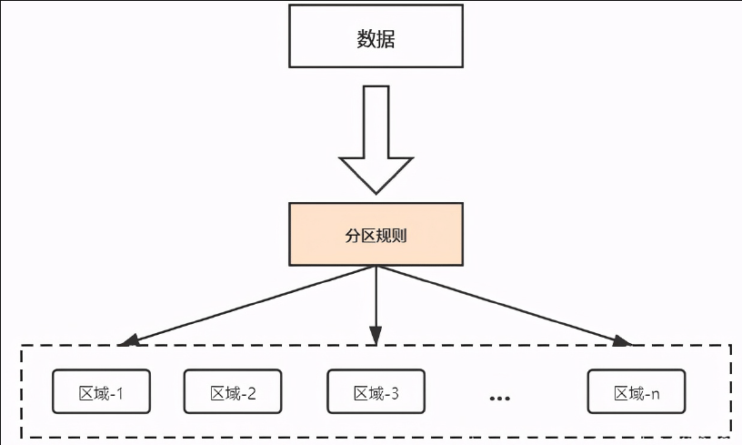
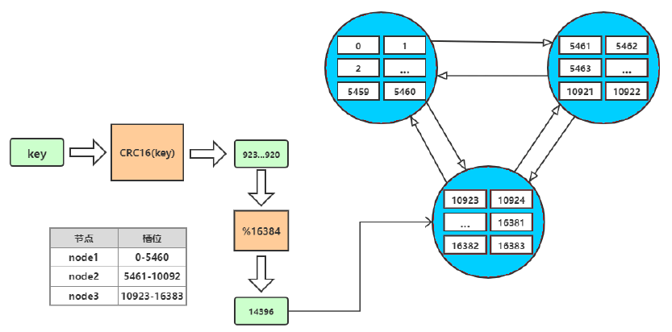
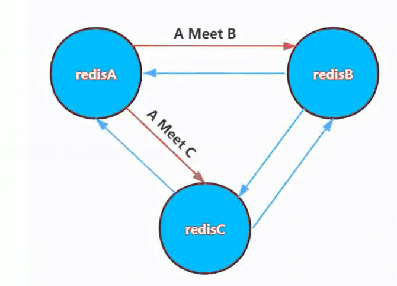
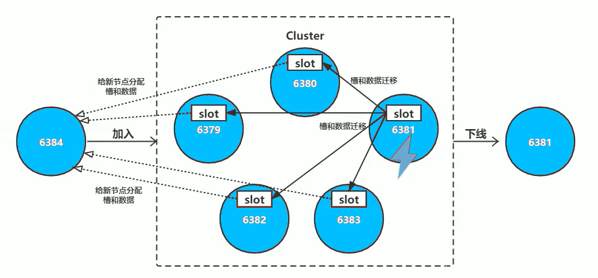
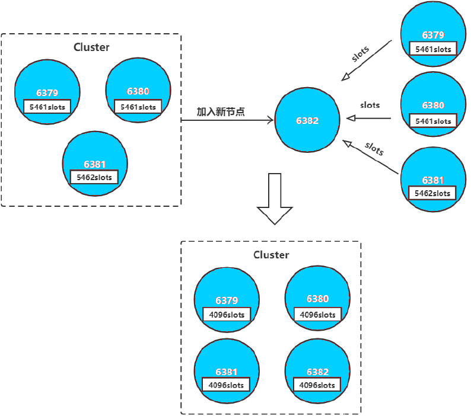
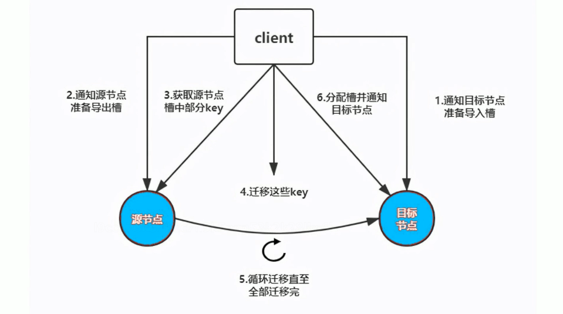
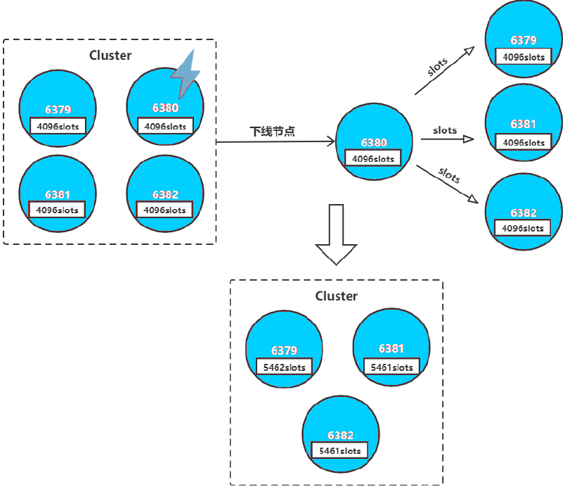

Linux: Redis
- TAGS: Linux
缓存技术
缓存cache是为了调节速度不一致的两个或多个不同的物质的速度，置于中间,可 以实现速度较快的一方加速访问速度较慢的一方的作用，比如CPU的一级、二级 缓存是保存了CPU最近经常访问的数据，内存是保存CPU经常访问硬盘的数据，而 且硬盘也有大小不一的缓存，甚至是物理服务器的raid卡有也缓存，都是为了起 到加速CPU访问硬盘数据的目的，因为CPU的速度太快了，CPU需要的数据由于硬 盘往往不能在短时间内满足CPU的需求，因此CPU缓存、内存、Raid卡缓存以及硬 盘缓存就在一定程度上满足了CPU的数据需求，即CPU从缓存读取数据,从而可以 大幅提高CPU的工作效率。

缓存 cache
buffer与cache
buffer：缓冲,也叫写缓冲，一般用于写操作，可以将数据先写入内存在写入磁 盘，buffer一般用于写缓冲，用于解决不同介质的速度不一致的缓冲，先将数据 临时写入到里自己最近的地方，以提高写入速度，CPU会把数据先写到内存的磁 盘缓冲区，然后应用就认为数据已经写入完成，然后由内核在后续的时间再写入 磁盘，所以服务器突然断电会丢失内存中的部分数据。
cache：缓存,也叫读缓存，一般用于读操作，CPU读文件从内存读，如果内存没 有,就先从硬盘读到内存再读到CPU，将需要频繁读取的数据放在里自己最近的缓 存区域，下次读取的时候即可快速读取。
向 /proc/sys/vm/drop_caches写入相应的修改值，会清理缓存。建议先执行 sync（sync命令将所有未写的系统缓冲区写到磁盘中，包含已修改的 i-node、 已延迟的块I/O 和读写映射文件）。执行echo 1、2、3 至 /proc/sys/vm/drop_caches,达到不同的清理目的
如果因为是应用有像内存泄露、溢出的问题时，从swap的使用情况是可以比较快 速可以判断的，但通过执行free反而比较难查看。但核心并不会因为内存泄露等 问题并没有快速清空buffer或cache（默认值是0），生产也不应该随便去改变此 值。
一般情况下，应用在系统上稳定运行了，free值也会保持在一个稳定值的。当发 生内存不足、应用获取不到可用内存、OOM错误等问题时，还是更应该去分析应 用方面的原因，否则，清空buffer，强制腾出free的大小，可能只是把问题给暂 时屏蔽了。
排除内存不足的情况外，除非是在软件开发阶段，需要临时清掉buffer，以判断 应用的内存使用情况；或应用已经不再提供支持，即使应用对内存的时候确实有 问题，而且无法避免的情况下，才考虑定时清空buffer。
范例：man proc
...省略... To free pagecache, use: echo 1 > /proc/sys/vm/drop_caches To free dentries and inodes, use: echo 2 > /proc/sys/vm/drop_caches To free pagecache, dentries and inodes, use: echo 3 > /proc/sys/vm/drop_caches Because writing to this file is a nondestructive operation and dirty objects are not freeable, the user should run sync(1) first.
范例：清理缓存
[root@centos8 ~]#cat /proc/sys/vm/drop_caches
0
[root@centos8 ~]#free -h
total used free shared buff/cache available
Mem: 798Mi 198Mi 60Mi 0.0Ki 538Mi 468Mi
Swap: 2.0Gi 9.0Mi 2.0Gi
[root@centos8 ~]#echo 3 > /proc/sys/vm/drop_caches
[root@centos8 ~]#free -h
total used free shared buff/cache available
Mem: 798Mi 247Mi 408Mi 1.0Mi 142Mi 426Mi
Swap: 2.0Gi 9.0Mi 2.0Gi
缓存保存位置及分层结构
互联网应用领域，提到缓存为王
- 用户层: 浏览器DNS缓存,应用程序DNS缓存,操作系统DNS缓存客户端
- 代理层: CDN,反向代理缓存
- Web层: 解释器Opcache,Web服务器缓存
- 应用层: 页面静态化
- 数据层: 分布式缓存,数据库
- 系统层: 操作系统cache
- 物理层: 磁盘cache, Raid Cache
cache 的特性
自动过期：给缓存的数据加上有效时间，超出时间后自动过期删除
强制过期：源网站更新图片后CDN是不会更新的，需要强制图片缓存过期，通过 CDN管理后台实现
命中率：即缓存的读取命中率
用户层缓存
DNS缓存
浏览器的DNS缓存默认为60秒，即60秒之内在访问同一个域名就不再进行DNS解析
范例：查看chrome浏览器的DNS缓存
注意：此方式新版的chrome 基于安全原因不再显示缓存信息
在浏览器的地址栏上输入：
chrome://net-internals/#dns

火狐浏览器缓存
地址栏输入下面指令可以查看Firefox的缓存信息
about:cache
前端技术 dns-prefetch
HTML5的新特性, 可以在html文件中进行DNS的 Prefetch

浏览器缓存过期机制
最后修改时间 last-modified
Last-Modified 是 HttpHeader 中的资源的最后修改时间，如果带有 Last-Modified ，下一次发送 Http请求时，将会发生带 If-modified-since 的 HttpHeader 。如果没有过期，将会收到 304 的响应，从缓存中读取。
浏览器请求文件时,会先获取服务器的文件的最后修改时间，再和本地浏览器缓 存中的文件时间相比，如果没有发生变化就返回给浏览器304的状态码，表示没 有发生变化，然后浏览器就使用的本地的缓存展示资源,如果变化,则重新再一次 向服务器请求资源
此方式也需要向服务器发送请求才可以使用缓存

Etag标记
Etag 是 HttpHeader 中代表资源的标签，在服务器端生成。如果带有 Etag，下 一次发送带 Etag 的请求，如果 Etag 没有变化将收到 304的响应，从缓存中读 取。
基于Etag标记是否一致做判断页面是否发生过变化，比如基于Nginx 的etag on来实现。
Etag 在使用时要注意相同资源多台 Web 服务器的 Etag 的一致性
此方式也需要向服务器发送请求才可以使用缓存
过期时间 expires
以上两种都需要发送请求，即不管资源是否过期都要发送请求进行协商，这样会消耗不必要的时间，因此有了缓存的过期时间
Expire 是 HttpHeader 中代表资源的过期时间，由服务器端设置。如果带有 Expire ，则在 Expire 过期前不会发生 Http请求，直接从缓存中读取。用户强 制 F5 例外
第一次请求资源时,响应报文带有资源的过期时间，默认为30天，当前此方式使 用的比较多，但是无法保证客户的时间都是准确并且一致的，因此会加入一个最 大生存周期，使用用户本地的时间计算缓存数据是否超过多少天，下面的过期时 间Expires:为2028年，但是缓存的最大生存周期Cache-Control: max-age=315360000，计算为天等于3650天即10年

混合使用和缓存刷新
通常 Last-Modified,Etag,Expire 是一起混合使用的
- 特别是 Last-Modified 和 Expire 经常一起使用，因为 Expire可以让浏览器 完全不发起 Http 请求，而当浏览器强制 F5 的时候又有Last-Modified ，这 样就很好的达到了浏览器段缓存的效果。
- Etag 和 Expire 一起使用时，先判断 Expire ，如果已经过期，再发起 Http 请求，如果 Etag 变化了，则返回 200 响应。如果 Etag 没有变化,则返回 304响应。
- Last-Modified,Etag,Expires 三个同时使用时。先判断 Expire ，然后发送 Http 请求，服务器先判断 last-modified ，再判断 Etag，必须都没有过期， 才能返回 304 响应。
缓存刷新
- 第一次访问,获取最新数据,返回 200响应码
- 鼠标点击二次访问(Cache),输入地址后回车,浏览器对所有没有过期的内容直 接使用本地缓存。
- F5或点刷新按钮,会向服务器发送请求缓存协商信息,last-modified和etag会 有影响,但expires本地过期时间不受影响,无变化返回304
- 按Ctrl+F5强制刷新,所有缓存不再使用,直接连接服务器,获取最新数据,返回200响应码
cookie 和 session
Cookie是访问某些网站以后在本地存储的一些网站相关的信息，下次再访问的时候减少一些步骤,比如加密后的账户名密码等信息
Cookies是服务器在客户端浏览器上存储的小段文本并随每一个请求发送至同一个服务器，是一种实现客户端保持状态的方案。
session称为会话信息，位于web服务器上，主要负责访问者与网站之间的交互，当浏览器请求http地址时，可以基于之前的session实现会话保持、session共享等。
CDN 缓存
什么是CDN


内容分发网络（Content Delivery Network，CDN）是建立并覆盖在承载网上， 由不同区域的服务器组成的分布式网络。将源站资源缓存到全国各地的边缘服务 器，利用全球调度系统使用户能够就近获取，有效降低访问延迟，降低源站压力,提 升服务可用性。
常见的CDN服务商
用户请求CDN流程
假设您的业务源站域名为 www.test.com ，域名接入 CDN开始使用加速服务后， 当您的用户发起HTTP请求时，实际的处理流程如下图所示

详细说明如下：
- 用户向 www.test.com 下的某图片资源（如：1.jpg）发起请求，会先向 Local DNS 发起域名解析请求。
- 当 Local DNS 解析 www.test.com 时，会发现已经配置了 CNAME www.test.com.cdn.dnsv1.com ，解析请求会发送至 Tencent DNS（GSLB）， GSLB 为腾讯云自主研发的调度体系，会为请求分配最佳节点IP。
- Local DNS 获取 Tencent DNS 返回的解析 IP。
- 用户获取解析 IP。
- 用户向获取的 IP 发起对资源 1.jpg 的访问请求。
若该 IP 对应的节点缓存有1.jpg，则会将数据直接返回给用户（10），此时 请求结束。若该节点未缓存1.jpg，则节点会向业务源站发起对 1.jpg的请求 （6、7、8），获取资源后，结合用户自定义配置的缓存策略，将资源缓存至 节点（9），并返回给用户（10），此时请求结束。

利用 302 实现转发请求重定向至最优服务器集群
因为中国网络较为复杂，依赖DNS就近解析的调度，仍然会存在部分请求调度失效、调度生效慢等问题。
比如:腾讯云利用在全国部署的302重定向服务器集群，能够为每一个请求实时决 策最优的服务器资源，精准解决小运营商的调度问题，提升用户访问质量,能最 快地把用户引导到最优的服务器节点上，避开性能差或者异常的节点。

CDN 分层缓存
提前对静态内容进行预缓存，避免大量的请求回源，导致主站网络带宽被打满而 导致数据无法更新，另外CDN可以将数据根据访问的热度不同而进行不同级别的 缓存，例如:访问量最高的资源访问CDN边缘节点的内存，其次的放在SSD或者 SATA，再其次的放在云存储，这样兼顾了速度与成本。
比如:腾讯云CDN节点，根据用户的数据冷热不同，动态的进行识别，按照cache 层次进行数据的存储，在访问频率到40%-90%的数据，首先放在OC边缘节点内存 cache中，提供8G-64G的数据空间存储;在访问频率到30%-50%的数据，放在OC节 点SSD/SATA硬盘cache中，提供1T-15T的数据空间存猪，其他的比较冷的数据， 放在云存储中，采用回源拉取的方式进行处理。这样在成本和效率中计算出最优 平衡点，为客户提供服务。

CDN主要优势
CDN 有效地解决了目前互联网业务中网络层面的以下问题：
- 用户与业务服务器地域间物理距离较远，需要进行多次网络转发，传输延时较高且不稳定。
- 用户使用运营商与业务服务器所在运营商不同，请求需要运营商之间进行互联转发。
- 业务服务器网络带宽、处理能力有限，当接收到海量用户请求时，会导致响应速度降低、可用性降低。
- 利用CDN防止和抵御DDos等攻击,实现安全保护
应用层缓存
Nginx、PHP等web服务可以设置应用缓存以加速响应用户请求，另外有些解释性 语言，比如：PHP/Python/Java不能直接运行，需要先编译成字节码，但字节码 需要解释器解释为机器码之后才能执行，因此字节码也是一种缓存，有时候还会 出现程序代码上线后字节码没有更新的现象。所以一般上线新版前,需要先将应 用缓存清理,再上线新版
另外可以利用动态页面静态化技术,加速访问,比如:将访问数据库的数据的动态 页面,提前用程序生成静态页面文件html.电商网站的商品介绍,评论信息非实时 数据等皆可利用此技术实现
数据层缓存
分布式缓存服务
- Redis
- Memcached
数据库
- MySQL 查询缓存
- innodb缓存、MyISAM缓存


redis 部署与使用
redis 基础
NoSQL 数据库
什么是NOSQL
数据库主要分为两大类:关系型数据库与NoSQL数据库。
关系型数据库，是建立在关系模型基础上的数据库，其借助于集合代数等数学概念和方法来处理数据库中的数据。主流的MySQL、Oracle、MSSQL Server和DB2都属于这类传统数据库。
NoSQL数据库，全称为Not OnlySQ，意思就是适用关系型数据库的时候就使用关系型数据库，不适用的时候可以考虑使用更加合适的数据存储。NoSQL是对不同于传统的关系型数据库的数据库管理系统的统称。
NoSQL用于超大规模数据的存储。(例如谷歌或Facebook每天为他们的月用户收集万亿比特的数据)。这些类型的数据存储不需要固定的模式，无需多余操作就可以横向扩展。
NoSQL起源
NoSQL一词最早出现于1998年，是Carlo Strozzi开发的一个轻量、开源、不提供SQL功能的关系数据库。
2009年，Last.fm的Johan Oskarsson发起了一次关于分布式开源数据库的讨论，来自Rackspace的Eric Evans再次提出了NoSQL的概念，这时的NoSQL主要指非关系型、分布式、不提供ACID的数据库设计模式。
2009年在亚特兰大举行的"no:sql(east)"讨论会是一个里程碑，其口号是"select fun, profit from real_world where relational=false;"。因此，对NoSQL最普遍的解释是"非关联型的"，强调Key-Value Stores和文档数据库的优点，而不是单纯的反对RDBMS。
为什么使用NoSQL
Oracle，MySQL等传统的关系数据库非常成熟并且已大规模商用，为什么还要用NoSQL数据库呢?
主要是由于随着互联网发展，数据量越来越大，对性能要求越来越高，传统数据库存在着先天性的缺陷，即单机(单库)性能瓶颈，并且扩展困难。这样既有单机单库瓶颈，却又扩展困难，自然无法满足日益增长的海量数据布存储及其性能要求，所以才会出现了各种不同的NoSQL产品，NoSQL根本性的优势在于在云计算时代，简单、易于大规模分布式扩展，并且读写性能非常高。
通过第三方平台(如:Google，Facebook等)可以很容易的访问问和抓取数据。用户的个人信息，社交网络，地理位置，用户生成的数据和用户操作日志已经成倍的增加。如果要对这些用户数据进行挖掘，那SQL数据库已经不适合这些应用了，NoSQL数据库的发展却能很好的处理这些大的数据。
RDBMS和NOSQL对比
RDBMS
- 高度组织化结构化数据
- 结构化查询语言(SQL)
- 数据和关系都存储在单独的表中。
- 数据操纵语言，数据定义语言
- 严格的一致性
- 基础事务
NOSQL
- 代表着不仅仅是SQL，没有声明性查询语言
- 没有预定义的模式
- 最终一致性，而非ACID属性
- 非结构化和不可预知的数据
- CAP定理
- 高性能，高可用性和可伸缩性
RDBMS和NOSQL的特点及优缺点：
| 关系型数据库 | NoSQL数据库 | |
|---|---|---|
| 特点 | 数据关系模型基于关系模型,结构化存储,完整性约束 | 非结构化的存储 |
| 基于二维表及其之间的联系,需要连接、并、交、差、除等数据操作 | 基于多维关系模型 | |
| 采用结构化的查询语言(SQL)做数据读写 | 具有特有的使用场景 | |
| 操作需要数据的一致性，需要事务甚至是强一致性 | ||
| 优点 | 保持数据的一致性(事务处理) | 保持数据的一致性(事务处理) |
| 可以进行join等复杂查询 | 基本支持分布式,易于扩展,可伸缩 | |
| 通用化,技术成熟 | 简单，弱结构化存储 | |
| 缺点 | 数据读写必须经过sql解析,大量数据、高并发下读写性能不足 | join等复杂操作能力较弱 |
| 对数据做读写,或修改数据结构时需要加锁，影响并发操作 | 事务支持较弱 | |
| 无法适应非结构化存储 | 通用性差 | |
| 通用性差 | 无完整约束复杂业务场景支持较差 | |
| 昂贵、复杂 |
CAP定理(CAP theorem)
在计算机科学中，CAP定理(CAP theorem)，又被称为布鲁尔定理(Brewer's theorem)，它指出对于一个分布式计算系统来说，不可能同时满足以下三点:
- 一致性(Consistency): 所有节点在同一时间具有相同的数据
- 可用性(Availability): 保证每个请求不管成功或者失败都有响应
- 分区容忍(Partition tolerance): 系统中任意信息的丢失或失败不会影响系统的继续运作
CAP理论的核心是:一个分布式系统不可能同时很好的满足一致性，可用性和分区容错性这三个需求，最多只能同时较好的满足两个。
因此，根据CAP原理将NoSQL数据库分成了满足CA原则、满足CCP原则和满足AP原则三大类:
- CA-单点集群，满足一致性，可用性的系统，通常在可扩展性上不太强大。
- CP-满足一致性，分区容忍性的系统，通常性能不是特别高。
- AP-满足可用性，分区容忍性的系统，通常可能对一致性要求低一些。
NoSQL数据库分类
- 列存储
- 顾名思义，是按列存储数据的。最大的特点是方便存储结构化和半结构化数据，方便做数据压缩，对针对某一列或者某几列的查询有非常大的lo优势。|
- HbaseCassandraHypertable
- 文档存储
- 文档存储一般用类似json的格式存储，存储的内容是文档型的。这样也就有机会对某些字段建立索引，实现关系数据库的某些功能。
- MongoDB CouchDB
- key-value存储
- 可以通过key快速查询到其value。一般来说，存储不管value的格式，照单全收。(Redis包含了其他功能)
- Tokyo Cabinet / TyrantBerkeley
- Memcache, Redis
- 图存储
- 图形关系的最佳存储。使用传统关系数据库来解决的话性能低下，而且设计使用不方便。
- Neo4JFlockDB
- 对象存储
- 通过类似面向对象语言的语法操作数据库，通过对象的方式存取数据。
- db4oVersant
- xml数据库
- 高效的存储XML数据，并支持XML的内部查询语法，比如XQuery，Xpaath
- Berkeley DB XMLBaseX
redis 简介
Redis (Remote Dictionary Server远程字典服务)是一个遵循BSD MIT开源协议的高性能的NoSQL.Redis基于ANShC语言语言)编写的key-value数据库，是意大利的 Salvatore Sanfilippo在2009年发布，从2010年3月15日起，Redis的开发工作由VMware主持。从2013年5月开始，Redis的开发由Pivota公司赞助。目前国内外使用的公司众多，比如:阿里，腾讯，百度，京东，新浪微博，GitHub，Twitter等。
Redis的出现，很大程度补偿了memcached这类key/value存储的不足，在部分场合可以对关系数据库起到很好的补充作用。它提供了Java， C/C++， Go， C#，PHP，JavaScript，Perl， Object-C，Python，Ruby，Erlang等客户端
Redis在高并发、低延迟环境要求比较高的环境使用量非常广泛，目前redis在 DB-Engine月排行榜https://db-engines.com/en/ranking中一直比较靠前，而且 一直是键值型存储类的首位

官网地址：https://redis.io/
Redis 特性
- 速度快: 10W QPS,基于内存,C语言实现
- 单线程
- 持久化
- 支持多种数据结构
- 支持多种编程语言
- 功能丰富: 支持Lua脚本,发布订阅,事务,pipeline等功能
- 简单: 代码短小精悍(单机核心代码只有23000行左右),单线程开发容易,不依赖外部库,使用简单
- 主从复制
- 支持高可用和分布式
单线程
Redis 6.0版本前一直是单线程方式处理用户的请求

单线程为何如此快?
- 纯内存
- 非阻塞
避免线程切换和竞态消耗

注意事项:
- 一次只运行一条命令
- 拒绝长(慢)命令:keys *, flushall, flushdb, slow lua script, mutil/exec, operate big value(collection)
- 其实不是单线程: 早期版本是单进程单线程,3版本后实际还有其它的线程, fysnc file descriptor,close file descriptor
redis 对比 memcached
- 支持数据的持久化：可以将内存中的数据保持在磁盘中，重启redis服务或者服务器之后可以从备份文件中恢复数据到内存继续使用
- 支持更多的数据类型：支持string(字符串)、hash(哈希数据)、list(列表)、set(集合)、zset(有序集合)
- 支持数据的备份：可以实现类似于数据的master-slave模式的数据备份，另外也支持使用快照+AOF
- 支持更大的value数据：memcache单个key value最大只支持1MB，而redis最大支持512MB(生产不建议超过2M,性能受影响)
- 在Redis6版本前,Redis 是单线程，而memcached是多线程，所以单机情况下没有memcached 并发高,性能更好,但redis 支持分布式集群以实现更高的并发，单Redis实例可以实现数万并发
- 支持集群横向扩展：基于redis cluster的横向扩展，可以实现分布式集群，大幅提升性能和数据安全性
- 都是基于 C 语言开发
redis 典型应用场景
- Session 共享：常见于web集群中的Tomcat或者PHP中多web服务器session共享
- 缓存：数据查询、电商网站商品信息、新闻内容
- 计数器：访问排行榜、商品浏览数等和次数相关的数值统计场景
- 微博/微信社交场合：共同好友,粉丝数,关注,点赞评论等
- 消息队列：ELK的日志缓存、部分业务的订阅发布系统
- 地理位置: 基于GEO(地理信息定位),实现摇一摇,附近的人,外卖等功能


缓存的实现流程
数据更新操作流程：

数据读操作流程：

Redis 安装及连接
yum安装redis
在centos系统上需要安装epel源
查看yum仓库redis版本
#CentOS 8 由系统源提供 [root@centos8 ~]#yum info redis Installed Packages Name : redis Version : 5.0.3 Release : 1.module_el8.0.0+6+ab019c03 Arch : x86_64 Size : 3.3 M Source : redis-5.0.3-1.module_el8.0.0+6+ab019c03.src.rpm Repo : @System From repo : AppStream Summary : A persistent key-value database URL : http://redis.io License : BSD and MIT Description : Redis is an advanced key-value store. It is often referred to as a data : structure server since keys can contain strings, hashes, lists, sets and : sorted sets. : : You can run atomic operations on these types, like appending to a string; : incrementing the value in a hash; pushing to a list; computing set : intersection, union and difference; or getting the member with highest : ranking in a sorted set. : : In order to achieve its outstanding performance, Redis works with an : in-memory dataset. Depending on your use case, you can persist it either : by dumping the dataset to disk every once in a while, or by appending : each command to a log. : : Redis also supports trivial-to-setup master-slave replication, with very : fast non-blocking first synchronization, auto-reconnection on net split : and so forth. : : Other features include Transactions, Pub/Sub, Lua scripting, Keys with a : limited time-to-live, and configuration settings to make Redis behave like : a cache. : : You can use Redis from most programming languages also. #CentOS 7 由epel源提供 [root@node7 ~]# yum info redis Loaded plugins: fastestmirror Loading mirror speeds from cached hostfile * base: mirrors.aliyun.com * epel: mirrors.aliyun.com * extras: mirrors.aliyun.com Available Packages Name : redis Arch : x86_64 Version : 3.2.12 Release : 2.el7 Size : 544 k Repo : epel/7/x86_64 Summary : A persistent key-value database URL : http://redis.io License : BSD Description : Redis is an advanced key-value store. It is often referred to as a data : structure server since keys can contain strings, hashes, lists, sets and : sorted sets. : : You can run atomic operations on these types, like appending to a string; : incrementing the value in a hash; pushing to a list; computing set : intersection, union and difference; or getting the member with highest : ranking in a sorted set. : : In order to achieve its outstanding performance, Redis works with an : in-memory dataset. Depending on your use case, you can persist it either : by dumping the dataset to disk every once in a while, or by appending : each command to a log. : : Redis also supports trivial-to-setup master-slave replication, with very : fast non-blocking first synchronization, auto-reconnection on net split : and so forth. : : Other features include Transactions, Pub/Sub, Lua scripting, Keys with a : limited time-to-live, and configuration settings to make Redis behave like : a cache. : : You can use Redis from most programming languages also.
yum安装 redis
[root@centos8 ~]#dnf -y install redis
[root@centos8 ~]#systemctl enable --now redis
[root@centos8 ~]#ss -ntl
State Recv-Q Send-Q Local Address:Port Peer Address:Port
LISTEN 0 128 0.0.0.0:22 0.0.0.0:*
LISTEN 0 128 127.0.0.1:6379 0.0.0.0:*
LISTEN 0 128 [::]:22 [::]:*
[root@centos8 ~]#pstree -p | grep redis
|-redis-server(16812)-+-{redis-server}(16813)
| |-{redis-server}(16814)
apt install redis -y
└─# dpkg -L redis
/.
/usr
/usr/share
/usr/share/doc
/usr/share/doc/redis
/usr/share/doc/redis/changelog.Debian.gz
/usr/share/doc/redis/changelog.gz
/usr/share/doc/redis/copyright
/usr/share/doc/redis/00-RELEASENOTES.gz
┌──(root㉿kali)-[~]
└─# dpkg -L redis-server
/.
/etc
/etc/default
/etc/default/redis-server
/etc/init.d
/etc/init.d/redis-server
/etc/logrotate.d
/etc/logrotate.d/redis-server
/etc/redis
/etc/redis/redis.conf
/usr
/usr/bin
/usr/lib
/usr/lib/systemd
/usr/lib/systemd/system
/usr/lib/systemd/system/redis-server.service
/usr/lib/systemd/system/redis-server@.service
/usr/share
/usr/share/doc
/usr/share/doc/redis-server
└─# cat /usr/lib/systemd/system/redis-server.service
[Unit]
Description=Advanced key-value store
After=network.target
Documentation=http://redis.io/documentation, man:redis-server(1)
[Service]
Type=notify
ExecStart=/usr/bin/redis-server /etc/redis/redis.conf --supervised systemd --daemonize no
PIDFile=/run/redis/redis-server.pid
TimeoutStopSec=0
Restart=always
User=redis
Group=redis
RuntimeDirectory=redis
RuntimeDirectoryMode=2755
UMask=007
PrivateTmp=true
LimitNOFILE=65535
PrivateDevices=true
ProtectHome=true
ProtectSystem=stri
....
systemctl start redis-server
[root@centos8 ~]#redis-cli
127.0.0.1:6379> ping
PONG
127.0.0.1:6379> info
# Server
redis_version:5.0.3
redis_git_sha1:00000000
redis_git_dirty:0
redis_build_id:8c0bf22bfba82c8f
redis_mode:standalone
os:Linux 4.18.0-80.el8.x86_64 x86_64
arch_bits:64
multiplexing_api:epoll
atomicvar_api:atomic-builtin
gcc_version:8.2.1
process_id:16812
run_id:2af1a9195554cb7d268b5e782b58e3a23135c418
tcp_port:6379
uptime_in_seconds:89
uptime_in_days:0
hz:10
configured_hz:10
lru_clock:9451885
executable:/usr/bin/redis-server
config_file:/etc/redis.conf
# Clients
connected_clients:1
client_recent_max_input_buffer:2
client_recent_max_output_buffer:0
blocked_clients:0
# Memory
used_memory:853896
used_memory_human:833.88K
used_memory_rss:13012992
used_memory_rss_human:12.41M
used_memory_peak:853896
used_memory_peak_human:833.88K
used_memory_peak_perc:100.12%
used_memory_overhead:840694
used_memory_startup:791000
used_memory_dataset:13202
used_memory_dataset_perc:20.99%
allocator_allocated:1477016
allocator_active:1806336
allocator_resident:8712192
total_system_memory:836886528
total_system_memory_human:798.12M
used_memory_lua:37888
used_memory_lua_human:37.00K
used_memory_scripts:0
used_memory_scripts_human:0B
number_of_cached_scripts:0
maxmemory:0
maxmemory_human:0B
maxmemory_policy:noeviction
allocator_frag_ratio:1.22
allocator_frag_bytes:329320
allocator_rss_ratio:4.82
allocator_rss_bytes:6905856
rss_overhead_ratio:1.49
rss_overhead_bytes:4300800
mem_fragmentation_ratio:16.03
mem_fragmentation_bytes:12201096
mem_not_counted_for_evict:0
mem_replication_backlog:0
mem_clients_slaves:0
mem_clients_normal:49694
mem_aof_buffer:0
mem_allocator:jemalloc-5.1.0
active_defrag_running:0
lazyfree_pending_objects:0
# Persistence
loading:0
rdb_changes_since_last_save:0
rdb_bgsave_in_progress:0
rdb_last_save_time:1603287316
rdb_last_bgsave_status:ok
rdb_last_bgsave_time_sec:-1
rdb_current_bgsave_time_sec:-1
rdb_last_cow_size:0
aof_enabled:0
aof_rewrite_in_progress:0
aof_rewrite_scheduled:0
aof_last_rewrite_time_sec:-1
aof_current_rewrite_time_sec:-1
aof_last_bgrewrite_status:ok
aof_last_write_status:ok
aof_last_cow_size:0
# Stats
total_connections_received:1
total_commands_processed:2
instantaneous_ops_per_sec:0
total_net_input_bytes:45
total_net_output_bytes:11475
instantaneous_input_kbps:0.00
instantaneous_output_kbps:0.00
rejected_connections:0
sync_full:0
sync_partial_ok:0
sync_partial_err:0
expired_keys:0
expired_stale_perc:0.00
expired_time_cap_reached_count:0
evicted_keys:0
keyspace_hits:0
keyspace_misses:0
pubsub_channels:0
pubsub_patterns:0
latest_fork_usec:0
migrate_cached_sockets:0
slave_expires_tracked_keys:0
active_defrag_hits:0
active_defrag_misses:0
active_defrag_key_hits:0
active_defrag_key_misses:0
# Replication
role:master
connected_slaves:0
master_replid:cc6c17d57ae2848acfa6c93c116b3fb7e9bc305b
master_replid2:0000000000000000000000000000000000000000
master_repl_offset:0
second_repl_offset:-1
repl_backlog_active:0
repl_backlog_size:1048576
repl_backlog_first_byte_offset:0
repl_backlog_histlen:0
# CPU
used_cpu_sys:0.113862
used_cpu_user:0.015991
used_cpu_sys_children:0.000000
used_cpu_user_children:0.000000
# Cluster
cluster_enabled:0
# Keyspace
127.0.0.1:6379>quit
编译安装 redis

编译安装
官方的安装方法：
https://redis.io/download
范例：编译安装过程
#安装依赖包, redis依赖jemalloc进行内存分配 [root@centos8 ~]#yum -y install make gcc jemalloc-devel #如果支持systemd需要安装下面依赖 yum -y install gcc jemalloc-devel systemd-devel apt -y install make gcc libjemalloc-dev libsystemd-dev #下载源码包 wget http://download.redis.io/releases/redis-5.0.9.tar.gz tar xf redis-5.0.9.tar.gz #编译安装 cd redis-5.0.9/ make -j 2 PREFIX=/apps/redis install #支持systemd make -j 2 USE_SYSTEMD=yes PREFIX=/apps/redis install 配置变量 echo "PATH=/apps/redis/bin:$PATH" > /etc/profile.d/redis.sh . /etc/profile.d/redis.sh #目录结构 #tree /apps/redis/ /apps/redis/ └── bin ├── redis-benchmark ├── redis-check-aof ├── redis-check-rdb ├── redis-cli ├── redis-sentinel -> redis-server └── redis-server 1 directory, 6 files #准备相关目录和文件 mkdir /apps/redis/{etc,log,data,run} cp redis.conf /apps/redis/etc/ grep -Ev "^#|^$" /apps/redis/etc/redis.conf
前台启动 redis
redis-server 是redis 服务器程序
[root@centos8 ~]#redis-server --help
Usage: ./redis-server [/path/to/redis.conf] [options]
./redis-server - (read config from stdin)
./redis-server -v or --version
./redis-server -h or --help
./redis-server --test-memory <megabytes>
Examples:
./redis-server (run the server with default conf)
./redis-server /etc/redis/6379.conf
./redis-server --port 7777
./redis-server --port 7777 --replicaof 127.0.0.1 8888
./redis-server /etc/myredis.conf --loglevel verbose
Sentinel mode:
./redis-server /etc/sentinel.conf --sentinel
前台启动 redis
[root@centos8 ~]#redis-server /apps/redis/etc/redis.conf 16418:C 22 Oct 2020 10:43:29.813 # oO0OoO0OoO0Oo Redis is starting oO0OoO0OoO0Oo 16418:C 22 Oct 2020 10:43:29.813 # Redis version=5.0.9, bits=64, commit=00000000, modified=0, pid=16418, just started 16418:C 22 Oct 2020 10:43:29.813 # Configuration loaded 16418:M 22 Oct 2020 10:43:29.814 * Increased maximum number of open files to 10032 (it was originally set to 1024). _._ _.-``__ ''-._ _.-`` `. `_. ''-._ Redis 5.0.9 (00000000/0) 64 bit .-`` .-```. ```\/ _.,_ ''-._ ( ' , .-` | `, ) Running in standalone mode |`-._`-...-` __...-.``-._|'` _.-'| Port: 6379 | `-._ `._ / _.-' | PID: 16418 `-._ `-._ `-./ _.-' _.-' |`-._`-._ `-.__.-' _.-'_.-'| | `-._`-._ _.-'_.-' | http://redis.io `-._ `-._`-.__.-'_.-' _.-' |`-._`-._ `-.__.-' _.-'_.-'| | `-._`-._ _.-'_.-' | `-._ `-._`-.__.-'_.-' _.-' `-._ `-.__.-' _.-' `-._ _.-' `-.__.-' 16418:M 22 Oct 2020 10:43:29.815 # WARNING: The TCP backlog setting of 511 cannot be enforced because /proc/sys/net/core/somaxconn is set to the lower value of 128. 16418:M 22 Oct 2020 10:43:29.815 # Server initialized 16418:M 22 Oct 2020 10:43:29.815 # WARNING overcommit_memory is set to 0! Background save may fail under low memory condition. To fix this issue add 'vm.overcommit_memory = 1' to /etc/sysctl.conf and then reboot or run the command 'sysctl vm.overcommit_memory=1' for this to take effect. 16418:M 22 Oct 2020 10:43:29.815 # WARNING you have Transparent Huge Pages (THP) support enabled in your kernel. This will create latency and memory usage issues with Redis. To fix this issue run the command 'echo madvise > /sys/kernel/mm/transparent_hugepage/enabled' as root, and add it to your /etc/rc.local in order to retain the setting after a reboot. Redis must be restarted after THP is disabled (set to 'madvise' or 'never'). 16418:M 22 Oct 2020 10:43:29.815 * Loading RDB produced by version 6.0.8 16418:M 22 Oct 2020 10:43:29.815 * RDB age 603 seconds 16418:M 22 Oct 2020 10:43:29.815 * RDB memory usage when created 0.77 Mb 16418:M 22 Oct 2020 10:43:29.815 * DB loaded from disk: 0.000 seconds 16418:M 22 Oct 2020 10:43:29.815 * Ready to accept connections [root@centos8 ~]#ss -ntl State Recv-Q Send-Q Local Address:Port Peer Address:Port LISTEN 0 128 0.0.0.0:22 0.0.0.0:* LISTEN 0 128 127.0.0.1:6379 0.0.0.0:* LISTEN 0 128 [::]:22 [::]:*
解决启动时的三个警告提示
- tcp-backlog
警告提示如下：
17191:M 22 Oct 2020 11:17:28.355 # WARNING: The TCP backlog setting of 511 cannot be enforced because /proc/sys/net/core/somaxconn is set to the lower value of 128.
backlog参数控制的是三次握手的时候server端收到client.ack确认号之后的队列值，即全连接队列
#将其值改大 [root@centos8 ~]#echo "net.core.somaxconn = 1024" >> /etc/sysctl.conf [root@centos8 ~]#sysctl -p net.core.somaxconn = 1024
- vm.overcommit_memory
警告提示如下：
17191:M 22 Oct 2020 11:17:28.355 # WARNING overcommit_memory is set to 0! Background save may fail under low memory condition. To fix this issue add 'vm.overcommit_memory = 1' to /etc/sysctl.conf and then reboot or run the command 'sysctl vm.overcommit_memory=1' for this to take effect.
查看警告信息有提示，建议将其值改为1
[root@centos8 ~]#echo "vm.overcommit_memory=1" >> /etc/sysctl.conf [root@centos8 ~]#sysctl -p net.core.somaxconn = 1024 vm.overcommit_memory = 1内核参数说明：
0 表示内核将检查是否有足够的可用内存供应用进程使用；如果有足够的可用内存，内存申请允许；否则，内存申请失败，并把错误返回给应用进程。 1 表示内核允许分配所有的物理内存，而不管当前的内存状态如何 2 表示内核允许分配超过所有物理内存和交换空间总和的内存
- transparent huge pages
警告提示信息如下：
17191:M 22 Oct 2020 11:17:28.355 # WARNING you have Transparent Huge Pages (THP) support enabled in your kernel. This will create latency and memory usage issues with Redis. To fix this issue run the command 'echo madvise > /sys/kernel/mm/transparent_hugepage/enabled' as root, and add it to your /etc/rc.local in order to retain the setting after a reboot. Redis must be restarted after THP is disabled (set to 'madvise' or 'never'). 警告：您在内核中启用了透明大页面（THP,不同于一般内存页的4k为2M）支持。 这将在Redis中造成延迟和内存使用问题。 要解决此问题，请以root 用户身份运行命令“echo never> /sys/kernel/mm/transparent_hugepage/enabled”，并将其添加到您的/etc/rc.local中，以便在重启后保留设置。禁用THP后，必须重新启动Redis。
解决方法：
[root@centos8 ~]#echo never > /sys/kernel/mm/transparent_hugepage/enabled [root@centos8 ~]#echo "echo never > /sys/kernel/mm/transparent_hugepage/enabled" >> /etc/rc.d/rc.local [root@centos8 ~]#cat /etc/rc.d/rc.local #!/bin/bash # THIS FILE IS ADDED FOR COMPATIBILITY PURPOSES # # It is highly advisable to create own systemd services or udev rules # to run scripts during boot instead of using this file. # # In contrast to previous versions due to parallel execution during boot # this script will NOT be run after all other services. # # Please note that you must run 'chmod +x /etc/rc.d/rc.local' to ensure # that this script will be executed during boot. touch /var/lock/subsys/local echo never > /sys/kernel/mm/transparent_hugepage/enabled [root@centos8 ~]#chmod +x /etc/rc.d/rc.local
- 再次前端启动 redis
建议在其它redis服务器上做以上配置
[root@centos8 ~]#redis-server --port 6379 17436:C 22 Oct 2020 11:46:17.793 # oO0OoO0OoO0Oo Redis is starting oO0OoO0OoO0Oo 17436:C 22 Oct 2020 11:46:17.793 # Redis version=5.0.9, bits=64, commit=00000000, modified=0, pid=17436, just started 17436:C 22 Oct 2020 11:46:17.793 # Configuration loaded 17436:M 22 Oct 2020 11:46:17.794 * Increased maximum number of open files to 10032 (it was originally set to 1024). _._ _.-``__ ''-._ _.-`` `. `_. ''-._ Redis 5.0.9 (00000000/0) 64 bit .-`` .-```. ```\/ _.,_ ''-._ ( ' , .-` | `, ) Running in standalone mode |`-._`-...-` __...-.``-._|'` _.-'| Port: 6380 | `-._ `._ / _.-' | PID: 17436 `-._ `-._ `-./ _.-' _.-' |`-._`-._ `-.__.-' _.-'_.-'| | `-._`-._ _.-'_.-' | http://redis.io `-._ `-._`-.__.-'_.-' _.-' |`-._`-._ `-.__.-' _.-'_.-'| | `-._`-._ _.-'_.-' | `-._ `-._`-.__.-'_.-' _.-' `-._ `-.__.-' _.-' `-._ _.-' `-.__.-' 17436:M 22 Oct 2020 11:46:17.795 # Server initialized 17436:M 22 Oct 2020 11:46:17.795 * Loading RDB produced by version 6.0.8 17436:M 22 Oct 2020 11:46:17.795 * RDB age 3455 seconds 17436:M 22 Oct 2020 11:46:17.795 * RDB memory usage when created 0.77 Mb 17436:M 22 Oct 2020 11:46:17.795 * DB loaded from disk: 0.000 seconds 17436:M 22 Oct 2020 11:46:17.795 * Ready to accept connections
创建 redis 用户和设置数据目录权限
useradd -r -s /sbin/nologin redis #设置目录权限 chown -R redis:redis /apps/redis/
创建 redis 服务Service文件
cat <<\EOF> /lib/systemd/system/redis.service
[Unit]
Description=Redis persistent key-value database
After=network.target
[Service]
ExecStart=/apps/redis/bin/redis-server /apps/redis/etc/redis.conf --supervised systemd
ExecStop=/bin/kill -s QUIT $MAINPID
Type=notify
User=redis
Group=redis
RuntimeDirectory=redis
RuntimeDirectoryMode=0755
LimitNOFILE=10000032
[Install]
WantedBy=multi-user.target
EOF
Redis通过Service方式启动
systemctl daemon-reload systemctl enable --now redis [root@centos8 ~]#ss -ntl State Recv-Q Send-Q Local Address:Port Peer Address:Port LISTEN 0 128 0.0.0.0:22 0.0.0.0:* LISTEN 0 511 127.0.0.1:6379 0.0.0.0:* LISTEN 0 128 [::]:22 [::]:*
使用客户端连接 redis

格式：
redis-cli -h IP/HOSTNAME -p PORT -a PASSWORD
范例：
[root@centos8 ~]#redis-cli 127.0.0.1:6379> info # Server 127.0.0.1:6379>
创建命令软链接
[root@centos8 ~]#ln -s /apps/redis/bin/ /usr/bin/
实战案例：一键编译安装Redis脚本
[root@centos8 ~]#cat install_general_redis.sh #!/bin/bash . /etc/init.d/functions VERSION=redis-5.0.9 DIR1=/apps/redis PASSWORD=centos install() { yum -y install make gcc tcl &> /dev/null || { action "安装所需包失败，请检测包或网络配置" false;exit;} wget http://download.redis.io/releases/${VERSION}.tar.gz &> /dev/null || { action "Redis 源码下载失败" false; exit; } tar xf $VERSION.tar.gz cd $VERSION/ make -j 2 &> /dev/null && make PREFIX=${DIR1} install &> /dev/null && action "Redis 编译安装成功" || { action "Redis 编译安装失败" false;exit; } ln -s ${DIR1}/bin/* /usr/bin/ mkdir -p ${DIR1}/{etc,data,log,run} cd cp $VERSION/redis.conf $DIR1/etc sed -i -e "s/bind 127.0.0.1/bind 0.0.0.0/" -e "/# requirepass/a requirepass ${PASSWORD}" -e "/^dir .*/c dir ${DIR1}/data/" -e "/logfile .*/c logfile ${DIR1}/log/redis_6379.log" -e "/^pidfile .*/c pidfile ${DIR1}/run/redis_6379.pid" ${DIR1}/etc/redis.conf if id redis &> /dev/null;then action "redis 用户已经存在" false else useradd -r -s /sbin/nologin redis action "redis 用户创建成功" fi chown -R redis.redis ${DIR1} cat >> /etc/sysctl.conf <<EOF net.core.somaxconn = 1024 vm.overcommit_memory = 1 EOF sysctl -p echo never > /sys/kernel/mm/transparent_hugepage/enabled echo "echo never > /sys/kernel/mm/transparent_hugepage/enabled" >> /etc/rc.d/rc.local chmod +x /etc/rc.d/rc.local /etc/rc.d/rc.local cat > /lib/systemd/system/redis.service <<EOF [Unit] Description=Redis persistent key-value database After=network.target [Service] ExecStart=${DIR1}/bin/redis-server ${DIR1}/etc/redis.conf --supervised systemd ExecStop=/bin/kill -s QUIT \$MAINPID Type=notify User=redis Group=redis RuntimeDirectory=redis RuntimeDirectoryMode=0755 [Install] WantedBy=multi-user.target EOF systemctl daemon-reload systemctl enable --now redis &> /dev/null && action "redis 服务启动成功" || { action "redis 服务启动失败" false;exit; } } install
redis 的多实例
测试环境中经常使用多实例，需要指定不同实例的相应的端口，配置文件，日志文件等相关配置
范例：以编译安装为例实现 redis 多实例
#在前面编译安装好的基础上进行配置修改 cd /apps/redis/etc mv redis.conf 6379.conf #vim etc/redis_6379.conf #修改以下内容 port 6379 pidfile /apps/redis/run/redis_6379.pid logfile /apps/redis/log/redis_6379.log dbfilename dump_6379.rdb appendfilename "appendonly_6379.aof" sed 's/6379/6380/' 6379.conf > 6380.conf mv /lib/systemd/system/redis.service /lib/systemd/system/redis6379.service vim /lib/systemd/system/redis_6379.service ExecStart=/apps/redis/bin/redis-server /apps/redis/etc/6379.conf --supervised systemd cp /lib/systemd/system/redis6379.service /lib/systemd/system/redis6380.service sed -i "s/6379/6380/g" /lib/systemd/system/redis_6380.service systemctl daemon-reload systemctl enable --now redis_6379.service systemctl enable --now redis_6380.service #查看端口 [root@centos8 redis]#ss -ntl State Recv-Q Send-Q Local Address:Port Peer Address:Port LISTEN 0 128 0.0.0.0:6379 0.0.0.0:* LISTEN 0 128 0.0.0.0:6380 0.0.0.0:* [root@centos8 ~]#tree /apps/redis/ /apps/redis/ ├── bin │ ├── redis-benchmark │ ├── redis-check-aof │ ├── redis-check-rdb │ ├── redis-cli │ ├── redis-sentinel -> redis-server │ └── redis-server ├── data │ ├── dump_6379.rdb │ ├── dump_6380.rdb │ └── dump_6381.rdb ├── etc │ ├── 6379.conf │ ├── 6380.conf │ └── 6381.conf ├── log │ ├── redis_6379.log │ ├── redis_6380.log │ └── redis_6381.log └── run ├── redis_6379.pid ├── redis_6380.pid └── redis_6381.pid
Redis相关工具和客户端链接
安装后的相关程序介绍
[root@centos8 ~]#ll /apps/redis/bin/ total 42516 -rwxr-xr-x 1 redis redis 5943976 Oct 22 13:54 redis-benchmark #redis 性能测试工具 -rwxr-xr-x 1 redis redis 10372464 Oct 22 13:54 redis-check-aof #AOF文件检查工具 -rwxr-xr-x 1 redis redis 10372464 Oct 22 13:54 redis-check-rdb #RDB文件检查工具 -rwxr-xr-x 1 redis redis 6461216 Oct 22 13:54 redis-cli #客户端工具 lrwxrwxrwx 1 redis redis 12 Oct 22 13:54 redis-sentinel -> redis-server #哨兵，软链接到server -rwxr-xr-x 1 redis redis 10372464 Oct 22 13:54 redis-server #redis 服务启动命令
客户端连接 redis
#本机无密码连接 redis-cli #跨主机无密码连接 redis-cli -h <redis服务器ip> -p PORT -a <PASSWORD>
程序连接 Redis

- shell 脚本写入数据到 Redis
范例：
[root@centos8 ~]#cat redis_test.sh #!/bin/bash NUM=100 PASS=centos for i in `seq $NUM`;do redis-cli -h 127.0.0.1 -a "$PASS" --no-auth-warning set key${i} value${i} echo "key${i} value${i} 写入完成" done echo "$NUM个key写入到Redis完成"
- python 连接方式
python 多种开发库,可以支持连接redis

使用redis-py 连接 redis
官方github : https://github.com/andymccurdy/redis-py
范例：
[root@centos8 ~]#yum info python3-redis Last metadata expiration check: 0:21:56 ago on Thu 22 Oct 2020 03:38:53 PM CST. Available Packages Name : python3-redis Version : 3.3.8 Release : 1.el8 Arch : noarch Size : 131 k Source : python-redis-3.3.8-1.el8.src.rpm Repo : epel Summary : Python 3 interface to the Redis key-value store URL : https://github.com/andymccurdy/redis-py License : MIT Description : This is a Python 3 interface to the Redis key-value store. [root@centos8 ~]#yum -y install python3 python3-redis #注意文件名不要为redis,会和redis模块名称冲突 [root@centos8 ~]#cat redis_test.py #!/bin/env python3 import redis #import time pool = redis.ConnectionPool(host="127.0.0.1",port=6379,password="centos") r = redis.Redis(connection_pool=pool) for i in range(100): r.set("k%d" % i,"v%d" % i) # time.sleep(1) data=r.get("k%d" % i) print(data) [root@centos8 ~]#python3 redis_test.py ...省略... b'v93' b'v94' b'v95' b'v96' b'v97' b'v98' b'v99' [root@centos8 ~]#redis-cli -a centos --no-auth-warning 127.0.0.1:6379> get k88 "v88" 127.0.0.1:6379>
redis 配置管理
redis 配置文件说明
bind 0.0.0.0 #监听地址，可以用空格隔开后多个监听IP protected-mode yes #redis3.2之后加入的新特性，在没有设置bind IP和密码的时候,redis只允许访问127.0.0.1:6379，可以远程连接，但当访问将提示警告信息并拒绝远程访问 port 6379 #监听端口,默认6379/tcp tcp-backlog 511 #三次握手的时候server端收到client ack确认号之后的队列值，即全连接队列长度 timeout 0 #客户端和Redis服务端的连接超时时间，默认是0，表示永不超时 tcp-keepalive 300 #tcp 会话保持时间300s daemonize no #默认no,即直接运行redis-server程序时,不作为守护进程运行，而是以前台方式运行， #如果想在后台运行需改成yes,当redis作为守护进程运行的时候，它会写一个 pid 到/var/run/redis.pid 文件 supervised no #和OS相关参数，可设置通过upstart和systemd管理Redis守护进程，centos7后都使用systemd pidfile /var/run/redis_6379.pid #pid文件路径,可以修改为/apps/redis/run/redis_6379.pid loglevel notice #日志级别 logfile "/path/redis.log" #日志路径,示例:logfile "/apps/redis/log/redis_6379.log" databases 16 #设置数据库数量，默认：0-15，共16个库 always-show-logo yes #在启动redis 时是否显示或在日志中记录记录redis的logo save 900 1 #在900秒内有1个key内容发生更改,就执行快照机制 save 300 10 #在300秒内有10个key内容发生更改,就执行快照机制 save 60 10000 #60秒内如果有10000个key以上的变化，就自动快照备份 stop-writes-on-bgsave-error yes #默认为yes时,可能会因空间满等原因快照无法保存出错时，会禁止redis写入操作，生产建议为no #此项只针对配置文件中的自动save有效 rdbcompression yes #持久化到RDB文件时，是否压缩，"yes"为压缩，"no"则反之 rdbchecksum yes #是否对备份文件开启RC64校验，默认是开启 dbfilename dump.rdb #快照文件名 dir ./ #快照文件保存路径，示例：dir "/apps/redis/data" #主从复制相关 # replicaof <masterip> <masterport> #指定复制的master主机地址和端口，5.0版之前的指令为 slaveof # masterauth <master-password> #指定复制的master主机的密码 replica-serve-stale-data yes #当从库同主库失去连接或者复制正在进行，从机库有两种运行方式： 1、设置为yes(默认设置)，从库会继续响应客户端的读请求，此为建议值 2、设置为no，除去特定命令外的任何请求都会返回一个错误"SYNC with master in progress"。 replica-read-only yes #是否设置从库只读，建议值为yes,否则主库同步从库时可能会覆盖数据，造成数据丢失 repl-diskless-sync no #是否使用socket方式复制数据(无盘同步)，新slave第一次连接master时需要做数据的全量同步，redis server就要从内存dump出新的RDB文件，然后从master传到slave，有两种方式把RDB文件传输给客户端： 1、基于硬盘（disk-backed）：为no时，master创建一个新进程dump生成RDB磁盘文件，RDB完成之后由 父进程（即主进程）将RDB文件发送给slaves，此为默认值 2、基于socket（diskless）：master创建一个新进程直接dump RDB至slave的网络socket，不经过主进程和硬盘 #推荐使用基于硬盘（为no），是因为RDB文件创建后，可以同时传输给更多的slave，但是基于socket(为yes)， 新slave连接到master之后得逐个同步数据。只有当磁盘I/O较慢且网络较快时，可用diskless(yes),否则一般建议使用磁盘(no) repl-diskless-sync-delay 5 #diskless时复制的服务器等待的延迟时间，设置0为关闭，在延迟时间内到达的客户端，会一起通过diskless方式同步数据，但是一旦复制开始，master节点不会再接收新slave的复制请求，直到下一次同步开始才再接收新请求。即无法为延迟时间后到达的新副本提供服务，新副本将排队等待下一次RDB传输，因此服务器会等待一段时间才能让更多副本到达。推荐值：30-60 repl-ping-replica-period 10 #slave根据master指定的时间进行周期性的PING master,用于监测master状态,默认10s repl-timeout 60 #复制连接的超时时间，需要大于repl-ping-slave-period，否则会经常报超时 repl-disable-tcp-nodelay no #是否在slave套接字发送SYNC之后禁用 TCP_NODELAY，如果选择"yes"，Redis将合并多个报文为一个大的报文，从而使用更少数量的包向slaves发送数据，但是将使数据传输到slave上有延迟，Linux内核的默认配置会达到40毫秒，如果 "no" ，数据传输到slave的延迟将会减少，但要使用更多的带宽 repl-backlog-size 512mb #复制缓冲区内存大小，当slave断开连接一段时间后，该缓冲区会累积复制副本数据，因此当slave 重新连接时，通常不需要完全重新同步，只需传递在副本中的断开连接后没有同步的部分数据即可。只有在至少有一个slave连接之后才分配此内存空间,建议建立主从时此值要调大一些或在低峰期配置,否则会导致同步到slave失败 repl-backlog-ttl 3600 #多长时间内master没有slave连接，就清空backlog缓冲区 replica-priority 100 #当master不可用，哨兵Sentinel会根据slave的优先级选举一个master，此值最低的slave会当选master，而配置成0，永远不会被选举，一般多个slave都设为一样的值，让其自动选择 #min-replicas-to-write 3 #至少有3个可连接的slave，mater才接受写操作 #min-replicas-max-lag 10 #和上面至少3个slave的ping延迟不能超过10秒，否则master也将停止写操作 requirepass foobared #设置redis连接密码，之后需要AUTH pass,如果有特殊符号，用" "引起来,生产建议设置 rename-command #重命名一些高危命令，示例：rename-command FLUSHALL "" 禁用命令 #示例: rename-command del magedu maxclients 10000 #Redis最大连接客户端 maxmemory <bytes> #redis使用的最大内存，单位为bytes字节，0为不限制，建议设为物理内存一半，8G内存的计算方式8(G)*1024(MB)1024(KB)*1024(Kbyte)，需要注意的是缓冲区是不计算在maxmemory内,生产中如果不设置此项,可能会导致OOM appendonly no #是否开启AOF日志记录，默认redis使用的是rdb方式持久化，这种方式在许多应用中已经足够用了，但是redis如果中途宕机，会导致可能有几分钟的数据丢失(取决于dump数据的间隔时间)，根据save来策略进行持久化，Append Only File是另一种持久化方式，可以提供更好的持久化特性，Redis 会把每次写入的数据在接收后都写入 appendonly.aof 文件，每次启动时Redis都会先把这个文件的数据读入内存里，先忽略RDB文件。默认不启用此功能 appendfilename "appendonly.aof" #文本文件AOF的文件名，存放在dir指令指定的目录中 appendfsync everysec #aof持久化策略的配置 #no表示由操作系统保证数据同步到磁盘,Linux的默认fsync策略是30秒，最多会丢失30s的数据 #always表示每次写入都执行fsync，以保证数据同步到磁盘,安全性高,性能较差 #everysec表示每秒执行一次fsync，可能会导致丢失这1s数据,此为默认值,也生产建议值 #同时在执行bgrewriteaof操作和主进程写aof文件的操作，两者都会操作磁盘，而bgrewriteaof往往会涉及大量磁盘操作，这样就会造成主进程在写aof文件的时候出现阻塞的情形,以下参数实现控制 no-appendfsync-on-rewrite no #在aof rewrite期间,是否对aof新记录的append暂缓使用文件同步策略,主要考虑磁盘IO开支和请求阻塞时间。 #默认为no,表示"不暂缓",新的aof记录仍然会被立即同步到磁盘，是最安全的方式，不会丢失数据，但是要忍受阻塞的问题 #为yes,相当于将appendfsync设置为no，这说明并没有执行磁盘操作，只是写入了缓冲区，因此这样并不会造成阻塞（因为没有竞争磁盘），但是如果这个时候redis挂掉，就会丢失数据。丢失多少数据呢？Linux的默认fsync策略是30秒，最多会丢失30s的数据,但由于yes性能较好而且会避免出现阻塞因此比较推荐 #rewrite 即对aof文件进行整理,将空闲空间回收,从而可以减少恢复数据时间 auto-aof-rewrite-percentage 100 #当Aof log增长超过指定百分比例时，重写AOF文件，设置为0表示不自动重写Aof日志，重写是为了使aof体积保持最小，但是还可以确保保存最完整的数据 auto-aof-rewrite-min-size 64mb #触发aof rewrite的最小文件大小 aof-load-truncated yes #是否加载由于某些原因导致的末尾异常的AOF文件(主进程被kill/断电等)，建议yes aof-use-rdb-preamble no #redis4.0新增RDB-AOF混合持久化格式，在开启了这个功能之后，AOF重写产生的文件将同时包含RDB格式的内容和AOF格式的内容，其中RDB格式的内容用于记录已有的数据，而AOF格式的内容则用于记录最近发生了变化的数据，这样Redis就可以同时兼有RDB持久化和AOF持久化的优点（既能够快速地生成重写文件，也能够在出现问题时，快速地载入数据）,默认为no,即不启用此功能 lua-time-limit 5000 #lua脚本的最大执行时间，单位为毫秒 cluster-enabled yes #是否开启集群模式，默认不开启,即单机模式 cluster-config-file nodes-6379.conf #由node节点自动生成的集群配置文件名称 cluster-node-timeout 15000 #集群中node节点连接超时时间，单位ms,超过此时间，会踢出集群 cluster-replica-validity-factor 10 #单位为次,在执行故障转移的时候可能有些节点和master断开一段时间导致数据比较旧，这些节点就不适用于选举为master，超过这个时间的就不会被进行故障转移,不能当选master，计算公式：(node-timeout * replica-validity-factor) + repl-pingreplica-period cluster-migration-barrier 1 #集群迁移屏障，一个主节点至少拥有1个正常工作的从节点，即如果主节点的slave节点故障后会将多余的从节点分配到当前主节点成为其新的从节点。 cluster-require-full-coverage yes #集群请求槽位全部覆盖，如果一个主库宕机且没有备库就会出现集群槽位不全，那么yes时redis集群槽位验证不全,就不再对外提供服务(对key赋值时,会出现CLUSTERDOWN The cluster is down的示,cluster_state:fail,但ping 仍PONG)，而no则可以继续使用,但是会出现查询数据查不到的情况(因为有数据丢失)。生产建议为no cluster-replica-no-failover no #如果为yes,此选项阻止在主服务器发生故障时尝试对其主服务器进行故障转移。 但是，主服务器仍然可以执行手动强制故障转移，一般为no #Slow log 是 Redis 用来记录超过指定执行时间的日志系统，执行时间不包括与客户端交谈，发送回复等I/O操作，而是实际执行命令所需的时间（在该阶段线程被阻塞并且不能同时为其它请求提供服务）,由于slow log 保存在内存里面，读写速度非常快，因此可放心地使用，不必担心因为开启 slow log 而影响Redis 的速度 slowlog-log-slower-than 10000 #以微秒为单位的慢日志记录，为负数会禁用慢日志，为0会记录每个命令操作。默认值为10ms,一般一条命令执行都在微秒级,生产建议设为1ms slowlog-max-len 128 #最多记录多少条慢日志的保存队列长度，达到此长度后，记录新命令会将最旧的命令从命令队列中删除，以此滚动删除,即,先进先出,队列固定长度,默认128,值偏小,生产建议设为1000以上
config 动态修改配置
config 命令用于查看当前redis配置、以及不重启redis服务实现动态更改redis配置等
注意：不是所有配置都可以动态修改,且此方式无法持久保存
CONFIG SET parameter value 时间复杂度：O(1) CONFIG SET 命令可以动态地调整 Redis 服务器的配置(configuration)而无须重启。 你可以使用它修改配置参数，或者改变 Redis 的持久化(Persistence)方式。 CONFIG SET 可以修改的配置参数可以使用命令 CONFIG GET * 来列出，所有被 CONFIG SET 修改的配置参数都会立即生效。 CONFIG GET parameter 时间复杂度： O(N)，其中 N 为命令返回的配置选项数量。 CONFIG GET 命令用于取得运行中的 Redis 服务器的配置参数(configuration parameters)，在Redis 2.4 版本中， 有部分参数没有办法用 CONFIG GET 访问，但是在最新的 Redis 2.6 版本中，所有配置参数都已经可以用 CONFIG GET 访问了。 CONFIG GET 接受单个参数 parameter 作为搜索关键字，查找所有匹配的配置参数，其中参数和值以“键-值对”(key-value pairs)的方式排列。 比如执行 CONFIG GET s* 命令，服务器就会返回所有以 s 开头的配置参数及参数的值
设置连接密码
#设置连接密码 127.0.0.1:6379> CONFIG SET requirepass centos OK #查看连接密码 127.0.0.1:6379> CONFIG GET requirepass 1) "requirepass" 2) "centos"
获取当前配置
#奇数行为键，偶数行为值 127.0.0.1:6379> CONFIG GET * 1) "dbfilename" 2) "dump_6379.rdb" 3) "requirepass" 4) "centos" 5) "masterauth" 6) "" 7) "cluster-announce-ip" 8) "" 9) "unixsocket" 10) "" ...省略... #查看bind 127.0.0.1:6379> CONFIG GET bind 1) "bind" 2) "0.0.0.0" #有些设置无法修改 127.0.0.1:6379> CONFIG SET bind 127.0.0.1 (error) ERR Unsupported CONFIG parameter: bind
更改最大内存
#一般设置物理内存的一半 127.0.0.1:6379> CONFIG SET maxmemory 8589934592 OK 127.0.0.1:6379> CONFIG GET maxmemory 1) "maxmemory" 2) "8589934592"
慢查询
 范例：SLOW LOG慢查询
范例：SLOW LOG慢查询
└─$ grep slowlog /apps/redis/etc/redis.conf slowlog-log-slower-than 10000 # 超过记录为慢日志，单位微秒 slowlog-max-len 128 #只记录最近多个慢记录 [root@centos8 ~]#vim /etc/redis.conf slowlog-log-slower-than 1 #指定超过1us即为慢的指令，默认值10000us slowlog-max-len 1024 #指定只保存最近1024条慢记录，默认值128 #查看慢日志的记录条数 127.0.0.1:6379> SLOWLOG len (integer) 8 #查看慢日志的n条记录 127.0.0.1:6379> SLOWLOG get 1) 1) (integer) 8 2) (integer) 1603363724 3) (integer) 2 #花费时间 2us 4) 1) "SLOWLOG" 2) "len" 5) "127.0.0.1:55098" 6) "" 2) 1) (integer) 7 2) (integer) 1603363716 3) (integer) 10 4) 1) "SLOWLOG" 2) "get" 3) "4" 5) "127.0.0.1:55098" 6) "" #清空慢日志 127.0.0.1:6379> SLOWLOG reset OK
redis持久化
Redis 虽然是一个内存级别的缓存程序，也就是redis是使用内存进行数据的缓 存的，但是其可以将内存的数据按照一定的策略保存到硬盘上，从而实现数据持 久保存的目的
目前redis支持两种不同方式的数据持久化保存机制，分别是RDB和AOF
- RDB: Redis DataBase
- AOF: AppendOnlyFile

RDB 模式
RDB 模式工作原理

RDB(Redis DataBase)：基于时间的快照，其默认只保留当前最新的一次快照， 特点是执行速度比较快，缺点是可能会丢失从上次快照到当前时间点之间未做快 照的数据
RDB bgsave 实现快照的具体过程:

Redis从master主进程先fork出一个子进程，使用写时复制机制，子进程将内存的数据保存为一个临时文件，比如:temp-<子进程pid>.rdb，当数据保存完成之后再将上一次保存的RDB文件替换掉，然后关闭子进程，这样可以保证每一次做RDB快照保存的数据都是完整的
因为直接替换RDB文件的时候，可能会出现突然断电等问题，而导致RDB文件还没有保存完整就因为突然关机停止保存，而导致数据丢失的情况。后续可以手动将每次生成的RDB文件进行备份，这样可以最大化保存历史数据

#save在保存时会阻止用户查询 redis-cli -a 123456 save & pstree -p |grep reids ; ll /apps/redis/data
RDB 相关配置
#在配置文件中的save 选项设置多个保存条件，只有任何一个条件满足，服务器都会自动执行BGSAVE 命令 save 900 1 #900s内修改了1个key即触发保存RDB save 300 10 #300s内修改了10个key即触发保存RDB save 60 100000 #60s内修改了10000个key即触发保存RDB dbfilename dump.rdb dir ./ #编泽编译安装时默认RDB文件存放在Redis的工作目录，此配置可可指定保存的数据目录 stop-writes-on-bgsave-error yes rdbcompression yes rdbchecksum yes
redis-cli config get save 1) "save" 2) "900 1 300 100 60 10000"
实现RDB方式
- save：同步，不推荐使用，使用主进程完成快照，因此会阻塞其它命令执行。
- bgsave：异步后台执行，不影响其它命令的执行，会开启独立的子进程，因此不会阻塞其它命令执行。rdb_bgsave_in_progress为0时，执行完毕。
- 配置文件实现自动保存: 制定规则,自动执行
RDB 模式的优缺点
RDB 模式优点
- RDB快照保存了某个时间点的数据，恢复的时候直接加载到内存即可，不用再做其他处理，这种文件适合用于做灾备处理。可以通过自定义时间执行redis指令bgsave或者save保存快照，实现多个版本的备份。
- 比如: 可以在最近的24小时内，每小时备份一次RDB文件，并且在每个月的每一天，也备份一个ROB文件。这样的话，即使遇上问题，也可以随时将数据集还原到不同的版本。
- RDB在大量数据时恢复的速度比AOF的快
RDB 模式缺点
不能实时保存数据，可能会丢失自上一次执行RDB备份到当前的内存数据
如果你需要尽量避免在服务器故障时丢失数据，那么RDB不适合你。虽然Redis 允许你设置不同的保存点（save point）来控制保存RDB文件的频率，但是， 因为RDB文件需要保存整个数据集的状态，所以它并不是一个轻松的操作。因 此你可能会至少5分钟才保存一次RDB文件。在这种情况下，一旦发生故障停机， 你就可能会丢失好几分钟的数据。
当数据量非常大的时候，从父进程fork子进程进行保存至RDB文件时需要一点时间，可能是毫秒或者秒，取决于磁盘IO性能
在数据集比较庞大时，fork()可能会非常耗时，造成服务器在一定时间内停止 处理客户端; 如果数据集非常巨大，并且CPU时间非常紧张的话，那么这种停 止时间甚至可能会长达整整一秒或更久。虽然AOF重写也需要进行fork()，但 无论AOF重写的执行间隔有多长，数据的持久性都不会有任何损失。
范例：手动备份RDB文件的脚本
[root@centos8 ~]#vim /apps/redis/etc/redis_6379.conf save "" dbfilename dump_6379.rdb dir /apps/redis/data/ appendonly no [root@centos8 ~]#cat redis_backup_rdb.sh #!/bin/bash # BACKUP=/data/redis-rdb DIR=/apps/redis FILE=dump_6379.rdb HOST=127.0.0.1 PASS=centos DATE=`date +%F_%T` color () { RES_COL=60 MOVE_TO_COL="echo -en \\033[${RES_COL}G" SETCOLOR_SUCCESS="echo -en \\033[1;32m" SETCOLOR_FAILURE="echo -en \\033[1;31m" SETCOLOR_WARNING="echo -en \\033[1;33m" SETCOLOR_NORMAL="echo -en \E[0m" echo -n "$1" && $MOVE_TO_COL echo -n "[" if [ $2 = "success" -o $2 = '0' ];then ${SETCOLOR_SUCCESS} echo -n $" OK " elif [ $2 = "failure" -o $2 = "1" ]; then ${SETCOLOR_FAILURE} echo -n $"FAILED" else ${SETCOLOR_WARNING} echo -n $"WARING" fi ${SETCOLOR_NORMAL} echo -n "]" echo } redis-cli -h ${HOST} -a ${PASS} --no-auth-warning bgsave result=`redis-cli -h ${HOST} -a ${PASS} --no-auth-warning info | grep "rdb_bgsave_in_progress" | sed -nr 's/.*:([0-9]+).*/\1/p'` until [ ${result} -eq 0 ];do sleep 1 result=`redis-cli -h ${HOST} -a ${PASS} --no-auth-warning info | grep "rdb_bgsave_in_progress" | sed -nr 's/.*:([0-9]+).*/\1/p'` done [ -d ${BACKUP} ] || { mkdir -p ${BACKUP} ; chown -R redis:redis $BACKUP; } cp ${DIR}/data/${FILE} ${BACKUP}/dump_6379-${DATE}.rdb color "Backup redis rdb successfullily" 0 #执行 [root@centos8 ~]#bash redis_backup_rdb.sh Background saving started Backup redis rdb successfullily [ OK ] [root@centos8 ~]#ll -h /data/redis-rdb/ total 532K -rw-r--r-- 1 redis redis 529K Oct 22 20:09 dump_6379-2020-10-22_20:09:58.rdb
范例: 观察save 和 bgsave的执行过程
#阻塞 #生成临时文件 (redis-cli -a 123456 save &) ; echo save is finished; redis-cli -a 123456 get class
范例: 自动保存
[root@centos8 ~]#vim /apps/redis/etc/redis_6379.conf save 60 3 #测试60s内修改3个key，验证是否生成RDB文件 [root@centos8 ~]#cat redis_test.sh #!/bin/bash NUM=100000 PASS=centos PORT=6379 for i in `seq $NUM`;do redis-cli -h 127.0.0.1 -a "$PASS" -p $PORT --no-auth-warning set key${i} value${i} echo "key${i} value${i} 写入完成" done echo "$NUM个key写入到Redis完成" [root@centos8 ~]#bash redis_test.sh [root@centos8 ~]#ll /apps/redis/data/ total 532 -rw-r--r-- 1 redis redis 541340 Oct 22 20:16 dump_6379.rdb
AOF 模式(完全数据+增量变化)
AOF 模式工作原理

AOF：AppendOnylFile，按照操作顺序依次将操作追加到指定的日志文件末尾
AOF 和 RDB 一样使用了COW(写时复制)机制，AOF默认为每秒钟fsync一次，即将执行 的命令保存到AOF文件当中，这样即使redis服务器发生故障的话最多只丢失1秒 钟之内的数据，也可以设置不同的fsync策略always，即设置每次执行命令的时 候执行fsync，fsync会在后台执行线程，所以主线程可以继续处理用户的正常请 求而不受到写入AOF文件的I/O影响
在第一次启用AOF功能时，会做一次完全备份，后续做增量备份，相当于完成数据+增量变化
同时启用RDB和AOF,进行恢复时,默认AOF文件优先级高于RDB文件,即会使用AOF文件进行恢复
注意: AOF 模式默认是关闭的,第一次开启AOF后,并重启服务生效后,会因为AOF的优先级高于RDB,而AOF默认没有文件存在,从而导致所有数据丢失
范例: 启用AOF功能的正确方式
- AOF比RDB文件优化级高，所以先动态改再改配置文件
[root@centos8 ~]#ll /var/lib/redis/ total 2032 -rw-r--r-- 1 redis redis 2077946 Oct 22 20:38 dump.rdb #动态开启 127.0.0.1:6379> CONFIG GET appendonly 1) "appendonly" 2) "no" redis-cli CONFIG SET appendonly yes [root@centos8 ~]#ll /var/lib/redis/ total 4064 -rw-r--r-- 1 redis redis 2077946 Oct 22 20:40 appendonly.aof -rw-r--r-- 1 redis redis 2077946 Oct 22 20:38 dump.rdb #再改配置文件 [root@centos8 ~]#vim /etc/redis.conf appendonly yes systemctl restart redis

AOF 相关配置
appendonly no #是否开启AOF日志记录，默认redis使用的是rdb方式持久化，这种方式在许多应用中已经足够用了， #但是redis如果中途宕机，会导致可能有几分钟的数据丢失(取决于dump数据的间隔时间)，根据save来策略进行持久化， #Append onlyFile是另一种持久化方式，可以提供更好的持久化特性，Redis会把每次写入的数据在接收后都写入appendonly.aof文件， #每次启动时Redis都会先把这个文件的数据读入内存里，先忽略RDB文件。默认不启用此功能 appendfilepame "appendonly.aof" #文本文件AOF的文件名，在这指定的目录中 appendfsync everysec #aof持久化策略的配置 #no表示由操作系统保证数据同步到磁盘，Linux的默认fsync策略是30秒，最多会丢失30s的数据 #always表示每次写入都执行fsync，以保证数据同步到磁盘，安全性高，性能较差 #everysec表示每秒执行一次fsync，可能会导致丢失这1s数据，此为默认值，也生产建议值 dir /path #rewrite相关 no-appendfsync-on-rewrite yes auto-aof-rewrite-percentage 100 auto-aof-rewrite-min-size 64mb aof-load-truncated yes
范例: 动态修改配置自动生成appendonly.aof文件
127.0.0.1:6379> CONFIG SET appendonly yes
AOF rewrite 重写
将一些重复的，可以合并的，过期的数据重新写入一个新的AOF文件，从而节约AOF备份占用的硬盘空间,也能加速恢复过程
可以手动执行bgrewriteaof 触发AOF，或定义自动rewrite 策略
AOF rewrite 过程

AOF rewrite重写相关配置
#同时在执行bgrewriteaof操性和主进程写aof文件的操作，两者都会操作磁盘，而bgrewriteaof往往会涉及大量磁盘操作，这样就会造成主进程在写aof文件的时候出现阻塞的情形，以下参数实现控制 no-appendfsync-on-rewrite no #在aof rewrite期间，是否对aof新记录的append暂缓使用文件同步策略，主要考虑磁盘I0开支和请求阻塞时间。 #默认为no，表示"不暂缓"，新的aof记录仍然会被立即同步到磁盘，是最安全的方式，不会丢失数据，但是要忍受阻塞的问题。 #为yes，相当于将appendfsync设置为no，这说明并没有执行磁盘操作，只是写入了缓冲区， #因此这样并不会造成阻塞(因为没有竞争磁盘)，但是如果这个时候redis挂掉，就会丢失数据。 #丢失多少数据呢?Linux的默认fsync策略是30秒，最多会丢失30s的数据，但由于yes性能较好而且会避免出现阻塞因此比较推推荐 #rewrite即对aof文件进行整理，将空闲空间回收，从而可以减少恢复数据时间 auto-aof-rewrite-percentage 100 #当Aof log增长超过指定百分比例时，重写AOF文件，设置为0表示不自动重写Aof日志， #重写是为了使aof体积保持最小，但是还可以确保保存最完整的数据 auto-aof-rewrite-min-size 64mb #触发aof rewrite的最小小文件大小 aof-load-truncated yes #是否加载由于某些原因导致的末尾异常的AOF文件(主进程被ki11/断电等)，建议yes
手动执行AOF重写 BGREWRITEAOF 命令
BGREWRITEAOF 时间复杂度： O(N)， N 为要追加到 AOF 文件中的数据数量。 执行一个 AOF文件 重写操作。重写会创建一个当前 AOF 文件的体积优化版本。 即使 BGREWRITEAOF 执行失败，也不会有任何数据丢失，因为旧的 AOF 文件在 BGREWRITEAOF 成功之前不会被修改。 重写操作只会在没有其他持久化工作在后台执行时被触发，也就是说： 如果 Redis 的子进程正在执行快照的保存工作，那么 AOF 重写的操作会被预定(scheduled)， 等到保存工作完成之后再执行 AOF 重写。在这种情况下， BGREWRITEAOF 的返回值仍然是 OK ， 但还会加上一条额外的信息，说明 BGREWRITEAOF 要等到保存操作完成之后才能执行。 在 Redis 2.6 或以上的版本，可以使用 INFO [section] 命令查看 BGREWRITEAOF 是否被预定。 如果已经有别的 AOF 文件重写在执行，那么 BGREWRITEAOF 返回一个错误，并且这个新的BGREWRITEAOF 请求也不会被预定到下次执行。 从 Redis 2.4 开始， AOF 重写由 Redis 自行触发， BGREWRITEAOF 仅仅用于手动触发重写操作。
范例: 手动bgrewriteaof
127.0.0.1:6379> BGREWRITEAOF Background append only file rewriting started #同时可以观察到下面显示 [root@centos8 ~]#pstree -p | grep redis; ll /var/lib/redis/ |-redis-server(42039)-+-{redis-server}(42040) | |-{redis-server}(42041) | `-{redis-server}(42042) | `-sshd(12816)---sshd(12818)---bash(12819)---redis-cli(42058) total 4064 -rw-r--r-- 1 redis redis 2077946 Oct 22 21:05 appendonly.aof -rw-r--r-- 1 redis redis 2077946 Oct 22 20:46 dump.rdb
AOF 模式优缺点
AOF 模式优点
- 数据安全性相对较高，根据所使用的fsync策略(fsync是同步内存中redis所有 已经修改的文件到存储设备)，默认是appendfsync everysec，即每秒执行一 次 fsync,在这种配置下，Redis仍然可以保持良好的性能，并且就算发生故障 停机，也最多只会丢失一秒钟的数据( fsync会在后台线程执行，所以主线程 可以继续努力地处理命令请求)
- 由于该机制对日志文件的写入操作采用的是append模式，因此在写入过程中不 需要seek,即使出现宕机现象，也不会破坏日志文件中已经存在的内容。然而 如果本次操作只是写入了一半数据就出现了系统崩溃问题，不用担心，在 Redis下一次启动之前，可以通过redis-check-aof 工具来解决数据一致性的 问题
- Redis可以在AOF文件体积变得过大时，自动地在后台对AOF进行重写,重写后的 新AOF文件包含了恢复当前数据集所需的最小命令集合。整个重写操作是绝对 安全的，因为Redis在创建新AOF文件的过程中，append模式不断的将修改数据 追加到现有的AOF文件里面，即使重写过程中发生停机，现有的AOF文件也不会 丢失。而一旦新AOF文件创建完毕，Redis就会从旧AOF文件切换到新AOF文件， 并开始对新AOF文件进行追加操作。
AOF包含一个格式清晰、易于理解的日志文件用于记录所有的修改操作。事实 上，也可以通过该文件完成数据的重建
AOF文件有序地保存了对数据库执行的所有写入操作，这些写入操作以Redis协 议的格式保存，因此AOF文件的内容非常容易被人读懂，对文件进行分析 (parse)也很轻松。导出（export)AOF文件也非常简单:举个例子，如果你不小 心执行了FLUSHALL.命令，但只要AOF文件未被重写，那么只要停止服务器，移 除AOF文件末尾的FLUSHAL命令，并重启Redis ,就可以将数据集恢复到 FLUSHALL执行之前的状态。
AOF 模式缺点
- 即使有些操作是重复的也会全部记录，AOF 的文件大小要大于 RDB 格式的文件
- AOF 在恢复大数据集时的速度比 RDB 的恢复速度要慢
- 如果fsync策略是appendfsync no，,AOF速度甚至可能会慢于RDB
- bug 出现的可能性更多
RDB和AOF 的选择
如果主要充当缓存功能,或者可以承受数分钟数据的丢失, 通常生产环境一般只需启用RDB即可,此也是默认值
如果数据需要持久保存,一点不能丢失,可以选择同时开启RDB和AOF
一般不建议只开启AOF
Redis 常用命令
官方文档：https://redis.io/commands
参考链接: http://redisdoc.com/
命令帮助
> Help 查看帮助 > Help <tab> 使用tab建切换帮助 > Help set 查看set命令帮助
127.0.0.1:6379> help
redis-cli 8.2.0
To get help about Redis commands type:
"help @<group>" to get a list of commands in <group>
"help <command>" for help on <command>
"help <tab>" to get a list of possible help topics
"quit" to exit
To set redis-cli preferences:
":set hints" enable online hints
":set nohints" disable online hints
# string类型命令
127.0.0.1:6379> help @string
# list列表相关的命令
127.0.0.1:6379> help @list
INFO
显示当前节点redis运行状态信息
127.0.0.1:6379> INFO # Server redis_version:5.0.9 redis_git_sha1:00000000 redis_git_dirty:0 redis_build_id:572b40848ddebfec redis_mode:standalone os:Linux 4.18.0-80.el8.x86_64 x86_64 arch_bits:64 multiplexing_api:epoll atomicvar_api:atomic-builtin ...省略... #只读其部分 127.0.0.1:6379> info server 127.0.0.1:6379> info cluster # Cluster cluster_enabled:0
SELECT
切换数据库，相当于在MySQL的 USE DBNAME 指令
[root@centos8 ~]#redis-cli -a centos --no-auth-warning 127.0.0.1:6379> SELECT 0 OK 127.0.0.1:6379> SELECT 15 OK 127.0.0.1:6379[15]> SELECT 16 (error) ERR DB index is out of range 127.0.0.1:6379[15]>
注意: 在 redis cluster 模式下不支持多个数据库,会出现下面错误
[root@centos8 ~]#redis-cli 127.0.0.1:6379> info cluster # Cluster cluster_enabled:1 127.0.0.1:6379> select 0 OK 127.0.0.1:6379> select 1 (error) ERR SELECT is not allowed in cluster mode
KEYS
查看当前库下的所有key，此命令慎用！
| 命令 | 时间复杂度 |
|---|---|
| keys | O(n) |
| dbsize | O(1) |
| del | O(1) |
| exits | O(1) |
| expire | O(1) |
| type | O(1) |
127.0.0.1:6379[1]> SELECT 0 OK 127.0.0.1:6379> KEYS * #匹配数据库内所有key CPU升高 1) "port1" 2) "name" 3) "port2" 4) "port" 127.0.0.1:6379> SELECT 1 OK 127.0.0.1:6379[1]> KEYS * (empty list or set) 127.0.0.1:6379[1]> 127.0.0.1:6379> SELECT 1 OK #一次设置4个key 127.0.0.1:6379[1]> MSET one 1 two 2 three 3 four 4 OK 127.0.0.1:6379[1]> KEYS *o* 1) "two" 2) "one" 3) "four"
SCAN
在 SCAN 出现之前，如果想获取所有匹配的键，我们通常会使用 KEYS 命令，例如 KEYS user:*。然而，KEYS 命令有一个致命的缺点：它会阻塞 Redis 服务器。
因为 Redis 是单线程的，如果在一个包含数百万键的数据库上执行 KEYS *，服务器会遍历整个键空间，导致在此期间无法处理任何其他请求，从而导致服务短暂不可用。
SCAN 命令就是为了解决这个问题而生的。它通过游标迭代的方式，分批地、非阻塞地遍历整个数据库，每次只返回一小部分元素，从而避免长时间阻塞。
SCAN 命令是一个游标迭代器，其基本语法如下：
SCAN cursor [MATCH pattern] [COUNT count] [TYPE type] #cursor： 游标，迭代的起点。第一次迭代时传入 0，之后每次迭代都使用上一次调用返回的新游标。 #MATCH pattern： （可选）匹配模式，类似于 KEYS 命令中的模式，使用通配符风格。 #COUNT count： （可选）建议值，指示服务器每次迭代大致返回多少元素。默认值通常是 10。请注意：这只是一个提示，返回的数量可能比 COUNT 多或少，并非严格保证。 #TYPE type： （可选）Redis 6.0 及以上版本可用。允许你根据键的类型（如 string, hash, list, set, zset, stream 等）进行过滤。
除了基础的 SCAN，还有用于特定数据结构的迭代命令：
- SSCAN： 用于迭代集合（Set）中的元素。
- HSCAN： 用于迭代哈希（Hash）中的字段和值。
- ZSCAN： 用于迭代有序集合（Sorted Set）中的成员和分值。
SCAN 命令的特点和工作原理
- 非阻塞： 每次调用只获取少量元素，不会长时间阻塞服务器。
- 可能重复： 在整个迭代过程中，如果数据库发生了修改（增、删、改），同一个元素可能会被返回多次。需要应用程序自己处理重复的情况（例如，将结果放入一个 Set 中去重）。
- 可能遗漏： 在整个迭代过程中，如果某个元素一直被修改，它有可能不会被返回。这是为了性能而做的权衡。
- 游标 0： 当命令返回的游标为 0 时，表示迭代已经完成。
- 返回结果： 命令返回一个包含两个元素的数组：
- 第一个元素是 next_cursor，一个整数值，用于下一次迭代。
- 第二个元素是一个列表，包含本次迭代返回的键。
1.基本迭代
# 第一次调用，从游标 0 开始 127.0.0.1:6379> SCAN 0 1) "17" # 下一次迭代要使用的新游标 2) 1) "key:1" # 本次迭代返回的键列表 2) "key:age" 3) "key:2" 4) "mykey" 5) "user:1000" # 使用上一次返回的游标 17 进行下一次调用 127.0.0.1:6379> SCAN 17 1) "0" # 游标返回 0，表示迭代已结束 2) 1) "foo" 2) "key:name" 3) "bar"
2.使用 MATCH 模式
127.0.0.1:6379> SCAN 0 MATCH user:* 1) "42" 2) 1) "user:1000" 2) "user:2001" 3) "user:1001" 127.0.0.1:6379> SCAN 42 MATCH user:* 1) "0" 2) 1) "user:abc" 2) "user:3000"
3.使用 COUNT 参数
127.0.0.1:6379> SCAN 0 COUNT 5 1) "10" 2) 1) "a" 2) "b" 3) "c" 4) "d" 5) "e" # 这次正好返回了 5 个 127.0.0.1:6379> SCAN 10 COUNT 5 1) "20" 2) 1) "f" 2) "g" # 这次只返回了 2 个，COUNT 只是建议值
4.使用 TYPE 过滤器 (Redis 6.0+)
127.0.0.1:6379> SCAN 0 TYPE list 1) "0" 2) 1) "mylist" 2) "queue:jobs"
SCAN 0 MATCH "UA:ACCESS_TOKEN_CACHE:*" COUNT 1000
BGSAVE
手动在后台执行RDB持久化操作
#交互式执行 127.0.0.1:6379[1]> BGSAVE Background saving started [root@centos8 ~]#ll /apps/redis/data/ total 664 -rw-r--r-- 1 redis redis 204 Oct 22 21:30 dump_6379.rdb #非交互式执行 [root@centos8 ~]#redis-cli -a centos --no-auth-warning bgsave Background saving started [root@centos8 ~]#ll /apps/redis/data/ total 664 -rw-r--r-- 1 redis redis 204 Oct 22 21:32 dump_6379.rdb
DBSIZE
返回当前库下的所有key 数量
127.0.0.1:6379> DBSIZE (integer) 8 127.0.0.1:6379> SELECT 1 OK 127.0.0.1:6379[1]> DBSIZE (integer) 4 127.0.0.1:6379[1]> SELECT 2 OK 127.0.0.1:6379[2]> DBSIZE (integer) 0
FLUSHDB
强制清空当前库中的所有key，此命令慎用！
127.0.0.1:6379[2]> SELECT 1 OK 127.0.0.1:6379[1]> DBSIZE (integer) 4 127.0.0.1:6379[1]> FLUSHDB OK 127.0.0.1:6379[1]> DBSIZE (integer) 0
FLUSHALL
强制清空当前redis服务器所有数据库中的所有key，即删除所有数据，此命令慎用！
127.0.0.1:6379> FLUSHALL OK #生产建议修改配置 /etc/redis.conf，禁用或改为别名 rename-command FLUSHALL ""
SHUTDOWN
可用版本： >= 1.0.0 时间复杂度： O(N)，其中 N 为关机时需要保存的数据库键数量。 SHUTDOWN 命令执行以下操作： 关闭服务 如果有至少一个保存点在等待，执行 SAVE 命令 如果 AOF 选项被打开，更新 AOF 文件 关闭 redis 服务器(server) 如果持久化被打开的话， SHUTDOWN 命令会保证服务器正常关闭而不丢失任何数据。 另一方面，假如只是单纯地执行 SAVE 命令，然后再执行 QUIT 命令，则没有这一保证 —— 因为在执行SAVE 之后、执行 QUIT 之前的这段时间中间，其他客户端可能正在和服务器进行通讯，这时如果执行QUIT 就会造成数据丢失。
CLIENT LIST
查看当前连接
127.0.0.1:6379[8]> info clients # Clients connected_clients:2 cluster_connections:0 127.0.0.1:6379[8]> client list id=4 addr=127.0.0.1:52970 laddr=127.0.0.1:6379 fd=11 name= age=
redis 数据类型
参考资料：https://redis.io/docs/latest/develop/data-types/
相关命令参考: https://redis.io/docs/latest/commands/


字符串 string
字符串是所有编程语言中最常见的和最常用的数据类型，而且也是redis最基本 的数据类型之一，而且redis中所有的 key 的类型都是字符串。常用于保存 Session信息场景，此数据类型比较常用
| 命令 | 含义 | 复杂度 |
|---|---|---|
| set key value | 设置key-value | o(1) |
| get key | 获取key-value | o(1) |
| del key | 删除key-value | o(1) |
| setnx setxx | 根据key是否存在设置key-value | o(1) |
| Incr decr | 计数 | o(1) |
| mget mset | 批量操作key-value | o(1) |
添加一个key
set 指令可以创建一个key 并赋值, 使用格式：
SET key value [EX seconds] [PX milliseconds] [NX|XX] 时间复杂度： O(1) 将字符串值 value 关联到 key 。 如果 key 已经持有其他值， SET 就覆写旧值， 无视类型。 当 SET 命令对一个带有生存时间（TTL）的键进行设置之后， 该键原有的 TTL 将被清除。 从 Redis 2.6.12 版本开始， SET 命令的行为可以通过一系列参数来修改： EX seconds ： 将键的过期时间设置为 seconds 秒。 执行 SET key value EX seconds 的效果等同于执行 SETEX key seconds value 。 PX milliseconds ： 将键的过期时间设置为 milliseconds 毫秒。 执行 SET key value PX milliseconds 的效果等同于执行 PSETEX key milliseconds value 。 NX ： 只在键不存在时， 才对键进行设置操作。 执行 SET key value NX 的效果等同于执行 SETNX key value 。 XX ： 只在键已经存在时， 才对键进行设置操作。
范例：
127.0.0.1:6379> set key1 value1 OK 127.0.0.1:6379> get key1 "value1" 127.0.0.1:6379> type key1 string 127.0.0.1:6379> set title ceo ex 5 #设置自动过期时间为5秒 OK 127.0.0.1:6379> get title "ceo" 127.0.0.1:6379> get title (nil) #key大小写敏感 127.0.0.1:6379> set NAME KOBE OK 127.0.0.1:6379> get NAME "KOBE" 127.0.0.1:6379> get name (nil) 127.0.0.1:6379> set name brynat OK 127.0.0.1:6379> get name "brynat" 127.0.0.1:6379> get NAME "KOBE" #key不存在才设置，相当于add 127.0.0.1:6379> get name "brynat" 127.0.0.1:6379> setnx name ceo #set key value nx (integer) 0 127.0.0.1:6379> get name "brynat" #key存在才设置，相当于update 127.0.0.1:6379> get name "brynat" 127.0.0.1:6379> set name tao xx OK 127.0.0.1:6379> get name "tao" 127.0.0.1:6379> get age (nil) 127.0.0.1:6379> set age 23 xx (nil) 127.0.0.1:6379> get age (nil)
获取一个key的内容
127.0.0.1:6379> get NAME "KOBE" 127.0.0.1:6379> get name age (error) ERR wrong number of arguments for 'get' command
删除一个和多个key
127.0.0.1:6379> del name (integer) 1 127.0.0.1:6379> del age NAME (integer) 2
批量设置多个key
127.0.0.1:6379> mset k1 v1 k2 v2 k3 v3 OK
批量获取多个key
127.0.0.1:6379> mget k1 k2 1) "v1" 2) "v2" 127.0.0.1:6379> KEYS * 1) "k1" 2) "k2" 3) "k3" 4) "myset" 127.0.0.1:6379> keys k* 1) "k1" 2) "k2" 3) "k3"
追加数据
127.0.0.1:6379> append k2 " append new value" (integer) 19 127.0.0.1:6379> get k2 "v2 append new value"
设置新值并返回旧值
127.0.0.1:6379> set name kobe OK 127.0.0.1:6379> getset name bryant "kobe" 127.0.0.1:6379> get name "bryant"
返回字符串 key 对应值的字节数
127.0.0.1:6379> set name kobe OK 127.0.0.1:6379> STRLEN name #返回字节数 (integer) 4 127.0.0.1:6379> append name " bryant" (integer) 11 127.0.0.1:6379> get name "kobe bryant" 127.0.0.1:6379> STRLEN name (integer) 11 127.0.0.1:6379> set name 好好学习 OK 127.0.0.1:6379> get name "\xe5\xa5\xbd\xe5\xa5\xbd\xe5\xad\xa6\xe4\xb9\xa0" 127.0.0.1:6379> STRLEN name (integer) 12
判断 key 是否存在
127.0.0.1:6379> set name kobe ex 5 OK 127.0.0.1:6379> exists name #返回值为1表示存在，0表示不存在 (integer) 1 127.0.0.1:6379> exists name (integer) 0 127.0.0.1:6379> set name kobe ex 10 OK 127.0.0.1:6379> exists name age (integer) 2
查看 key 的过期时间
ttl key #查看key的剩余生存时间,如果key过期后,会自动删除 -1 #返回值表示永不过期，默认创建的key是永不过期，重新对key赋值，也会从有剩余生命周期变成永不过期 -2 #返回值表示没有此key num #key的剩余有效期 127.0.0.1:6379> TTL age (integer) -1 127.0.0.1:6379> set name kobe ex 20 OK 127.0.0.1:6379> ttl name (integer) 16 127.0.0.1:6379> ttl name (integer) 14 127.0.0.1:6379> ttl name (integer) -2
重新设置key的过期时间
127.0.0.1:6379> set name kobe ex 20 OK 127.0.0.1:6379> EXPIRE name 30 (integer) 1 127.0.0.1:6379> ttl name (integer) 25
取消key的过期时间
即永不过期
127.0.0.1:6379> ttl name (integer) 26 127.0.0.1:6379> PERSIST name (integer) 1 127.0.0.1:6379> ttl name (integer) -1
数值递增
利用INCR命令簇（INCR, DECR, [INCRBY],DECRBY）来把字符串当作原子计数器使用。
127.0.0.1:6379> set num 21 OK 127.0.0.1:6379> INCR num (integer) 22 127.0.0.1:6379> get num "22"
数值递减
127.0.0.1:6379> set num 21 OK 127.0.0.1:6379> DECR num (integer) 20 127.0.0.1:6379> get num "20"
数值增加
将key对应的数字加decrement(可以是负数)。如果key不存在，操作之前，key就会被置为0。如果key的value类型错误或者是个不能表示成数字的字符串，就返回错误。这个操作最多支持64位有符号的正型数字。
127.0.0.1:6379> set num 30 OK 127.0.0.1:6379> INCRBY num 20 (integer) 50 127.0.0.1:6379> get num "50" 127.0.0.1:6379> INCRBY num -20 (integer) 30 127.0.0.1:6379> get num "30" 127.0.0.1:6379> get num1 (nil) 127.0.0.1:6379> INCRBY num1 5 (integer) 5 127.0.0.1:6379> get num1 "5"
数据减少
decrby 可以减小数值(也可以增加)
127.0.0.1:6379> set num 30 OK 127.0.0.1:6379> DECRBY num 20 (integer) 10 127.0.0.1:6379> get num "10" 127.0.0.1:6379> DECRBY num -20 (integer) 30 127.0.0.1:6379> get num "30" 127.0.0.1:6379> get num1 (nil) 127.0.0.1:6379> DECRBY num1 10 (integer) -10 127.0.0.1:6379> get num1 "-10"
其他
追加字符串
- APPEND key value 追加字符串。如果键存在就追加；如果不存在就等同于 SET key value
获取子字符串
- GETRANGE key start end 索引值从0开始，支持负索引，-1表示最后一个字符。范围是[start,end],start必须在end的左边，否则返回空串
覆盖字符串
- SETRANGE key offset value 从指定索引处开始覆盖字符串，返回覆盖后字符串长度。key不存在会创建新的。
练习
127.0.0.1:6379> select 1 OK 127.0.0.1:6379[1]> keys * (empty list or set) 127.0.0.1:6379[1]> append s2 abc (integer) 3 127.0.0.1:6379[1]> get s2 "abc" 127.0.0.1:6379[1]> append s2 efg (integer) 6 127.0.0.1:6379[1]> get s2 "abcefg" 127.0.0.1:6379[1]> getrange s2 1 3 "bce" 127.0.0.1:6379[1]> getrange s2 0 -1 "abcefg" 127.0.0.1:6379[1]> setrange s2 3 12 (integer) 6 127.0.0.1:6379[1]> get s2 "abc12g" 127.0.0.1:6379[1]> setrange s2 -1 123456 (error) ERR offset is out of range 127.0.0.1:6379[1]> get s2 "abc12g" 127.0.0.1:6379[1]> setrange s2 3 123456789 (integer) 12 127.0.0.1:6379[1]> get s2 "abc123456789" 127.0.0.1:6379[1]> setrange s7 3 abc (integer) 6 127.0.0.1:6379[1]> get s7 "\x00\x00\x00abc" 127.0.0.1:6379[1]>
列表 list

列表是一个双向可读写的管道，其头部是左侧，尾部是右侧，一个列表最多可以 包含2^32-1（4294967295）个元素，下标0 表示列表的第一个元素，以 1 表示 列表的第二个元素，以此类推。
也可以使用负数下标，以 -1 表示列表的最后一个元素， -2表示列表的倒数第 二个元素，元素值可以重复，常用于存入日志等场景，此数据类型比较常用
列表特点：
- 有序
- 可重复
- 左右都可以操作
生成列表并插入数据

LPUSH和RPUSH都可以插入列表
LPUSH key value [value …] 时间复杂度： O(1) 将一个或多个值 value 插入到列表 key 的表头 如果有多个 value 值，那么各个 value 值按从左到右的顺序依次插入到表头： 比如说，对空列表mylist 执行命令 LPUSH mylist a b c ，列表的值将是 c b a ，这等同于原子性地执行 LPUSH mylist a 、 LPUSH mylist b 和 LPUSH mylist c 三个命令。 如果 key 不存在，一个空列表会被创建并执行 LPUSH 操作。 当 key 存在但不是列表类型时，返回一个错误。 RPUSH key value [value …] 时间复杂度： O(1) 将一个或多个值 value 插入到列表 key 的表尾(最右边)。 如果有多个 value 值，那么各个 value 值按从左到右的顺序依次插入到表尾：比如对一个空列表mylist 执行 RPUSH mylist a b c ，得出的结果列表为 a b c ，等同于执行命令 RPUSH mylist a 、 RPUSH mylist b 、 RPUSH mylist c 。 如果 key 不存在，一个空列表会被创建并执行 RPUSH 操作。 当 key 存在但不是列表类型时，返回一个错误。
范例:
#从左边添加数据，已添加的需向右移 127.0.0.1:6379> LPUSH name kobe bryant rose #根据顺序逐个写入name，最后的rose会在列表的最右侧 (integer) 3 127.0.0.1:6379> TYPE name list #从右边添加数据 127.0.0.1:6379> RPUSH course linux python go (integer) 3 127.0.0.1:6379> TYPE course list
向列表追加数据
127.0.0.1:6379> LPUSH name bob (integer) 4 #从右边添加数据，已添加的向左移 127.0.0.1:6379> RPUSH name tom (integer) 5
获取列表长度(元素个数)
127.0.0.1:6379> LLEN name (integer) 5 127.0.0.1:6379> LLEN course (integer) 3
获取列表指定位置数据


127.0.0.1:6379> LPUSH list1 a b c d (integer) 4 127.0.0.1:6379> LINDEX list1 0 #获取0编号的元素 "d" 127.0.0.1:6379> LINDEX list1 3 #获取3编号的元素 "a" 127.0.0.1:6379> LINDEX list1 -1 #获取最后一个的元素 "a" #元素从0开始编号 127.0.0.1:6379> LPUSH list1 a b c d (integer) 4 127.0.0.1:6379> LRANGE list1 1 2 1) "c" 2) "b" 127.0.0.1:6379> LRANGE list1 0 3 #所有元素 1) "d" 2) "c" 3) "b" 4) "a" 127.0.0.1:6379> LRANGE list1 0 -1 #所有元素 1) "d" 2) "c" 3) "b" 4) "a" 127.0.0.1:6379> RPUSH list2 zhang wang li zhao (integer) 4 127.0.0.1:6379> LRANGE list2 1 2 #指定范围 1) "wang" 2) "li" 127.0.0.1:6379> LRANGE list2 2 2 #指定位置 1) "li" 127.0.0.1:6379> LRANGE list2 0 -1 #所有元素 1) "zhang" 2) "wang" 3) "li" 4) "zhao"
修改列表指定索引值

127.0.0.1:6379> RPUSH listkey a b c d e f (integer) 6 127.0.0.1:6379> lrange listkey 0 -1 1) "a" 2) "b" 3) "c" 4) "d" 5) "e" 6) "f" 127.0.0.1:6379> lset listkey 2 java OK 127.0.0.1:6379> lrange listkey 0 -1 1) "a" 2) "b" 3) "java" 4) "d" 5) "e" 6) "f" 127.0.0.1:6379>
移除列表数据

127.0.0.1:6379> LPUSH list1 a b c d (integer) 4 127.0.0.1:6379> LRANGE list1 0 3 1) "d" 2) "c" 3) "b" 4) "a" 127.0.0.1:6379> LPOP list1 #弹出左边第一个元素，即删除第一个 "d" 127.0.0.1:6379> LLEN list1 (integer) 3 127.0.0.1:6379> LRANGE list1 0 2 1) "c" 2) "b" 3) "a" 127.0.0.1:6379> RPOP list1 #弹出右边第一个元素，即删除最后一个 "a" 127.0.0.1:6379> LLEN list1 (integer) 2 127.0.0.1:6379> LRANGE list1 0 1 1) "c" 2) "b" #LTRIM 对一个列表进行修剪(trim)，让列表只保留指定区间内的元素，不在指定区间之内的元素都将被删除 127.0.0.1:6379> LLEN list1 (integer) 4 127.0.0.1:6379> LRANGE list1 0 3 1) "d" 2) "c" 3) "b" 4) "a" 127.0.0.1:6379> LTRIM list1 1 2 #只保留1，2号元素 OK 127.0.0.1:6379> LLEN list1 (integer) 2 127.0.0.1:6379> LRANGE list1 0 1 1) "c" 2) "b" #删除list 127.0.0.1:6379> DEL list1 (integer) 1 127.0.0.1:6379> EXISTS list1 (integer) 0
集合 set

Set 是 String类型的无序集合，集合中的成员是唯一的，这就意味着集合中不 能出现重复的数据，可以在两个不同的集合中对数据进行对比并取值，常用于取 值判断，统计，交集等场景
集合特点：
- 无序
- 无重复
- 集合间操作
生成集合key
127.0.0.1:6379> SADD set1 v1 (integer) 1 127.0.0.1:6379> SADD set2 v2 v3 (integer) 2 127.0.0.1:6379> TYPE set1 set 127.0.0.1:6379> TYPE set2 set
追加数值
#追加时，只能追加不存在的数据，不能追加已经存在的数据 127.0.0.1:6379> SADD set1 v1 #已存在的值，无法再次添加 (integer) 0 127.0.0.1:6379> SADD set1 v3 v4 v5 (integer) 3
查看集合的所有数据
127.0.0.1:6379> SMEMBERS set1 1) "v4" 2) "v3" 3) "v1" 4) "v2" 5) "v5" 127.0.0.1:6379> SMEMBERS set2 1) "v3" 2) "v2"
查看大小
SCARD 是高效操作：Redis 会在内部维护 Set 的大小，所以 SCARD 命令的时间复杂度是 O(1)
# 添加元素 127.0.0.1:6379> SADD fruits "apple" "banana" "cherry" "date" (integer) 4 # 查看大小 127.0.0.1:6379> SCARD fruits (integer) 4 127.0.0.1:6379> SCARD non_existent_set (integer) 0 # 不存在的key返回0
大 Set 的注意事项：
- SMEMBERS 命令对于大 Set 可能比较耗时
- 对于大 Set，考虑使用 SSCAN 进行迭代遍历
删除集合中的元素
127.0.0.1:6379> SADD goods mobile car laptop (integer) 3 127.0.0.1:6379> SREM goods car (integer) 1 127.0.0.1:6379> SMEMBERS goods 1) "laptop" 2) "mobile"
集合见操作

获取集合的交集
交集：已属于A且属于B的元素称为A与B的交集
127.0.0.1:6379> SMEMBERS set1 1) "v4" 2) "v2" 3) "v5" 4) "v3" 127.0.0.1:6379> SMEMBERS set2 1) "v6" 2) "v3" 3) "v2" 127.0.0.1:6379> SINTER set1 set2 1) "v3" 2) "v2"
获取集合的并集
并集：已属于A或属于B的元素称为A与B的并集
127.0.0.1:6379> SMEMBERS set1 1) "v4" 2) "v2" 3) "v5" 4) "v3" 127.0.0.1:6379> SMEMBERS set2 1) "v6" 2) "v3" 3) "v2" 127.0.0.1:6379> SUNION set1 set2 1) "v5" 2) "v4" 3) "v2" 4) "v3" 5) "v6"
获取集合的差集
差集：已属于A而不属于B的元素称为A与B的差（集）
127.0.0.1:6379> SMEMBERS set1 1) "v4" 2) "v2" 3) "v5" 4) "v3" 127.0.0.1:6379> SMEMBERS set2 1) "v6" 2) "v3" 3) "v2" 127.0.0.1:6379> SDIFF set1 set2 1) "v4" 2) "v5"
有序集合 sorted set
Redis有序集合和集合一样也是string类型元素的集合,且不允许重复的成员，不 同的是每个元素都会关联一个double(双精度浮点型)类型的分数，redis正是通 过该分数来为集合中的成员进行从小到大的排序，有序集合的成员是唯一的,但 分数(score)却可以重复，集合是通过哈希表实现的，所以添加，删除，查找的 复杂度都是O(1)，集合中最大的成员数为 2^32 - 1 (4294967295,每个集合可存 储40多亿个成员)，经常用于排行榜的场景

有序集合特点：
- 有序
- 无重复元素
- 每个元素是由score和value组成
- score 可以重复
- value 不可以重复
生成有序集合
127.0.0.1:6379> ZADD zset1 1 v1 #分数为1 (integer) 1 127.0.0.1:6379> ZADD zset1 2 v2 (integer) 1 127.0.0.1:6379> ZADD zset1 2 v3 #分数可重复，元素值不可以重复 (integer) 1 127.0.0.1:6379> ZADD zset1 3 v4 (integer) 1 127.0.0.1:6379> TYPE zset1 zset 127.0.0.1:6379> TYPE zset2 zset #一次生成多个数据： 127.0.0.1:6379> ZADD zset2 1 v1 2 v2 3 v3 4 v4 5 v5 (integer) 5
有序集合实现排行榜
127.0.0.1:6379> ZADD paihangbang 90 nezha 99 zhanlang 60 zhuluoji 30 gangtiexia (integer) 4 127.0.0.1:6379> ZRANGE panghangbang 0 -1 (empty list or set) 127.0.0.1:6379> ZRANGE paihangbang 0 -1 #正序排序后显示集合内所有的key，score从小到大显示 1) "gangtiexia" 2) "zhuluoji" 3) "nezha" 4) "zhanlang" 127.0.0.1:6379> ZREVRANGE paihangbang 0 -1 #倒叙排序后显示集合内所有的key，score从大到小显示 1) "zhanlang" 2) "nezha" 3) "zhuluoji" 4) "gangtiexia" 127.0.0.1:6379> ZRANGE paihangbang 0 -1 withscores #正序显示指定集合内所有key和得分情况 1) "gangtiexia" 2) "30" 3) "zhuluoji" 4) "60" 5) "nezha" 6) "90" 7) "zhanlang" 8) "99" 127.0.0.1:6379> ZREVRANGE paihangbang 0 -1 withscores #倒叙显示指定集合内所有key和得分情况 1) "zhanlang" 2) "99" 3) "nezha" 4) "90" 5) "zhuluoji" 6) "60" 7) "gangtiexia" 8) "30"
获取集合的个数
127.0.0.1:6379> ZCARD paihangbang (integer) 4 127.0.0.1:6379> ZCARD zset (integer) 4
基于索引返回数值
127.0.0.1:6379> ZRANGE paihangbang 0 2 1) "gangtiexia" 2) "zhuluoji" 3) "nezha" 127.0.0.1:6379> ZRANGE paihangbang 0 10 #超出范围不报错 1) "gangtiexia" 2) "zhuluoji" 3) "nezha" 4) "zhanlang" 127.0.0.1:6379> ZRANGE zset 1 3 1) "v2" 2) "v3" 3) "v4" 127.0.0.1:6379> ZRANGE zset 0 2 1) "v1" 2) "v2" 3) "v3" 127.0.0.1:6379> ZRANGE zset 2 2 1) "v3"
返回某个数值的索引(排名)
127.0.0.1:6379> ZADD paihangbang 90 nezha 99 zhanlang 60 zhuluoji 30 gangtiexia (integer) 4 127.0.0.1:6379> ZRANGE paihangbang 0 -1 1) "gangtiexia" 2) "zhuluoji" 3) "nezha" 4) "zhanlang" 127.0.0.1:6379> ZRANK paihangbang zhanlang (integer) 3 #取第4个 127.0.0.1:6379> ZRANK paihangbang zhuluoji (integer) 1 #取第2个
获取分数
127.0.0.1:6379> ZSCORE paihangbang zhuluoji "60" 127.0.0.1:6379> ZSCORE paihangbang nezha "90"
删除元素
127.0.0.1:6379> ZADD paihangbang 90 nezha 199 zhanlang 60 zhuluoji 30 gangtiexia (integer) 4 127.0.0.1:6379> ZRANGE paihangbang 0 -1 1) "gangtiexia" 2) "zhuluoji" 3) "nezha" 4) "zhanlang" 127.0.0.1:6379> ZREM paihangbang zhuluoji nezha (integer) 2 127.0.0.1:6379> ZRANGE paihangbang 0 -1 1) "gangtiexia" 2) "zhanlang"
哈希 hash
hash 是一个string类型的字段(field)和值(value)的映射表，Redis 中每个 hash可以存储 2^32 -1 键值对，类似于字典，存放了多个k/v对，hash特别适合 用于存储对象场景


| 命令 | 复杂度 |
|---|---|
| hget hset hdel | o(1) |
| hexists | o(1) |
| hincrby | o(1) |
| hgetall hvals hkeys | o(n) |
| hmget hmset | o(n) |
生成 hash key
格式：
HSET hash field value 时间复杂度： O(1) 将哈希表 hash 中域 field 的值设置为 value 。 如果给定的哈希表并不存在， 那么一个新的哈希表将被创建并执行 HSET 操作。 如果域 field 已经存在于哈希表中， 那么它的旧值将被新值 value 覆盖。
范例:
127.0.0.1:6379> HSET 9527 name zhouxingxing age 20 (integer) 2 127.0.0.1:6379> type 9527 hash #查看所有字段的值 127.0.0.1:6379> HGETALL 9527 1) "name" 2) "zhouxingxing" 3) "age" 4) "20" #增加字段 127.0.0.1:6379> HSET 9527 gender male (integer) 1 127.0.0.1:6379> HGETALL 9527 1) "name" 2) "zhouxingxing" 3) "age" 4) "20" 5) "gender" 6) "male"
获取hash key的对应字段的值
127.0.0.1:6379> HGET 9527 name "zhouxingxing" 127.0.0.1:6379> HGET 9527 age "20" 127.0.0.1:6379> HMGET 9527 age gender #获取多个值 1) "20" 2) "male"
删除一个hash key 的对应字段
127.0.0.1:6379> HDEL 9527 age (integer) 1 127.0.0.1:6379> HGET 9527 age (nil) 127.0.0.1:6379> HGETALL 9527 1) "name" 2) "zhouxingxing" 3) "gender" 4) "male" 127.0.0.1:6379> HGET 9527 name "zhouxingxing"
批量设置hash key的多个field和value
127.0.0.1:6379> HMSET 1024 name chenglong age 60 city hongkong OK 127.0.0.1:6379> HGETALL 1024 1) "name" 2) "chenglong" 3) "age" 4) "60" 5) "city" 6) "hongkong"
获取hash中指定字段的值
127.0.0.1:6379> HMSET 1024 name chenglong age 60 city hongkong OK 127.0.0.1:6379> HMGET 1024 name city 1) "chenglong" 2) "hongkong"
获取hash中的所有字段名field
127.0.0.1:6379> HMSET 1024 name chenglong age 60 city hongkong OK 127.0.0.1:6379> HKEYS 1024 1) "name" 2) "age" 3) "city"
获取hash key对应所有field的value
127.0.0.1:6379> HMSET 1024 name chenglong age 60 city hongkong OK 127.0.0.1:6379> HVALS 1024 1) "chenglong" 2) "60" 3) "hongkong"
获取指定hash key 的所有field及value
127.0.0.1:6379> HGETALL 1024 1) "name" 2) "chenglong" 3) "age" 4) "60" 5) "city" 6) "hongkong"
删除 hash
127.0.0.1:6379> DEL 1024 (integer) 1 127.0.0.1:6379> HMGET 1024 name age 1) (nil) 2) (nil) 127.0.0.1:6379> EXISTS 1024 (integer) 0
消息队列
消息队列: 把要传输的数据放在队列中
功能: 可以实现多个系统之间的解耦,异步,削峰/限流等
常用的消息队列应用: kafka,rabbitMQ,redis

消息队列主要分为两种,这两种模式Redis都支持
- 生产者/消费者模式
- 发布者/订阅者模式
生产者消费者模式
在生产者/消费者(Producer/Consumer)模式下，上层应用接收到的外部请求后开 始处理其当前步骤的操作，在执行完成后将已经完成的操作发送至指定的频道 (channel,逻辑队列)当中，并由其下层的应用监听该频道并继续下一步的操作， 如果其处理完成后没有下一步的操作就直接返回数据给外部请求，如果还有下一 步的操作就再将任务发布到另外一个频道，由另外一个消费者继续监听和处理。 此模式应用广泛
模式介绍
生产者消费者模式下，多个消费者同时监听一个队列，但是一个消息只能被最先 抢到消息的消费者消费，即消息任务是一次性读取和处理，此模式在分布式业务 架构中很常用，比较常用的消息队列软件还有RabbitMQ、Kafka、RocketMQ、 ActiveMQ等。

队列介绍
队列当中的消息由不同的生产者写入，也会有不同的消费者取出进行消费处理，但是一个消息一定是只能被取出一次也就是被消费一次。


生产者发布消息
基于列表实现
[root@redis ~]# redis-cli 127.0.0.1:6379> AUTH 123456 OK 127.0.0.1:6379> LPUSH channel1 msg1 #从管道的左侧写入 (integer) 1 127.0.0.1:6379> LPUSH channel1 msg2 (integer) 2 127.0.0.1:6379> LPUSH channel1 msg3 (integer) 3 127.0.0.1:6379> LPUSH channel1 msg4 (integer) 4 127.0.0.1:6379> LPUSH channel1 msg5 (integer) 5
查看队列所有消息
127.0.0.1:6379> LRANGE channel1 0 -1 1) "msg5" 2) "msg4" 3) "msg3" 4) "msg2" 5) "msg1"
消费者消费消息
127.0.0.1:6379> RPOP channel1 #从管道的右侧消费，用于消息的先进先出 "msg1" 127.0.0.1:6379> RPOP channel1 "msg2" 127.0.0.1:6379> RPOP channel1 "msg3" 127.0.0.1:6379> RPOP channel1 "msg4" 127.0.0.1:6379> RPOP channel1 "msg5" 127.0.0.1:6379> RPOP channel1 (nil)
再次验证队列消息
127.0.0.1:6379> LRANGE channel1 0 -1 (empty list or set) #队列中的消息已经被已全部消费完毕
发布者订阅模式
模式简介
在发布者订阅者模式下，发布者将消息发布到指定的channel里面，凡是监听该 channel的消费者都会收到同样的一份消息，这种模式类似于是收音机的广播模 式，即凡是收听某个频道的听众都会收到主持人发布的相同的消息内容。此模式 常用于群聊天、群通知、群公告等场景
- Publisher：发布者
- Subscriber：订阅者
- Channel：频道


订阅者监听频道
[root@redis ~]# redis-cli 127.0.0.1:6379> AUTH 123456 OK 127.0.0.1:6379> SUBSCRIBE channel1 #订阅者事先订阅指定的频道，之后发布的消息才能收到 Reading messages... (press Ctrl-C to quit) 1) "subscribe" 2) "channel1" 3) (integer) 1
发布者发布消息
127.0.0.1:6379> PUBLISH channel1 test1 #发布者发布消息 (integer) 2 #订阅者个数 127.0.0.1:6379> PUBLISH channel1 test2 (integer) 2
各个订阅者都能收到消息
127.0.0.1:6379> del channel1 (integer) 1 127.0.0.1:6379> SUBSCRIBE channel1 1) "subscribe" 2) "channel1" 3) (integer) 1 1) "message" 2) "channel1" 3) "test1" 1) "message" 2) "channel1" 3) "test2"

订阅多个频道
#订阅指定的多个频道 127.0.0.1:6379> SUBSCRIBE channel1 channel2
订阅所有频道
127.0.0.1:6379> PSUBSCRIBE * #支持通配符*
订阅匹配的频道
127.0.0.1:6379> PSUBSCRIBE chann* #匹配订阅多个频道
取消订阅
127.0.0.1:6379> unsubscribe channel1 1) "unsubscribe" 2) "channel1" 3) (integer) 0
redis 集群与高可用
虽然Redis可以实现单机的数据持久化，但无论是RDB也好或者AOF也好，都解决 不了单点宕机问题，即一旦单台redis服务器本身出现系统故障、硬件故障等问 题后，就会直接造成数据的丢失
此外,单机的性能也是有极限的,因此需要使用另外的技术来解决单点故障和性能扩展的问题。
redis 主从复制

redis 主从复制架构
主从模式（master/slave），可以实现Redis数据的跨主机备份。
程序端连接到高可用负载的VIP，然后连接到负载服务器设置的Redis后端real server，此模式不需要在程序里面配置Redis服务器的真实IP地址，当后期Redis 服务器IP地址发生变更只需要更改redis相应的后端real server即可， 可避免 更改程序中的IP地址设置。

主从复制特点:
- 一个master可以有多个slave
- 一个slave只能有一个master
- 数据流向是单向的，master到slave
- master可读可写
- slave 只读
主从复制实现
Redis Slave 也要开启持久化并设置和master同样的连接密码，因为后期slave会有提升为master的可能,Slave 端切换master同步后会丢失之前的所有数据,而通过持久化可以恢复数据
一旦某个Slave成为一个master的slave，Redis Slave服务会清空当前redis服务器上的所有数据并将master的数据导入到自己的内存，但是如果只是断开同步关系后,则不会删除当前已经同步过的数据。

当配置Redis复制功能时， 强烈建议打开主服务器的持久化功能 。否则的话，由于延迟等问题，部署的服务应该要避免自动启动。
参考案例: 导致主从服务器数据全部丢失
1.假设节点A为主服务器，并且关闭了持久化。并且节点B和节点c从节点A复制数据 2.节点A崩溃，然后由自动拉起服务重启了节点A.由于节点A的持久化被关闭了，所以重启之后没有任何数据 3.节点B和节点c将从节点A复制数据，但是A的数据是空的，于是就把自身保存的数据副本删除。
在关闭主服务器上的持久化，并同时开启自动拉起进程的情况下，即便使用 Sentinel来实现Redis的高可用性，也是非常危险的。因为主服务器可能拉起得 非常快，以至于Sentinel在配置的心跳时间间隔内没有检测到主服务器已被重启， 然后还是会执行上面的数据丢失的流程。无论何时，数据安全都是极其重要的， 所以应该禁止主服务器关闭持久化的同时自动启动。
命令行配置
- 启用主从同步
redis server默认状态为master，如果要配置从节点需要指定master服务的IP，端口及连接密码
在从节点执行
REPLICAOF MASTER_IP PORT指令可以启用主从复制功能，早期版本使用SLAVOF指令。127.0.0.1:6379> REPLICAOF MASTER_IP PORT #新版本 127.0.0.1:6379> SLAVEOF MASTER_IP PORT #旧版本使用 127.0.0.1:6379> CONFIG SET masterauth <masterpass>
#在master上设置key1 [root@master ~]#redis-cli -a centos Warning: Using a password with '-a' or '-u' option on the command line interface may not be safe. 127.0.0.1:6379> info replication # Replication role:master connected_slaves:0 127.0.0.1:6379> set key1 v1-master OK 127.0.0.1:6379> KEYS * 1) "key1" 127.0.0.1:6379> get key1 "v1-master" #以下都在slave上执行，登录，设置key1 [root@slave1 ~]#redis-cli -a centos Warning: Using a password with '-a' or '-u' option on the command line interface may not be safe. 127.0.0.1:6379> info replication #查看当前角色默认为master # Replication role:master connected_slaves:0 master_replid:37583883b0a8c62bb8ee56d9ea720e286224f56d 127.0.0.1:6379> set key1 v1-slave1-18 OK 127.0.0.1:6379> keys * 1) "key1" 127.0.0.1:6379> get key1 "v1-slave1-18" #在第二个slave2上，也设置相同的key1，但值不同 [root@slave2 ~]#redis-cli -a centos Warning: Using a password with '-a' or '-u' option on the command line interface may not be safe. 127.0.0.1:6379> info replication # Replication role:master connected_slaves:0 master_replid:437af181fb73ed38b3be9995c00d23012d196de6 127.0.0.1:6379> set key1 v1-slave2-28 OK 127.0.0.1:6379> keys * 1) "key1" 127.0.0.1:6379> get key1 "v1-slave2-28" #在所有的slave上设置master的IP和端口，4.0版本之前的指令为slaveof 1)在slave1上 127.0.0.1:6379> replicaof 10.0.0.8 6379 #仍可使用SLAVEOF MasterIP Port OK #在slave上设置master的密码，才可以同步 127.0.0.1:6379> config set masterauth centos OK 127.0.0.1:6379> info replication # Replication role:slave #角色变为slave master_host:10.0.0.8 #指向master master_port:6379 master_link_status:up master_last_io_seconds_ago:4 master_sync_in_progress:0 #0 表示同步完成 slave_repl_offset:14 slave_priority:100 slave_read_only:1 connected_slaves:0 master_replid:f68659a5c6e8381dbbdd6841f5b89d1a60157af8 #查看数据是否同步成功 127.0.0.1:6379> get key1 "v1-master" 2)在slave2上 127.0.0.1:6379> replicaof 10.0.0.8 6379 OK 127.0.0.1:6379> config set masterauth centos OK 127.0.0.1:6379> info replication # Replication role:slave master_host:10.0.0.8 master_port:6379 master_link_status:up master_last_io_seconds_ago:9 master_sync_in_progress:0 slave_repl_offset:560 slave_priority:100 slave_read_only:1 connected_slaves:0 master_replid:f68659a5c6e8381dbbdd6841f5b89d1a60157af8 127.0.0.1:6379> get key1 "v1-master" #在master上可以看到所有slave的信息 127.0.0.1:6379> info replication # Replication role:master connected_slaves:2 slave0:ip=10.0.0.18,port=6379,state=online,offset=672,lag=1 slave1:ip=10.0.0.28,port=6379,state=online,offset=672,lag=1 master_replid:f68659a5c6e8381dbbdd6841f5b89d1a60157af8 master_replid2:0000000000000000000000000000000000000000 master_repl_offset:672 second_repl_offset:-1 repl_backlog_active:1 repl_backlog_size:1048576 repl_backlog_first_byte_offset:1 repl_backlog_histlen:672
- 删除主从同步
REPLICAOF NO ONE 指令可以取消主从复制
#取消复制，在slave上执行REPLICAOF NO ONE，会断开和master的连接不再主从复制，但不会清除slave上已有的数据 1)在slave1上 127.0.0.1:6379> replicaof no one OK 127.0.0.1:6379> info replication # Replication role:master #角色变回了master connected_slaves:0 master_replid:9507932f3addde3a76b51c5d6ecbb5daac398caa master_replid2:f68659a5c6e8381dbbdd6841f5b89d1a60157af8 master_repl_offset:1064 second_repl_offset:1065 repl_backlog_active:1 repl_backlog_size:1048576 repl_backlog_first_byte_offset:1 repl_backlog_histlen:1064 2)在master上 127.0.0.1:6379> info replication # Replication role:master connected_slaves:1 slave数量减少 slave0:ip=10.0.0.28,port=6379,state=online,offset=1260,lag=0 master_replid:f68659a5c6e8381dbbdd6841f5b89d1a60157af8 master_replid2:0000000000000000000000000000000000000000 master_repl_offset:1260 second_repl_offset:-1 repl_backlog_active:1 repl_backlog_size:1048576 repl_backlog_first_byte_offset:1 repl_backlog_histlen:1260
同步日志
- 在 master 上观察日志
[root@master ~]#tail /var/log/redis/redis.log 2259:M 24 Oct 2020 12:19:25.773 * Synchronization with replica 10.0.0.18:6379 succeeded 2259:M 24 Oct 2020 12:25:57.637 * Replica 10.0.0.28:6379 asks for synchronization 2259:M 24 Oct 2020 12:25:57.637 * Full resync requested by replica 10.0.0.28:6379 2259:M 24 Oct 2020 12:25:57.637 * Starting BGSAVE for SYNC with target: disk 2259:M 24 Oct 2020 12:25:57.638 * Background saving started by pid 2379 2379:C 24 Oct 2020 12:25:57.639 * DB saved on disk 2379:C 24 Oct 2020 12:25:57.639 * RDB: 0 MB of memory used by copy-on-write 2259:M 24 Oct 2020 12:25:57.717 * Background saving terminated with success 2259:M 24 Oct 2020 12:25:57.718 * Synchronization with replica 10.0.0.28:6379 succeeded 2259:M 24 Oct 2020 12:32:10.884 # Connection with replica 10.0.0.18:6379 lost.
- 在 slave 节点观察日志
1)在slave2上 [root@slave2 ~]#tail /var/log/redis/redis.log 7318:S 24 Oct 2020 12:25:57.633 * Connecting to MASTER 10.0.0.8:6379 7318:S 24 Oct 2020 12:25:57.633 * MASTER <-> REPLICA sync started 7318:S 24 Oct 2020 12:25:57.634 * Non blocking connect for SYNC fired the event. 7318:S 24 Oct 2020 12:25:57.634 * Master replied to PING, replication can continue... 7318:S 24 Oct 2020 12:25:57.637 * Partial resynchronization not possible (no cached master) 7318:S 24 Oct 2020 12:25:57.638 * Full resync from master: f68659a5c6e8381dbbdd6841f5b89d1a60157af8:546 7318:S 24 Oct 2020 12:25:57.718 * MASTER <-> REPLICA sync: receiving 197 bytes from master 7318:S 24 Oct 2020 12:25:57.719 * MASTER <-> REPLICA sync: Flushing old data 7318:S 24 Oct 2020 12:25:57.719 * MASTER <-> REPLICA sync: Loading DB in memory 7318:S 24 Oct 2020 12:25:57.719 * MASTER <-> REPLICA sync: Finished with success
修改slave节点配置文件
范例:
vim /etc/redis.conf # replicaof <masterip> <masterport> replicaof 10.0.0.8 6379 #指定master的IP和端口号 # masterauth <master-password> masterauth centos #设置密码 [root@slave1 ~]#systemctl restart redis
master和slave查看状态
#在master上查看状态 127.0.0.1:6379> info replication # Replication role:master connected_slaves:2 slave0:ip=10.0.0.18,port=6379,state=online,offset=2520,lag=1 slave1:ip=10.0.0.28,port=6379,state=online,offset=2520,lag=0 master_replid:f68659a5c6e8381dbbdd6841f5b89d1a60157af8 master_replid2:0000000000000000000000000000000000000000 master_repl_offset:2520 second_repl_offset:-1 repl_backlog_active:1 repl_backlog_size:1048576 repl_backlog_first_byte_offset:1 repl_backlog_histlen:2520 #在slave上查看状态和数据 1)在slave1上 127.0.0.1:6379> get key1 #同步成功后，slave上的key信息丢失，从master复制过来新的值 "v1-master" 127.0.0.1:6379> info replication # Replication role:slave master_host:10.0.0.8 master_port:6379 master_link_status:up master_last_io_seconds_ago:1 master_sync_in_progress:0 slave_repl_offset:2660 slave_priority:100 slave_read_only:1 connected_slaves:0 master_replid:f68659a5c6e8381dbbdd6841f5b89d1a60157af8 master_replid2:0000000000000000000000000000000000000000 master_repl_offset:2660 second_repl_offset:-1 repl_backlog_active:1 repl_backlog_size:1048576 repl_backlog_first_byte_offset:2283 repl_backlog_histlen:378 2)在slave2上 127.0.0.1:6379> get key1 "v1-master" 127.0.0.1:6379> info replication # Replication role:slave master_host:10.0.0.8 master_port:6379 master_link_status:up master_last_io_seconds_ago:10 master_sync_in_progress:0 slave_repl_offset:2786 slave_priority:100 slave_read_only:1 connected_slaves:0 master_replid:f68659a5c6e8381dbbdd6841f5b89d1a60157af8 master_replid2:0000000000000000000000000000000000000000 master_repl_offset:2786 second_repl_offset:-1 repl_backlog_active:1 repl_backlog_size:1048576 repl_backlog_first_byte_offset:2493 repl_backlog_histlen:294 #停止master的redis服务：systemctl stop redis，在slave上可以看到以下现象 [root@master ~]#systemctl stop redis #在slave1上，同样在islave2上也是 127.0.0.1:6379> info replication # Replication role:slave master_host:10.0.0.8 master_port:6379 master_link_status:down #显示down，表示无法连接master master_last_io_seconds_ago:-1 master_sync_in_progress:0 slave_repl_offset:2926 master_link_down_since_seconds:28 slave_priority:100 slave_read_only:1 connected_slaves:0 master_replid:f68659a5c6e8381dbbdd6841f5b89d1a60157af8 master_replid2:0000000000000000000000000000000000000000 master_repl_offset:2926 second_repl_offset:-1 repl_backlog_active:1 repl_backlog_size:1048576 repl_backlog_first_byte_offset:2283 repl_backlog_histlen:644
slave 观察日志
#以slave1为例 7530:S 24 Oct 2020 12:46:47.815 * Connecting to MASTER 10.0.0.8:6379 7530:S 24 Oct 2020 12:46:47.816 * MASTER <-> REPLICA sync started 7530:S 24 Oct 2020 12:46:47.816 * Non blocking connect for SYNC fired the event. 7530:S 24 Oct 2020 12:46:47.831 * Master replied to PING, replication can continue... 7530:S 24 Oct 2020 12:46:47.832 * Trying a partial resynchronization (request 9507932f3addde3a76b51c5d6ecbb5daac398caa:1065). 7530:S 24 Oct 2020 12:46:47.848 * Full resync from master: f68659a5c6e8381dbbdd6841f5b89d1a60157af8:2282 7530:S 24 Oct 2020 12:46:47.848 * Discarding previously cached master state. 7530:S 24 Oct 2020 12:46:47.897 * MASTER <-> REPLICA sync: receiving 197 bytes from master 7530:S 24 Oct 2020 12:46:47.898 * MASTER <-> REPLICA sync: Flushing old data 7530:S 24 Oct 2020 12:46:47.898 * MASTER <-> REPLICA sync: Loading DB in memory 7530:S 24 Oct 2020 12:46:47.898 * MASTER <-> REPLICA sync: Finished with success 7530:S 24 Oct 2020 12:54:37.563 # Connection with master lost. 7530:S 24 Oct 2020 12:54:37.563 * Caching the disconnected master state. 7530:S 24 Oct 2020 12:54:38.117 * Connecting to MASTER 10.0.0.8:6379 7530:S 24 Oct 2020 12:54:38.118 * MASTER <-> REPLICA sync started 7530:S 24 Oct 2020 12:54:38.118 # Error condition on socket for SYNC: Connection refused
Master日志
[root@master ~]#tail -f /var/log/redis/redis.log 2259:M 24 Oct 2020 11:48:48.987 * DB loaded from disk: 0.000 seconds 2259:M 24 Oct 2020 11:48:48.987 * Ready to accept connections 2259:M 24 Oct 2020 12:19:25.718 * Replica 10.0.0.18:6379 asks for synchronization 2259:M 24 Oct 2020 12:19:25.719 * Full resync requested by replica 10.0.0.18:6379 2259:M 24 Oct 2020 12:19:25.719 * Starting BGSAVE for SYNC with target: disk 2259:M 24 Oct 2020 12:19:25.719 * Background saving started by pid 2366 2366:C 24 Oct 2020 12:19:25.721 * DB saved on disk 2366:C 24 Oct 2020 12:19:25.721 * RDB: 0 MB of memory used by copy-on-write 2259:M 24 Oct 2020 12:19:25.772 * Background saving terminated with success 2259:M 24 Oct 2020 12:19:25.773 * Synchronization with replica 10.0.0.18:6379 succeeded 2259:M 24 Oct 2020 12:25:57.637 * Replica 10.0.0.28:6379 asks for synchronization 2259:M 24 Oct 2020 12:25:57.637 * Full resync requested by replica 10.0.0.28:6379 2259:M 24 Oct 2020 12:25:57.637 * Starting BGSAVE for SYNC with target: disk 2259:M 24 Oct 2020 12:25:57.638 * Background saving started by pid 2379 2379:C 24 Oct 2020 12:25:57.639 * DB saved on disk 2379:C 24 Oct 2020 12:25:57.639 * RDB: 0 MB of memory used by copy-on-write 2259:M 24 Oct 2020 12:25:57.717 * Background saving terminated with success 2259:M 24 Oct 2020 12:25:57.718 * Synchronization with replica 10.0.0.28:6379 succeeded 2259:M 24 Oct 2020 12:32:10.884 # Connection with replica 10.0.0.18:6379 lost. 2259:M 24 Oct 2020 12:46:47.832 * Replica 10.0.0.18:6379 asks for synchronization 2259:M 24 Oct 2020 12:46:47.833 * Partial resynchronization not accepted: Replication ID mismatch (Replica asked for '9507932f3addde3a76b51c5d6ecbb5daac398caa', my replication IDs are 'f68659a5c6e8381dbbdd6841f5b89d1a60157af8' and '0000000000000000000000000000000000000000') 2259:M 24 Oct 2020 12:46:47.833 * Starting BGSAVE for SYNC with target: disk 2259:M 24 Oct 2020 12:46:47.847 * Background saving started by pid 2466 2466:C 24 Oct 2020 12:46:47.850 * DB saved on disk 2466:C 24 Oct 2020 12:46:47.850 * RDB: 0 MB of memory used by copy-on-write 2259:M 24 Oct 2020 12:46:47.897 * Background saving terminated with success 2259:M 24 Oct 2020 12:46:47.897 * Synchronization with replica 10.0.0.18:6379 succeeded 2259:M 24 Oct 2020 12:49:17.963 # Connection with replica 10.0.0.28:6379 lost. 2259:M 24 Oct 2020 12:49:17.997 * Replica 10.0.0.28:6379 asks for synchronization 2259:M 24 Oct 2020 12:49:17.997 * Partial resynchronization request from 10.0.0.28:6379 accepted. Sending 0 bytes of backlog starting from offset 2493. 2259:M 24 Oct 2020 12:54:37.562 # User requested shutdown... 2259:M 24 Oct 2020 12:54:37.562 * Saving the final RDB snapshot before exiting. 2259:M 24 Oct 2020 12:54:37.563 * DB saved on disk 2259:M 24 Oct 2020 12:54:37.563 * Removing the pid file. 2259:M 24 Oct 2020 12:54:37.563 # Redis is now ready to exit, bye bye...
slave 状态只读无法写入数据
#这里以slave1为例 127.0.0.1:6379> set key1 v1-slave1-18 (error) READONLY You can't write against a read only replica.
主从复制故障恢复
主从复制故障恢复过程介绍
- slave 节点故障和恢复
client指向另一个从节点即可，并及时修复故障从节点

- master 节点故障和恢复
需要提升slave为新的master


master故障后，只能手动提升一个slave为新master，不支持自动切换。master的切换会导致master_replid发生变化，slave之前的master_replid就和当前master不一致从而会引发所有slave的全量同步
主从复制故障恢复实现
假设当前主节点10.0.0.8故障，提升10.0.0.18为新的master
[root@master ~]#systemctl stop redis
#查看当前10.0.0.18节点的状态为slave，master指向10.0.0.8 [root@slave1 ~]#redis-cli -a centos Warning: Using a password with '-a' or '-u' option on the command line interface may not be safe. 127.0.0.1:6379> info replication # Replication role:slave master_host:10.0.0.8 master_port:6379 master_link_status:down #master已宕掉 master_last_io_seconds_ago:-1 master_sync_in_progress:0 slave_repl_offset:2590 master_link_down_since_seconds:75 slave_priority:100 slave_read_only:1 connected_slaves:0 master_replid:bdef83063c2c60b20a3ebc4d3794f0d8f95a4e44 master_replid2:0000000000000000000000000000000000000000 master_repl_offset:2590 second_repl_offset:-1 repl_backlog_active:1 repl_backlog_size:1048576 repl_backlog_first_byte_offset:1 repl_backlog_histlen:2590
停止slave1(10.0.0.18)同步并提升为新的master
#提升为新的master 127.0.0.1:6379> replicaof no one #旧版使用SLAVEOF no one OK 127.0.0.1:6379> info replication # Replication role:master connected_slaves:0 master_replid:37b3bdf32bb1ce3442a4b2d05dcb3a1ada2af352 master_replid2:bdef83063c2c60b20a3ebc4d3794f0d8f95a4e44 master_repl_offset:2590 second_repl_offset:2591 repl_backlog_active:1 repl_backlog_size:1048576 repl_backlog_first_byte_offset:1 repl_backlog_histlen:2590 #测试能否写入数据： 127.0.0.1:6379> set keytest1 vtest1 OK
修改所有的slave指向新的master节点
#修改10.0.0.28节点指向新的master节点10.0.0.18 127.0.0.1:6379> replicaof 10.0.0.18 6379 OK 127.0.0.1:6379> config set masterauth centos OK 127.0.0.1:6379> set key100 v100 (error) READONLY You can't write against a read only replica. 127.0.0.1:6379> info replication # Replication role:slave master_host:10.0.0.18 master_port:6379 master_link_status:up master_last_io_seconds_ago:10 master_sync_in_progress:0 slave_repl_offset:2736 slave_priority:100 slave_read_only:1 connected_slaves:0 master_replid:37b3bdf32bb1ce3442a4b2d05dcb3a1ada2af352 master_replid2:bdef83063c2c60b20a3ebc4d3794f0d8f95a4e44 master_repl_offset:2736 second_repl_offset:2591 repl_backlog_active:1 repl_backlog_size:1048576 repl_backlog_first_byte_offset:1 repl_backlog_histlen:2736 #查看日志 7511:S 24 Oct 2020 14:25:12.275 * REPLICAOF 10.0.0.18:6379 enabled (user request from 'id=6 addr=127.0.0.1:51148 fd=7 name= age=277 idle=0 flags=N db=0 sub=0 psub=0 multi=-1 qbuf=44 qbuf-free=32724 obl=0 oll=0 omem=0 events=r cmd=replicaof') 7511:S 24 Oct 2020 14:25:12.492 * Connecting to MASTER 10.0.0.18:6379 7511:S 24 Oct 2020 14:25:12.492 * MASTER <-> REPLICA sync started 7511:S 24 Oct 2020 14:25:12.493 * Non blocking connect for SYNC fired the event. 7511:S 24 Oct 2020 14:25:12.494 * Master replied to PING, replication can continue... 7511:S 24 Oct 2020 14:25:12.497 * Trying a partial resynchronization (request 96542a696e2a90ac4197412fd2cc5a5c87d5d522:2891). 7511:S 24 Oct 2020 14:25:12.498 * Full resync from master: 37b3bdf32bb1ce3442a4b2d05dcb3a1ada2af352:2890 7511:S 24 Oct 2020 14:25:12.498 * Discarding previously cached master state. 7511:S 24 Oct 2020 14:25:12.539 * MASTER <-> REPLICA sync: receiving 214 bytes from master 7511:S 24 Oct 2020 14:25:12.539 * MASTER <-> REPLICA sync: Flushing old data 7511:S 24 Oct 2020 14:25:12.539 * MASTER <-> REPLICA sync: Loading DB in memory 7511:S 24 Oct 2020 14:25:12.539 * MASTER <-> REPLICA sync: Finished with success
在新master10.0.0.18上可看到slave
127.0.0.1:6379> info replication # Replication role:master connected_slaves:1 slave0:ip=10.0.0.28,port=6379,state=online,offset=3002,lag=0 master_replid:37b3bdf32bb1ce3442a4b2d05dcb3a1ada2af352 master_replid2:bdef83063c2c60b20a3ebc4d3794f0d8f95a4e44 master_repl_offset:3002 second_repl_offset:2591 repl_backlog_active:1 repl_backlog_size:1048576 repl_backlog_first_byte_offset:1 repl_backlog_histlen:3002
实现redis的级联复制

在前面搭建好的一主一从架构中，master和slave1节点无需修改，只需要修改slave2及slave3指向slave1作为master即可
#在slave2和slave3上执行下面指令 1)在slave2上 [root@slave2 ~]#redis-cli -a centos Warning: Using a password with '-a' or '-u' option on the command line interface may not be safe. 127.0.0.1:6379> replicaof 10.0.0.18 6379 OK 127.0.0.1:6379> config set masterauth centos OK 127.0.0.1:6379> INFO replication # Replication role:slave master_host:10.0.0.18 master_port:6379 master_link_status:up master_last_io_seconds_ago:1 master_sync_in_progress:0 slave_repl_offset:196 slave_priority:100 slave_read_only:1 connected_slaves:0 master_replid:fcfd3bd0ac7d97d717f9a04a055f153fa8ec7715 master_replid2:0000000000000000000000000000000000000000 master_repl_offset:196 second_repl_offset:-1 repl_backlog_active:1 repl_backlog_size:1048576 repl_backlog_first_byte_offset:1 repl_backlog_histlen:196 2)在slave2上 127.0.0.1:6379> replicaof 10.0.0.18 6379 OK 127.0.0.1:6379> config set masterauth centos OK 127.0.0.1:6379> info replication # Replication role:slave master_host:10.0.0.18 master_port:6379 master_link_status:up master_last_io_seconds_ago:2 master_sync_in_progress:0 slave_repl_offset:2464 slave_priority:100 slave_read_only:1 connected_slaves:0 master_replid:fcfd3bd0ac7d97d717f9a04a055f153fa8ec7715 master_replid2:0000000000000000000000000000000000000000 master_repl_offset:2464 second_repl_offset:-1 repl_backlog_active:1 repl_backlog_size:1048576 repl_backlog_first_byte_offset:2423 repl_backlog_histlen:42
在master上设置key，观察是否同步
#在master上新建key [root@master ~]#redis-cli -a centos Warning: Using a password with '-a' or '-u' option on the command line interface may not be safe. 127.0.0.1:6379> set name kobe OK 127.0.0.1:6379> get name "kobe" #在slave1，slave2和slave3上验证key 127.0.0.1:6379> get name "kobe" #在slave1和slave2以及slave3上都无法新建key 127.0.0.1:6379> set age 42 (error) READONLY You can't write against a read only replica.
在中间那个slave(即级联salve1 10.0.0.18)上查看状态
127.0.0.1:6379> info replication # Replication role:slave master_host:10.0.0.8 master_port:6379 master_link_status:up master_last_io_seconds_ago:2 #最近一次与master通信已经过去多少秒 master_sync_in_progress:0 #是否正在与master通信 slave_repl_offset:3573 #当前同步的偏移量 slave_priority:100 #slave优先级，master故障后优先级值越小越优先同步 slave_read_only:1 connected_slaves:2 slave0:ip=10.0.0.28,port=6379,state=online,offset=3573,lag=0 #slave的salve节点 slave1:ip=10.0.0.38,port=6379,state=online,offset=3573,lag=0 master_replid:fcfd3bd0ac7d97d717f9a04a055f153fa8ec7715 master_replid2:0000000000000000000000000000000000000000 master_repl_offset:3573 second_repl_offset:-1 repl_backlog_active:1 repl_backlog_size:1048576 repl_backlog_first_byte_offset:1 repl_backlog_histlen:3573
主从复制优化
主从复制过程
Redis主从复制分为全量同步和增量同步
- 全量复制过程

- 主从节点建立连接，验证身份后，从节点向主节点发送PSYNC(2.8)版本之前是SYNC)命令
- 主节点向从节点发送FULLRESYNC命令，包括runlD和offset
- 从节点保存主节点信息
- 主节点执行BGSAVE保存RDB文件，同时记录新的记录到buffer中
- 主节点发送RDB文件给从节点
- 主节点将新收到buffer中的记录发送至从节点
- 从节点删除本机的旧数据
- 从节点加载RDB
- 从节点同步主节点的buffer信息
Redis全量复制一般发生在Slave首次初始化阶段，这时Slave需要将Master上的所有数据都复制一份。
- 增量复制过程

- 如果他们之间连接发生了抖动，相当于他们的连接断开了。
- master节点会写命令的时候，它会写一份放在复制缓冲区
- 抖动结束，slave再次连接master
- slave节点发送一个pysnc命令，把自己当前的run_id和偏移量传送过去
- 如果master发现偏移量在传输范围内的，它会返回CONTINE
- master节点发送偏移量之后的数据给slave
全量同步之后再次需要同步时,从服务器只要发送当前的offset位置(等同于MySQL的binlog的位置)给主服务器，然后主服务器根据相应的位置将之后的数据(包括写在缓冲区的积压数据)发送给从服务器,其再次保存到其内存即可。
- 主从同步完整过程
具体主从同步过程如下：
- slave发起连接master，验证通过后，发送PSYNC命令
- master接收到PSYNC命令后，执行BGSAVE命令将全部数据保存至RDB文件中，并将后续发生的写操作记录至buffer中
- master向所有slave发送RDB文件
- master向所有slave发送后续记录在buffer中写操作
- slave收到快照文件后丢弃所有旧数据
- slave加载收到的RDB到内存
- slave执行来自master接收到的buffer写操作
- 当slave完成全量复制后，后续master只会先发送slave_repl_offset信息
- 以后slave比较自身和master的差异，只会进行增量复制的数据即可


复制缓冲区(环形队列)配置参数：
#master的写入数据缓冲区，用于记录自上一次同步后到下一次同步过程中间的写入命令， #计算公式:repl-backlog-size=允许从节点最大中断时长 * 主实例offset每秒写入量， #比如:master每秒最大写入64mb，最大允许60秒，那么就要要设置为64mb*60秒=3840MB(3.8G)，建议此值是设置的足够大 repl-backlog-size 1mb #如果一段时间后没有slave连接到master，则backlogsize的内内存将会被释放。如果值为0则表示永远不释放这部份内存。 repl-backlog-ttl 3600

- 避免全量复制
- 第一次全量复制不可避免,后续的全量复制可以利用小主节点(内存小),业务低峰时进行全量
- 节点运行 run-id 不匹配:主节点重启会导致RUNID变化,可能会触发全量复制,可以利用故障转移，例如哨兵或集群,而从节点重新启动,不会导致全量复制
- 复制积压缓冲区不足: 当主节点生成的新数据大于缓冲区大小,从节点恢复和主节点连接后,会导致全量复制.解决方法将repl-backlog-size 调大
- 避免复制风暴
单节点复制风暴
当主节点重启，多从节点复制
解决方法：更换复制拓扑

单机器复制风暴
机器宕机后，大量全量复制
解决方法：主节点分散多机器

主从同步优化配置
Redis在2.8版本之前没有提供增量部分复制的功能，当网络闪断或者slave Redis重启之后会导致主从之间的全量同步，即从2.8版本开始增加了部分复制的功能。
性能相关配置
repl-diskless-sync no #是否使用无盘方式进行同步RDB文件，默认为no， #no表示不使用无盘，需要将RDB文件保存到磁盘后再发送给slave; #yes表示使用无盘，即RDB文件不需要保存至本地磁盘，而且直接通过网络发送给slave repl-diskless-sync-delay 5 #无盘时复制的服务器等待的延迟时间 repl-ping-slave-period 10 #slave@master发送ping搭冷的时间间隔，默认为10s repl-timeout 60 #指定ping连接超时时间，超过此值无法连接，master_link_status显示为down状态，并记录错误日志 repl-disable-tcp-nodelay no #是否启用TCP_NODELAY #设置成yes，则redis会合并多个小的TCP包成一个大包再发送，此方式可以节省带宽， #但会造成同步延迟时长的增加，导致master与slave数据短期内不一致 #设置成no，则master会立即同步数据 repl-backlog-size 1mb #master的写入数据线冲区，用于记录自上一次同步后到下一次同步前期间的写入命令， #计算公式:repl-backlog-size=允许s1ave最大中断时长 * master节点offset每秒写入量， #如:master每秒最大写入量为32MB，最长允许中断60秒，就要至少设置为32*60=1920MB， #建议此值是设置的足够大，如果此值太小，会造成全量复制 repl-backlog-ttl 3600 #指定多长时间后如果没有slave连接到master，则backlog的内存数据将会过期。为0表示永远不过期。 slave-priority 100 #slave参与选举新的master的优先级，此整数值越小则优先级越高。 #当master故障时将会按照优先级来选择s1ave端进行选举新的master， #如果值设置为0，则表示该slave节点永远不会被选为master节点。 min-replicas-to-write 1 #指定master的可用slave不能少于个数，如果少于此值，master将无法执行写操作，默认为0，生产建议设为1 min-slaves-max-laq 20 #指定至少有min-replicas-to-write数量的slave延迟时间都大于此秒数时，master将不不能执行写操作
常见主从复制故障汇总
配置不一致
主从节点的maxmemory不一致，主节点内存大于从节点内存，主从复制可能丢失数据
rename-command命令不一致，如在主节点定义了fushall，flushdb从节点没定义，结果执行flushdb不同步
#master有一个rename-command flushdb "kobe"，而slave没有这个配置，则同步时从节点可以看到以下同步错误 3181:S 21 Oct 2020 17:34:50.581 # == CRITICAL == This replica is sending an error to its master: 'unknown command `kobe`, with args beginning with: ' after processing the command '<unknown>'
master密码不对
即配置的master密码不对，导致验证不通过而无法建立主从同步关系。
[root@centos8 ~]#tail -f /var/log/redis/redis.log 3939:S 24 Oct 2020 16:13:57.552 # Server initialized 3939:S 24 Oct 2020 16:13:57.552 * DB loaded from disk: 0.000 seconds 3939:S 24 Oct 2020 16:13:57.552 * Ready to accept connections 3939:S 24 Oct 2020 16:13:57.554 * Connecting to MASTER 10.0.0.18:6379 3939:S 24 Oct 2020 16:13:57.554 * MASTER <-> REPLICA sync started 3939:S 24 Oct 2020 16:13:57.556 * Non blocking connect for SYNC fired the event. 3939:S 24 Oct 2020 16:13:57.558 * Master replied to PING, replication can continue... 3939:S 24 Oct 2020 16:13:57.559 # Unable to AUTH to MASTER: -ERR invalid password
Redis版本不一致
不同的redis 大版本之间存在兼容性问题，比如：3和4，4和5之间，因此各master和slave之间必须保持版本一致

安全模式下无法远程连接
在开启了安全模式情况下，没有设置bind地址或者密码，会导致无法远程连接。
#将bind 127.0.0.1注释掉以及没有设置密码 [root@master ~]#sed -ri "s/^(bind.*)/#\1/" /etc/redis.conf [root@master ~]#systemctl restart redis [root@master ~]#ss -ntl State Recv-Q Send-Q Local Address:Port Peer Address:Port LISTEN 0 128 0.0.0.0:22 0.0.0.0:* LISTEN 0 100 127.0.0.1:25 0.0.0.0:* LISTEN 0 511 0.0.0.0:6379 0.0.0.0:* LISTEN 0 128 [::]:22 [::]:* LISTEN 0 100 [::1]:25 [::]:* #在其它客户端连接10.0.0.8 [root@slave1 ~]#redis-cli -h 10.0.0.8 10.0.0.8:6379> KEYS * (error) DENIED Redis is running in protected mode because protected mode is enabled, no bind address was specified, no authentication password is requested to clients. In this mode connections are only accepted from the loopback interface. If you want to connect from external computers to Redis you may adopt one of the following solutions: 1) Just disable protected mode sending the command 'CONFIG SET protected-mode no' from the loopback interface by connecting to Redis from the same host the server is running, however MAKE SURE Redis is not publicly accessible from internet if you do so. Use CONFIG REWRITE to make this change permanent. 2) Alternatively you can just disable the protected mode by editing the Redis configuration file, and setting the protected mode option to 'no', and then restarting the server. 3) If you started the server manually just for testing, restart it with the '--protected-mode no' option. 4) Setup a bind address or an authentication password. NOTE: You only need to do one of the above things in order for the server to start accepting connections from the outside. #本机登录 [root@master ~]#redis-cli 127.0.0.1:6379> KEYS * 1) "key2" 2) "name" 3) "key1"
redis 哨兵(Sentinel)

redis 集群介绍
主从架构和MySQL的主从复制一样，无法实现master和slave角色的自动切换，即当master出现故障时，不能实现自动的将一个slave节点提升为新的master节点。即主从复制无法实现自动的故障转移功能，如果想实现转移，则需要手动修改文配置，才能将slave服务器提升新的master节点.此外只有一个主节点支持写操作，所以业务最很大时会导致Redis服务性能达到瓶颈
需要解决的主从复制的存在以下弊端
- master和slave角色的自动切换，且不能影响业务
- 提升Redis服务整体性能，支持更高并发访问
哨兵 (Sentinel) 工作原理
哨兵Sentinel从Redis 2.8版本开始引用，Redis 2.8版本之后稳定可用，生产环境如果需要使用此功能建议使用2.8版本以版本。
sentinel 架构和故障转移


专门的Sentinel服务进程是用于监控redis集群中Master工作的状态，当Master主服务器发生故障的时候，可以实现Master和Slave的角色的自动切换，从而实现系统的高可用性
Sentinel是一个分布式系统，即需要在多个节点上各自同时运行一个seentinel进程，Sentienl 进程通过流言协议(gossip protocols)来接收关于Master是否下线状态，并使用投票协议(Agreement Protocols)来决定是否执行自动故障转多，并选择合适的Slave作为新的Master
每个Sentinel进程会向其它Sentinel、Master、Slave定时发送消息，来确认对方是否存活，如果发现某个节点在指定配置时间内未得到响应，则会认为此节点已离线，即为主观宕机Subjective Down，简称为SDOWN
如果哨兵集群中的多数Sentinel进程认为Master存在SDOWN，共同利用is-master-down-by-addr命令互相通知后，则认为客观宕机Objectively Down，简称ODOWN
接下来利用 投票算法 ，从所有slave节点中，选一台合适的slave将之提升为新Master节点，然后自动修改其它slave相关配置，指向新的nnaster节点，最终实现故障转移failover
Redis Sentinel中的Sentinel节点个数应该为大于等于3且最好为奇数
客户端初始化时连接的是Sentinel节点集合，不再是具体的Reedis节点，即Sentinel只是配置中心不是代理
Redis Sentinel节点与普通Redis没有区别，要实现读写分离体衣赖于客户端程序
Sentinel机制类似于MySQL中的MHA功能，只解决master和slave角色的自动故障转移问题，但单个Master的性能瓶颈问题并没有解决
Redis 3.0之前版本中，生产环境一般使用哨兵模式较多，Redis 3.0后推出Rediscluster功能，可以支持更大规模的高并发环境
sentinel中的三个定时任务
每10秒每个sentinel对master和slave执行info
发现slave节点
确认主从关系
每2秒每个sentinel通过master节点的channel交换信(pub/sub)
通过sentinel_hello频道交互
交互对节点的“看法”和自身信息
- 每1秒每个sentinel对其他sentinel和redis执行ping
实现哨兵
以下案例实现一主两从的基于哨兵的高可用Redis架构

哨兵的准备实现主从复制架构
哨兵的前提是已经实现了一个redis的主从复制的运行环境，从而实现一个一主两从基于哨兵的高可用redis架构
注意: master 的配置文件中masterauth 和slave 都必须相同
所有主从节点的redis.conf中关健配置
范例：
#在所有主从节点执行，这里以master为例 [root@master ~]#yum -y install redis [root@master ~]#systemctl enable --now redis [root@master ~]#vim /etc/redis.conf bind 0.0.0.0 masterauth "123456" requirepass "123456" #或者非交互执行，这里以master为例 [root@master ~]#sed -i -e 's/bind 127.0.0.1/bind 0.0.0.0/' -e 's/^# masterauth.*/masterauth centos/' -e 's/^# requirepass .*/requirepass centos/' /etc/redis.conf [root@master ~]#echo -e "net.core.somaxconn = 1024\nvm.overcommit_memory = 1" >> /etc/sysctl.conf [root@master ~]#sysctl -p net.core.somaxconn = 1024 vm.overcommit_memory = 1 [root@master ~]#echo never > /sys/kernel/mm/transparent_hugepage/enabled [root@master ~]#echo "echo never > /sys/kernel/mm/transparent_hugepage/enabled" >> /etc/rc.d/rc.local [root@master ~]#chmod +x /etc/rc.d/rc.local [root@master ~]#systemctl restart redis #在所有从节点执行，这里以salve1为例 [root@slave1 ~]#sed -ri "s/^# (replicaof).*/\1 10.0.0.8 6379/" /etc/redis.conf [root@slave1 ~]#systemctl restart redis
master服务器状态
[root@master ~]#redis-cli -a centos Warning: Using a password with '-a' or '-u' option on the command line interface may not be safe. 127.0.0.1:6379> info replication # Replication role:master connected_slaves:2 slave0:ip=10.0.0.18,port=6379,state=online,offset=112,lag=0 slave1:ip=10.0.0.28,port=6379,state=online,offset=112,lag=0 master_replid:4f93708e2b1ab6f3a47233db68cd99fc3db28409 master_replid2:0000000000000000000000000000000000000000 master_repl_offset:112 second_repl_offset:-1 repl_backlog_active:1 repl_backlog_size:1048576 repl_backlog_first_byte_offset:1 repl_backlog_histlen:112
查看slave1和slave2
1)在slave1上 [root@slave1 ~]#redis-cli -a centos Warning: Using a password with '-a' or '-u' option on the command line interface may not be safe. 127.0.0.1:6379> info replication # Replication role:slave master_host:10.0.0.8 master_port:6379 master_link_status:up master_last_io_seconds_ago:7 master_sync_in_progress:0 slave_repl_offset:350 slave_priority:100 slave_read_only:1 connected_slaves:0 master_replid:4f93708e2b1ab6f3a47233db68cd99fc3db28409 master_replid2:0000000000000000000000000000000000000000 master_repl_offset:350 second_repl_offset:-1 repl_backlog_active:1 repl_backlog_size:1048576 repl_backlog_first_byte_offset:1 repl_backlog_histlen:350 2)在slave2上 [root@slave2 ~]#redis-cli -a centos Warning: Using a password with '-a' or '-u' option on the command line interface may not be safe. 127.0.0.1:6379> info replication # Replication role:slave master_host:10.0.0.8 master_port:6379 master_link_status:up master_last_io_seconds_ago:7 master_sync_in_progress:0 slave_repl_offset:434 slave_priority:100 slave_read_only:1 connected_slaves:0 master_replid:4f93708e2b1ab6f3a47233db68cd99fc3db28409 master_replid2:0000000000000000000000000000000000000000 master_repl_offset:434 second_repl_offset:-1 repl_backlog_active:1 repl_backlog_size:1048576 repl_backlog_first_byte_offset:85 repl_backlog_histlen:350
编辑哨兵的配置文件
sentinel配置
Sentinel实际上是一个特殊的redis服务器,有些redis指令支持,但很多指令并不支持.默认监听在26379/tcp端口.
哨兵可以不和Redis服务器部署在一起，但一般部署在一起，所有redis节点使用相同的以下示例的配置文件
#如果是编译安装，在源码目录有sentinel.conf，复制到安装目录即可，如:/apps/redis/etc/sentinel.conf [root@master ~]#vim /etc/redis-sentinel.conf port 26379 daemonize yes #后台 pidfile /var/run/redis-sentinel.pid logfile "" dir /tmp #工作目录 sentinel monitor mymaster 10.0.0.8 6379 2 #指定当前mymaster集群中master服务器的地址和端口 #2为法定人数限制(quorum)，即有几个sentinel认为master down了就进行故障转移， #一般此值是所有sentinel节点(一般总数是>=3的 奇数,如:3,5,7等)的一半以上的整数值， #比如，总数是3，即3/2=1.5，取整为2,是master的ODOWN客观下线的依据 sentinel auth-pass mymaster 123456 #mymaster集群中master的密码，注意此行要在上面行的下面 sentinel down-after-milliseconds mymaster 30000 #(SDOWN)判断mymaster集群中所有节点的主观下线的时间，单位：毫秒，建议3000 sentinel parallel-syncs mymaster 1 #发生故障转移后，同时向新master同步数据的slave数量，数字越小总同步时间越长，但可以减轻新master的负载压力 sentinel failover-timeout mymaster 180000 #所有slaves指向新的master所需的超时时间，单位：毫秒 sentinel deny-scripts-reconfig yes #禁止修改脚本 logfile /var/log/redis/sentinel.log
三个哨兵服务器的配置都如下，以master为例：
cp /usr/local/src/redis-8.0.0/sentinel.conf /apps/redis/etc/ chown -R redis:redis /apps/redis/ [root@master ~]#vim /etc/redis-sentinel.conf bind 0.0.0.0 port 26379 daemonize no pidfile /var/run/redis-sentinel.pid dir /tmp sentinel monitor mymaster 10.0.0.8 6379 2 #修改后的内容 sentinel auth-pass mymaster centos #增加后的内容 sentinel down-after-milliseconds mymaster 3000 #修改后的内容 sentinel parallel-syncs mymaster 1 sentinel failover-timeout mymaster 180000 sentinel deny-scripts-reconfig yes logfile /var/log/redis/sentinel.log #注意此行自动生成必须唯一，一般不需要修改，如果相同则修改此值需重启redis和sentinel服务 sentinel myid 50547f34ed71fd48c197924969937e738a39975b ... .. # Generated by CONFIG REWRITE protected-mode no supervised systemd sentinel leader-epoch mymaster 0 sentinel known-replica mymaster 10.0.0.28 6379 sentinel known-replica mymaster 10.0.0.18 6379 sentinel current-epoch 0
启动哨兵
三台哨兵服务器都要启动
#确保每个哨兵主机myid不同 [root@master ~]#grep myid /etc/redis-sentinel.conf sentinel myid 78af3e3a3edda463b4562c483bc5306ebdbba2fa [root@slave1 ~]#grep myid /etc/redis-sentinel.conf sentinel myid 03c56cc82c32d74c473caaec5422be9ed803035c [root@slave2 ~]#grep myid /etc/redis-sentinel.conf sentinel myid db9f04d90b5bc5fcb83f409592ce4273014c51dd [root@master ~]#systemctl enable --now redis-sentinel [root@slave1 ~]#systemctl enable --now redis-sentinel [root@slave2 ~]#systemctl enable --now redis-sentinel
如果是编译安装,在所有哨兵服务器执行下面操作启动哨兵
#vim /apps/redis/etc/sentinel.conf bind 0.0.0.0 port 26379 daemonize yes pidfile "redis-sentinel.pid" Logfile "sentinel_26379.log" dir "/apps/redis/data" sentinel monitor mymaster 10.0.0.8 6379 2 sentinel auth-pass mymaster 123456 sentinel down-after-milliseconds mymaster 15000 sentinel parallel-syncs mymaster 1 sentinel failover-timeout mymaster 180000 sentinel deny-scripts-reconfig yes #/apps/redis/bin/redis-sentinel /apps/redis/etc/sentinel.conf #如果是编译安装，可以在所有节点生成新的service文件 [root@redis-master ~]#cat /lib/systemd/system/redis-sentinel.service [Unit] Description=Redis Sentinel After=network.target [Service] ExecStart=/apps/redis/bin/redis-sentinel /apps/redis/etc/sentinel.conf --supervised systemd ExecStop=/bin/kill -s QUIT $MAINPID User=redis Group=redis RuntimeDirectory=redis RuntimeDirectoryMode=0755 [Install] WantedBy=multi-user.target #注意所有节点的目录权限,否则无法启动服务 [root@redis-master ~]#chown -R redis.redis /apps/redis
验证哨兵端口
#在所有节点上验证哨兵端口，以master为例 [root@master ~]#ss -ntl State Recv-Q Send-Q Local Address:Port Peer Address:Port LISTEN 0 128 0.0.0.0:22 0.0.0.0:* LISTEN 0 100 127.0.0.1:25 0.0.0.0:* LISTEN 0 511 0.0.0.0:6379 0.0.0.0:* LISTEN 0 511 0.0.0.0:26379 0.0.0.0:* LISTEN 0 128 [::]:22 [::]:* LISTEN 0 100 [::1]:25 [::]:* LISTEN 0 511 [::]:26379 [::]:*
查看哨兵日志
master的哨兵日志
[root@master ~]#cat /var/log/redis/sentinel.log 2074:X 24 Oct 2020 21:52:04.694 # oO0OoO0OoO0Oo Redis is starting oO0OoO0OoO0Oo 2074:X 24 Oct 2020 21:52:04.694 # Redis version=5.0.3, bits=64, commit=00000000, modified=0, pid=2074, just started 2074:X 24 Oct 2020 21:52:04.694 # Configuration loaded 2074:X 24 Oct 2020 21:52:04.694 * supervised by systemd, will signal readiness 2074:X 24 Oct 2020 21:52:04.697 * Running mode=sentinel, port=26379. 2074:X 24 Oct 2020 21:52:04.699 # Sentinel ID is c5325dd8405cf58245cc4febf1bbbcd6ea87e056 2074:X 24 Oct 2020 21:52:04.699 # +monitor master mymaster 10.0.0.8 6379 quorum 2 2074:X 24 Oct 2020 21:52:04.701 * +slave slave 10.0.0.18:6379 10.0.0.18 6379 @ mymaster 10.0.0.8 6379 2074:X 24 Oct 2020 21:52:04.703 * +slave slave 10.0.0.28:6379 10.0.0.28 6379 @ mymaster 10.0.0.8 6379 2074:X 24 Oct 2020 21:52:06.730 * +sentinel sentinel 56416b867d4e8dc45405261397b9b77d53bcefec 10.0.0.28 26379 @ mymaster 10.0.0.8 6379 2074:X 24 Oct 2020 21:52:06.778 * +sentinel sentinel 1fe5ef1c56e0cc263d594edae28f5321c33482b9 10.0.0.18 26379 @ mymaster 10.0.0.8 6379
slave的哨兵日志
#以slave1为例 [root@slave1 ~]#cat /var/log/redis/sentinel.log 7723:X 24 Oct 2020 21:12:28.455 * Removing the pid file. 7723:X 24 Oct 2020 21:12:28.455 # Sentinel is now ready to exit, bye bye... 7814:X 24 Oct 2020 21:12:28.537 # oO0OoO0OoO0Oo Redis is starting oO0OoO0OoO0Oo 7814:X 24 Oct 2020 21:12:28.538 # Redis version=5.0.3, bits=64, commit=00000000, modified=0, pid=7814, just started 7814:X 24 Oct 2020 21:12:28.538 # Configuration loaded 7814:X 24 Oct 2020 21:12:28.538 * supervised by systemd, will signal readiness 7814:X 24 Oct 2020 21:12:28.539 * Running mode=sentinel, port=26379. 7814:X 24 Oct 2020 21:12:28.539 # Sentinel ID is 03c56cc82c32d74c473caaec5422be9ed803035c 7814:X 24 Oct 2020 21:12:28.539 # +monitor master mymaster 10.0.0.8 6379 quorum 2
当前sentinel状态
在sentinel状态中尤其是最后一行，涉及到masterIP是多少，有几个slave，有几个sentinels，必须是符合全部服务器数量
[root@master ~]#redis-cli -p 26379 127.0.0.1:26379> info sentinel # Sentinel sentinel_masters:1 sentinel_tilt:0 sentinel_running_scripts:0 sentinel_scripts_queue_length:0 sentinel_simulate_failure_flags:0 master0:name=mymaster,status=ok,address=10.0.0.8:6379,slaves=2,sentinels=3 #两个slave，三个sentinel服务器，如果sentinels值不符合，检查myid可能冲突
停止Redis Master测试故障转移
[root@redis-master ~]#killall redis-server
查看各节点上哨兵信息：
[root@master ~]#redis-cli -a centos -p 26379 Warning: Using a password with '-a' or '-u' option on the command line interface may not be safe. 127.0.0.1:26379> info sentinel # Sentinel sentinel_masters:1 sentinel_tilt:0 sentinel_running_scripts:0 sentinel_scripts_queue_length:0 sentinel_simulate_failure_flags:0 master0:name=mymaster,status=ok,address=10.0.0.18:6379,slaves=2,sentinels=3
故障转移时sentinel的信息：
[root@master ~]#cat /var/log/redis/sentinel.log 2490:X 24 Oct 2020 22:18:30.025 # +sdown slave 10.0.0.28:6379 10.0.0.28 6379 @ mymaster 10.0.0.8 6379 2490:X 24 Oct 2020 22:18:36.154 # -sdown sentinel 56416b867d4e8dc45405261397b9b77d53bcefec 10.0.0.28 26379 @ mymaster 10.0.0.8 6379 2490:X 24 Oct 2020 22:18:36.464 # -sdown slave 10.0.0.28:6379 10.0.0.28 6379 @ mymaster 10.0.0.8 6379 2490:X 24 Oct 2020 22:18:59.384 # +sdown master mymaster 10.0.0.8 6379 2490:X 24 Oct 2020 22:18:59.485 # +odown master mymaster 10.0.0.8 6379 #quorum 2/2 2490:X 24 Oct 2020 22:18:59.485 # +new-epoch 9 2490:X 24 Oct 2020 22:18:59.485 # +try-failover master mymaster 10.0.0.8 6379 2490:X 24 Oct 2020 22:18:59.486 # +vote-for-leader c5325dd8405cf58245cc4febf1bbbcd6ea87e056 9 2490:X 24 Oct 2020 22:18:59.489 # 1fe5ef1c56e0cc263d594edae28f5321c33482b9 voted for c5325dd8405cf58245cc4febf1bbbcd6ea87e056 9 2490:X 24 Oct 2020 22:18:59.490 # 56416b867d4e8dc45405261397b9b77d53bcefec voted for c5325dd8405cf58245cc4febf1bbbcd6ea87e056 9 2490:X 24 Oct 2020 22:18:59.577 # +elected-leader master mymaster 10.0.0.8 6379 2490:X 24 Oct 2020 22:18:59.577 # +failover-state-select-slave master mymaster 10.0.0.8 6379 2490:X 24 Oct 2020 22:18:59.660 # +selected-slave slave 10.0.0.18:6379 10.0.0.18 6379 @ mymaster 10.0.0.8 6379 2490:X 24 Oct 2020 22:18:59.660 * +failover-state-send-slaveof-noone slave 10.0.0.18:6379 10.0.0.18 6379 @ mymaster 10.0.0.8 6379 2490:X 24 Oct 2020 22:18:59.718 * +failover-state-wait-promotion slave 10.0.0.18:6379 10.0.0.18 6379 @ mymaster 10.0.0.8 6379 2490:X 24 Oct 2020 22:19:00.190 # +promoted-slave slave 10.0.0.18:6379 10.0.0.18 6379 @ mymaster 10.0.0.8 6379 2490:X 24 Oct 2020 22:19:00.190 # +failover-state-reconf-slaves master mymaster 10.0.0.8 6379 2490:X 24 Oct 2020 22:19:00.272 * +slave-reconf-sent slave 10.0.0.28:6379 10.0.0.28 6379 @ mymaster 10.0.0.8 6379 2490:X 24 Oct 2020 22:19:00.608 # -odown master mymaster 10.0.0.8 6379 2490:X 24 Oct 2020 22:19:00.609 * +slave-reconf-inprog slave 10.0.0.28:6379 10.0.0.28 6379 @ mymaster 10.0.0.8 6379 2490:X 24 Oct 2020 22:19:01.614 * +slave-reconf-done slave 10.0.0.28:6379 10.0.0.28 6379 @ mymaster 10.0.0.8 6379 2490:X 24 Oct 2020 22:19:01.665 # +failover-end master mymaster 10.0.0.8 6379 2490:X 24 Oct 2020 22:19:01.665 # +switch-master mymaster 10.0.0.8 6379 10.0.0.18 6379 2490:X 24 Oct 2020 22:19:01.666 * +slave slave 10.0.0.28:6379 10.0.0.28 6379 @ mymaster 10.0.0.18 6379 2490:X 24 Oct 2020 22:19:01.666 * +slave slave 10.0.0.8:6379 10.0.0.8 6379 @ mymaster 10.0.0.18 6379 2490:X 24 Oct 2020 22:19:04.687 # +sdown slave 10.0.0.8:6379 10.0.0.8 6379 @ mymaster 10.0.0.18 6379
故障转移后的redis配置文件会被自动修改
故障转移后其它从节点redis.conf中的replicaof行的master IP会被修改
[root@slave2 ~]#grep "^replicaof" /etc/redis.conf
replicaof 10.0.0.18 6379
哨兵配置文件的sentinel monitor IP 同样也会被修改
[root@master ~]#grep "^[a-Z]" /etc/redis-sentinel.conf port 26379 daemonize no pidfile "/var/run/redis-sentinel.pid" dir "/tmp" sentinel myid c5325dd8405cf58245cc4febf1bbbcd6ea87e056 sentinel deny-scripts-reconfig yes sentinel monitor mymaster 10.0.0.18 6379 2 sentinel down-after-milliseconds mymaster 3000 sentinel auth-pass mymaster centos sentinel config-epoch mymaster 9 logfile "/var/log/redis/sentinel.log" protected-mode no supervised systemd sentinel leader-epoch mymaster 9 sentinel known-replica mymaster 10.0.0.28 6379 sentinel known-replica mymaster 10.0.0.8 6379 sentinel known-sentinel mymaster 10.0.0.18 26379 1fe5ef1c56e0cc263d594edae28f5321c33482b9 sentinel known-sentinel mymaster 10.0.0.28 26379 56416b867d4e8dc45405261397b9b77d53bcefec sentinel current-epoch 9 [root@slave1 ~]#grep "^[a-Z]" /etc/redis-sentinel.conf port 26379 daemonize no pidfile "/var/run/redis-sentinel.pid" dir "/tmp" sentinel myid 1fe5ef1c56e0cc263d594edae28f5321c33482b9 sentinel deny-scripts-reconfig yes sentinel monitor mymaster 10.0.0.18 6379 2 sentinel down-after-milliseconds mymaster 3000 sentinel auth-pass mymaster centos sentinel config-epoch mymaster 9 logfile "/var/log/redis/sentinel.log" protected-mode no supervised systemd sentinel leader-epoch mymaster 9 sentinel known-replica mymaster 10.0.0.8 6379 sentinel known-replica mymaster 10.0.0.28 6379 sentinel known-sentinel mymaster 10.0.0.8 26379 c5325dd8405cf58245cc4febf1bbbcd6ea87e056 sentinel known-sentinel mymaster 10.0.0.28 26379 56416b867d4e8dc45405261397b9b77d53bcefec sentinel current-epoch 9 [root@slave2 ~]#grep "^[a-Z]" /etc/redis-sentinel.conf port 26379 daemonize no pidfile "/var/run/redis-sentinel.pid" dir "/tmp" sentinel myid 56416b867d4e8dc45405261397b9b77d53bcefec sentinel deny-scripts-reconfig yes sentinel monitor mymaster 10.0.0.18 6379 2 sentinel down-after-milliseconds mymaster 3000 sentinel auth-pass mymaster centos sentinel config-epoch mymaster 9 logfile "/var/log/redis/sentinel.log" protected-mode no supervised systemd sentinel leader-epoch mymaster 9 sentinel known-replica mymaster 10.0.0.28 6379 sentinel known-replica mymaster 10.0.0.8 6379 sentinel known-sentinel mymaster 10.0.0.18 26379 1fe5ef1c56e0cc263d594edae28f5321c33482b9 sentinel known-sentinel mymaster 10.0.0.8 26379 c5325dd8405cf58245cc4febf1bbbcd6ea87e056 sentinel current-epoch 9
当前 redis状态
新的master 状态
[root@slave1 ~]#redis-cli -a centos Warning: Using a password with '-a' or '-u' option on the command line interface may not be safe. 127.0.0.1:6379> info replication # Replication role:master #提升为master connected_slaves:1 slave0:ip=10.0.0.28,port=6379,state=online,offset=162015,lag=0 master_replid:d0986944509eefec498f58c3eef54240d373ce31 master_replid2:71aa5e09a5f6c2034a5e8f853e3ec0975d9d0ff3 master_repl_offset:162015 second_repl_offset:8732 repl_backlog_active:1 repl_backlog_size:1048576 repl_backlog_first_byte_offset:1 repl_backlog_histlen:162015
另一个slave指向新的master
[root@slave2 ~]#redis-cli -a centos Warning: Using a password with '-a' or '-u' option on the command line interface may not be safe. 127.0.0.1:6379> info replication # Replication role:slave master_host:10.0.0.18 #指向新的master master_port:6379 master_link_status:up master_last_io_seconds_ago:1 master_sync_in_progress:0 slave_repl_offset:196879 slave_priority:100 slave_read_only:1 connected_slaves:0 master_replid:d0986944509eefec498f58c3eef54240d373ce31 master_replid2:71aa5e09a5f6c2034a5e8f853e3ec0975d9d0ff3 master_repl_offset:196879 second_repl_offset:8732 repl_backlog_active:1 repl_backlog_size:1048576 repl_backlog_first_byte_offset:6851 repl_backlog_histlen:190029
恢复故障的原master重新加入redis集群
#让原master恢复 [root@master ~]#systemctl start redis #sentinel会自动修改下面行指向新的master [root@master ~]#grep "^replicaof" /etc/redis.conf replicaof 10.0.0.18 6379
在原 master上观察状态
[root@master ~]#redis-cli -a centos Warning: Using a password with '-a' or '-u' option on the command line interface may not be safe. 127.0.0.1:6379> info replication # Replication role:slave master_host:10.0.0.18 master_port:6379 master_link_status:up master_last_io_seconds_ago:1 master_sync_in_progress:0 slave_repl_offset:241800 slave_priority:100 slave_read_only:1 connected_slaves:0 master_replid:d0986944509eefec498f58c3eef54240d373ce31 master_replid2:0000000000000000000000000000000000000000 master_repl_offset:241800 second_repl_offset:-1 repl_backlog_active:1 repl_backlog_size:1048576 repl_backlog_first_byte_offset:216787 repl_backlog_histlen:25014 [root@master ~]#redis-cli -a centos -p 26379 Warning: Using a password with '-a' or '-u' option on the command line interface may not be safe. 127.0.0.1:26379> info replication 127.0.0.1:26379> info sentinel # Sentinel sentinel_masters:1 sentinel_tilt:0 sentinel_running_scripts:0 sentinel_scripts_queue_length:0 sentinel_simulate_failure_flags:0 master0:name=mymaster,status=ok,address=10.0.0.18:6379,slaves=2,sentinels=3
观察新master上状态和日志
[root@slave1 ~]#redis-cli -a centos Warning: Using a password with '-a' or '-u' option on the command line interface may not be safe. 127.0.0.1:6379> info replication # Replication role:master connected_slaves:2 slave0:ip=10.0.0.28,port=6379,state=online,offset=261044,lag=1 slave1:ip=10.0.0.8,port=6379,state=online,offset=261044,lag=1 master_replid:d0986944509eefec498f58c3eef54240d373ce31 master_replid2:71aa5e09a5f6c2034a5e8f853e3ec0975d9d0ff3 master_repl_offset:261309 second_repl_offset:8732 repl_backlog_active:1 repl_backlog_size:1048576 repl_backlog_first_byte_offset:1 repl_backlog_histlen:261309 [root@slave1 ~]#cat /var/log/redis/sentinel.log 7529:X 24 Oct 2020 22:19:03.307 # +sdown slave 10.0.0.8:6379 10.0.0.8 6379 @ mymaster 10.0.0.18 6379 7529:X 24 Oct 2020 22:36:27.173 # -sdown slave 10.0.0.8:6379 10.0.0.8 6379 @ mymaster 10.0.0.18 6379
sentinel 运维
手动让主节点下线
sentinel failover <masterName>
范例: 手动故障转移
[root@master ~]#sed -ri "s/^(replica-priority).*/\1 10/" /etc/redis.conf [root@master ~]#grep replica-priority /etc/redis.conf replica-priority 10 #指定优先级,值越小sentinel会优先将之选为新的master,默为值为100 [root@master ~]#redis-cli -a centos -p 26379 Warning: Using a password with '-a' or '-u' option on the command line interface may not be safe. 127.0.0.1:26379> sentinel failover mymaster OK 127.0.0.1:26379> info sentinel # Sentinel sentinel_masters:1 sentinel_tilt:0 sentinel_running_scripts:0 sentinel_scripts_queue_length:0 sentinel_simulate_failure_flags:0 master0:name=mymaster,status=ok,address=10.0.0.8:6379,slaves=2,sentinels=3
应用程序如何连接 redis
Redis 官方客户端：https://redis.io/clients
客户端连接 sentinel 工作原理
1 客户端获取Sentinel节点集合，选举出一个sentinel

2 由这个sentinel 通过masterName 获取master节点信息。客户端通过 setinel get-master-addr-by-name master-name这个api来获取对应主节点信息

3 客户端发送role指令确认master的信息，验证当前获取的主节点是直接的主节点，这样的目的是为了防止故障转移期间主节点的变化

4 客户端保持和sentinel节点集合的联系，即订阅sentinel的相关频道，时刻获取新的master 信息变化，并自动连接新的master

java 连接Sentinel哨兵
java 客户端连接Redis：https://github.com/xetorthio/jedis/blob/master/pom.xml
#jedis/pom.xml 配置连接redis <properties> <redishosts>localhost:6379,localhost:6380,localhost:6381,localhost:6382,localhost:6383,localhost:6384,localhost:6385</redis-hosts> <sentinelhosts>localhost:26379,localhost:26380,localhost:26381</sentinel-hosts> <clusterhosts>localhost:7379,localhost:7380,localhost:7381,localhost:7382,localhost:7383,localhost:7384,localhost:7385</cluster-hosts> <github.global.server>github</github.global.server> </properties>
java客户端连接单机的redis是通过Jedis来实现的，java代码用的时候只要创建 Jedis对象就可以建多个Jedis连接池来连接redis，应用程序再直接调用连接池 即可连接Redis。而Redis为了保障高可用,服务一般都是Sentinel部署方式，当 Redis服务中的主服务挂掉之后,会仲裁出另外一台Slaves服务充当Master。这个 时候,我们的应用即使使用了Jedis连接池,如果Master服务挂了,应用将还是无法 连接新的Master服务，为了解决这个问题, Jedis也提供了相应的Sentinel实现, 能够在Redis Sentinel主从切换时候,通知应用,把应用连接到新的Master服务。
Redis Sentinel的使用也是十分简单的,只是在JedisPool中添加了Sentinel和
MasterName参数，JRedis Sentinel底层基于Redis订阅实现Redis主从服务的切
换通知，当Reids发生主从切换时，Sentinel会发送通知主动通知Jedis进行连接
的切换，JedisSentinelPool在每次从连接池中获取链接对象的时候,都要对
连接对象进行检测,如果此链接和Sentinel的Master服务连接参数不一致,则会关
闭此连接,重新获取新的Jedis连接对象。
python 连接Sentinel哨兵
[root@centos8 ~]#yum -y install python3 python3-redis [root@centos8 ~]#cat sentinel_test.py #!/usr/bin/python3 import redis from redis.sentinel import Sentinel #连接哨兵服务器(主机名也可以用域名) sentinel = Sentinel([('10.0.0.8', 26379), ('10.0.0.18', 26379), ('10.0.0.28', 26379)], socket_timeout=0.5) redis_auth_pass = 'centos' #mymaster 是配置哨兵模式的redis集群名称，此为默认值,实际名称按照个人部署案例来填写 #获取主服务器地址 master = sentinel.discover_master('mymaster') print(master) #获取从服务器地址 slave = sentinel.discover_slaves('mymaster') print(slave) #获取主服务器进行写入 master = sentinel.master_for('mymaster', socket_timeout=0.5, password=redis_auth_pass, db=0) w_ret = master.set('name', 'kobe') #输出：True #获取从服务器进行读取（默认是round-roubin） slave = sentinel.slave_for('mymaster', socket_timeout=0.5, password=redis_auth_pass, db=0) r_ret = slave.get('name') print(r_ret) #输出：kobe [root@centos8 ~]#chmod +x sentinel_test.py [root@centos8 ~]#./sentinel_test.py ('10.0.0.8', 6379) [('10.0.0.18', 6379), ('10.0.0.28', 6379)] b'kobe'
Redis Cluster

RedisCluster介绍
使用哨兵sentinel只能解决Redis高可用问题，实现Redis的自动故障转移，但仍然无法解决Redis Master单节点的性能预问题
为了解决单机性能的瓶颈，提高Redis服务整体性能，可以使用分布式集美群的解决方案
早期Redis分布式集群部署方案:
- 客户端分区: 由客户端程序自己实现写入分配、高可用管理和故障转移等，对客户端的开发实现较为复杂
- 代理服务: 客户端不直接连接Redis，而先连接到代理服务，由代理报务实现相应读写分配，当前代理服务都是第三方实现.此方案中客户端实现无需特殊开发，实现容易，但是代理服务节点仍存有单点故障和性能瓶颈问题。
Redis3.0版本之后推出无中心架构的RedisCluster，支持多个master节点并行写入和故障的自动转移动能.
Redis Cluster特点如下：
- 所有Redis节点使用(PING机制)互联
- 集群中某个节点的是否失效，是由整个集群中超过半数的节点监测都失效，才能算真正的失效
- 客户端不需要proxy即可直接连接redis，应用程序中需要配置有全部的redis服务器IP
- redis cluster把所有的redis node 平均映射到0-16383个槽位(slot)上，读 写需要到指定的redis node上进行操作，因此有多少个redis node相当于 redis并发扩展了多少倍，每个redis node 承担16384/N个槽位
- Redis cluster预先分配16384个(slot)槽位，当需要在redis集群中写入一个 key -value的时候，会使用CRC16(key) mod 16384之后的值，决定将key写入 值哪一个槽位从而决定写入哪一个Redis节点上，从而有效解决单机瓶颈。
从节点即不能读也不能写，只是用来替换为主节点用。
Redis cluster 架构
Redis cluster 架构

Redis cluster需要至少3个master节点才能实现，slave节点数量不限，当然一般每个master都至少对应的有一个slave节点
如果有三个主节点采用哈希槽hash slot的方式来分配16384个槽位 slot
此三个节点分别承担的slot区间可以是如以下方式分配
节点M1: 0-5460 节点M2: 5461-10922 节点M3: 10923-16383


Redis cluster 的工作原理

- 数据分区
如果是单机存储的话，直接将数据存放在单机redis就行了。但是如果是集群存储，就需要考虑到数据分区了。
 数据分区通常采取顺序分布和hash分布。
分布方式 顺序分布 哈希分布 数据分散度 分布倾斜 分布散列 顺序访问 支持 不支持 顺序分布保障了数据的有序性，但是离散性低，可能导致某个分区的数据热度高，其他分区数据的热度低，分区访问不均衡。
哈希分布也分为多种分布方式，比如区域哈希分区，一致性哈希分区等。而redis cluster采用的是虚拟槽分区的方式。
虚拟槽分区
redis cluster设置有0~16383的槽，每个槽映射一个数据子集，通过hash函数，将数据存放在不同的槽位中，每个集群的节点保存一部分的槽。
每个key存储时，先经过哈希函数CRC16(key)得到一个整数，然后整数与16384取余，得到槽的数值，然后找到对应的节点，将数据存放入对应的槽中
 集群通信
但是寻找槽的过程并不是一次就命中的，比如上图key将要存放在14396槽中，但是并不是一下就锁定了node3节点，可能先去询问node1，然后才访问node3。
而集群中节点之间的通信，保证了最多两次就能命中对应槽所在的节点。因为在每个节点中，都保存了其他节点的信息，知道哪个槽由哪个节点负责。这样即使第一次访问没有命中槽，但是会通知客户端，该槽在哪个节点，这样访问对应节点就能精准命中。
 - 节点A对节点B发送一个meet操作，B返回后表示A和B之间能够进行沟通。
- 节点A对节点C发送meet操作，C返回后，A和C之间也能进行沟通。
- 然后B根据对A的了解，就能找到C，B和C之间也建立了联系。
- 直到所有节点都能建立联系。
这样每个节点都能互相知道对方负责哪些槽。
- 集群伸缩
集群并不是建立之后，节点数就固定不变的，也会有新的节点加入集群或者集群中的节点下线，这就是集群的扩容和缩容。但是由于集群节点和槽息息相关，所以集群的伸缩也对应了槽和数据的迁移
 集群扩容
当有新的节点准备好加入集群时，这个新的节点还是孤立节点，加入有两种方式。一个是通过集群节点执行命令来和孤立节点握手，另一个则是使用脚本来添加节点。
- cluster_node_ip:port: cluster meet ip port new_node_ip:port
- redis-trib.rb add-node new_node_ip:port cluster_node_ip:port
通常这个新的节点有两种身份，要么作为主节点，要么作为从节点：
- 主节点：分摊槽和数据
- 从节点：作故障转移备份
 其中槽的迁移有以下步骤：
 集群缩容
 下线节点的流程如下:
- 判断该节点是否持有槽，如果未持有槽就跳转到下一步，持有槽则先迁移槽到其他节点
- 通知其他节点（cluster forget）忘记该下线节点
- 关闭下线节点的服务
需要注意的是如果先下线主节点，再下线从节点，会进行故障转移，所以要先下线从节点。
- 故障转移
除了手动下线节点外，也会面对突发故障 。下面提到的主要是主节点的故障，因为从节点的故障并不影响主节点工作，对应的主节点只会记住自己哪个从节点下线了，并将信息发送给其他节点。故障的从节点重连后，继续官复原职，复制主节点的数据。
只有主节点才需要进行故障转移。在之前学习主从复制时，我们需要使用redis sentinel来实现故障转移。而redis cluster则不需要redis sentinel，其自身就具备了故障转移功能。根据前面我们了解到，节点之间是会进行通信的，节点之间通过ping/pong交互消息，所以借此就能发现故障。集群节点发现故障同样是有主观下线和客观下线的
Redis Cluster 部署架构说明
测试环境：3台服务器，每台服务器启动6379和6380两个redis 服务实例，适用于测试环境

生产环境：6台服务器，分别是三组master/slave

#集群节点 10.0.0.8 10.0.0.18 10.0.0.28 10.0.0.38 10.0.0.48 10.0.0.58 #预留服务器扩展使用 10.0.0.68 10.0.0.78
说明：Redis 5.X 和之前版本相比有很多变化，以下分别介绍两个版本5.X和4.X的配置
部署方式介绍
redis cluster 有多种部署方法
- 原生命令安装
- 理解Redis Cluster架构
- 生产环境不使用
- 官方工具安装
- 高效、准确
- 生产环境可以使用
- 自主研发
- 可以实现可视化的自动化部署
实战案例：基于Redis 5 的 redis cluster 部署
官方文档：https://redis.io/topics/cluster-tutorial
redis cluster 相关命令
范例：查看 –cluster 选项帮助
[root@centos8 ~]#redis-cli --cluster help
Cluster Manager Commands:
create host1:port1 ... hostN:portN
--cluster-replicas <arg>
check host:port
--cluster-search-multiple-owners
info host:port
fix host:port
--cluster-search-multiple-owners
reshard host:port
--cluster-from <arg>
--cluster-to <arg>
--cluster-slots <arg>
--cluster-yes
--cluster-timeout <arg>
--cluster-pipeline <arg>
--cluster-replace
rebalance host:port
--cluster-weight <node1=w1...nodeN=wN>
--cluster-use-empty-masters
--cluster-timeout <arg>
--cluster-simulate
--cluster-pipeline <arg>
--cluster-threshold <arg>
--cluster-replace
add-node new_host:new_port existing_host:existing_port
--cluster-slave
--cluster-master-id <arg>
del-node host:port node_id
call host:port command arg arg .. arg
set-timeout host:port milliseconds
import host:port
--cluster-from <arg>
--cluster-copy
--cluster-replace
help
For check, fix, reshard, del-node, set-timeout you can specify the host and port of any working node in the cluster.
范例: 查看CLUSTER 指令的帮助
[root@centos8 ~]#redis-cli -a centos --no-auth-warning cluster help 1) CLUSTER <subcommand> arg arg ... arg. Subcommands are: 2) ADDSLOTS <slot> [slot ...] -- Assign slots to current node. 3) BUMPEPOCH -- Advance the cluster config epoch. 4) COUNT-failure-reports <node-id> -- Return number of failure reports for <node-id>. 5) COUNTKEYSINSLOT <slot> - Return the number of keys in <slot>. 6) DELSLOTS <slot> [slot ...] -- Delete slots information from current node. 7) FAILOVER [force|takeover] -- Promote current replica node to being a master. 8) FORGET <node-id> -- Remove a node from the cluster. 9) GETKEYSINSLOT <slot> <count> -- Return key names stored by current node in a slot. 10) FLUSHSLOTS -- Delete current node own slots information. 11) INFO - Return onformation about the cluster. 12) KEYSLOT <key> -- Return the hash slot for <key>. 13) MEET <ip> <port> [bus-port] -- Connect nodes into a working cluster. 14) MYID -- Return the node id. 15) NODES -- Return cluster configuration seen by node. Output format: 16) <id> <ip:port> <flags> <master> <pings> <pongs> <epoch> <link> <slot> ... <slot> 17) REPLICATE <node-id> -- Configure current node as replica to <node-id>. 18) RESET [hard|soft] -- Reset current node (default: soft). 19) SET-config-epoch <epoch> - Set config epoch of current node. 20) SETSLOT <slot> (importing|migrating|stable|node <node-id>) -- Set slot state. 21) REPLICAS <node-id> -- Return <node-id> replicas. 22) SLOTS -- Return information about slots range mappings. Each range is made of: 23) start, end, master and replicas IP addresses, ports and ids
创建 redis cluster集群的环境准备
- 每个redis 节点采用相同的硬件配置、相同的密码、相同的redis版本
- 所有redis服务器必须没有任何数据
- 准备6台主机，地址如下：
10.0.0.8 10.0.0.18 10.0.0.28 10.0.0.38 10.0.0.48 10.0.0.58
启用redis cluster 配置
所有6台主机都执行以下配置
#所有主机脚本编译安装 REDIS_VERSION=redis-6.2.7 #REDIS_VERSION=redis-4.0.14 PASSWORD=123456 INSTALL_DIR=/apps/redis CPUS=`lscpu |awk '/^CPU\(s\)/{print $2}'` . /etc/os-release color () { RES_COL=60 MOVE_TO_COL="echo -en \\033[${RES_COL}G" SETCOLOR_SUCCESS="echo -en \\033[1;32m" SETCOLOR_FAILURE="echo -en \\033[1;31m" SETCOLOR_WARNING="echo -en \\033[1;33m" SETCOLOR_NORMAL="echo -en \E[0m" echo -n "$1" && $MOVE_TO_COL echo -n "[" if [ $2 = "success" -o $2 = "0" ] ;then ${SETCOLOR_SUCCESS} echo -n $" OK " elif [ $2 = "failure" -o $2 = "1" ] ;then ${SETCOLOR_FAILURE} echo -n $"FAILED" else ${SETCOLOR_WARNING} echo -n $"WARNING" fi ${SETCOLOR_NORMAL} echo -n "]" echo } prepare(){ if [ $ID = "centos" -o $ID = "rocky" ];then yum -y install gcc make jemalloc-devel systemd-devel else apt update apt -y install gcc make libjemalloc-dev libsystemd-dev fi if [ $? -eq 0 ];then color "安装软件包成功" 0 else color "安装软件包失败，请检查网络配置" 1 exit fi } install() { if [ ! -f ${REDIS_VERSION}.tar.gz ];then wget http://download.redis.io/releases/${REDIS_VERSION}.tar.gz || { color "Redis 源码下载失败" 1 ; exit; } fi tar xf ${REDIS_VERSION}.tar.gz -C /usr/local/src cd /usr/local/src/${REDIS_VERSION} make -j $CUPS USE_SYSTEMD=yes PREFIX=${INSTALL_DIR} install && color "Redis 编译安装完成" 0 || { color "Redis 编译安装失败" 1 ;exit ; } ln -s ${INSTALL_DIR}/bin/redis-* /usr/bin/ mkdir -p ${INSTALL_DIR}/{etc,log,data,run} cp redis.conf ${INSTALL_DIR}/etc/ sed -i -e 's/bind 127.0.0.1/bind 0.0.0.0/' -e "/# requirepass/a requirepass $PASSWORD" -e "/^dir .*/c dir ${INSTALL_DIR}/data/" -e "/logfile .*/c logfile ${INSTALL_DIR}/log/redis-6379.log" -e "/^pidfile .*/c pidfile ${INSTALL_DIR}/run/redis_6379.pid" ${INSTALL_DIR}/etc/redis.conf if id redis &> /dev/null ;then color "Redis 用户已存在" 1 else useradd -r -s /sbin/nologin redis color "Redis 用户创建成功" 0 fi chown -R redis.redis ${INSTALL_DIR} cat >> /etc/sysctl.conf <<EOF net.core.somaxconn = 1024 vm.overcommit_memory = 1 EOF sysctl -p if [ $ID = "centos" -o $ID = "rocky" ];then echo 'echo never > /sys/kernel/mm/transparent_hugepage/enabled' >> /etc/rc.d/rc.local chmod +x /etc/rc.d/rc.local /etc/rc.d/rc.local else echo -e '#!/bin/bash\necho never > /sys/kernel/mm/transparent_hugepage/enabled' >> /etc/rc.local chmod +x /etc/rc.local /etc/rc.local fi cat > /lib/systemd/system/redis.service <<EOF [Unit] Description=Redis persistent key-value database After=network.target [Service] ExecStart=${INSTALL_DIR}/bin/redis-server ${INSTALL_DIR}/etc/redis.conf --supervised systemd ExecStop=/bin/kill -s QUIT \$MAINPID Type=notify User=redis Group=redis RuntimeDirectory=redis RuntimeDirectoryMode=0755 LimitNOFILE=1000000 [Install] WantedBy=multi-user.target EOF systemctl daemon-reload systemctl enable --now redis &> /dev/null if [ $? -eq 0 ];then color "Redis 服务启动成功,Redis信息如下:" 0 else color "Redis 启动失败" 1 exit fi sleep 2 redis-cli -a $PASSWORD INFO Server 2> /dev/null } prepare install
[root@redis-node1 ~]#yum -y install redis
每个节点修改redis配置，必须开启cluster功能的参数
#手动修改配置文件 [root@redis-node1 ~]vim /etc/redis.conf bind 0.0.0.0 masterauth 123456 #建议配置，否则后期的master和slave主从复制无法成功，还需再配置 requirepass 123456 cluster-enabled yes #取消此行注释,必须开启集群，开启后 redis 进程会有cluster标识 cluster-config-file nodes-6379.conf #取消此行注释,此为集群状态数据文件,记录主从关系及slot范围信息,由redis cluster 集群自动创建和维护 cluster-require-full-coverage no #默认值为yes,设为no可以防止一个节点不可用导致整个cluster不可用 #如果是编译安装可以执行下面操作 [root@Rocky_60 ~]#sed -i.bak -e '/masterauth/a masterauth 123456' -e '/# cluster-enabled yes/a cluster-enabled yes' -e '/# cluster-config-file nodes-6379.conf/a cluster-config-file nodes-6379.conf' -e '/# cluster-require-full-coverage/c cluster-require-full-coverage no' /apps/redis/etc/redis.conf #查看是否配置成功 [root@Rocky_60 ~]#grep -E '^(bind|masterauth|requirepass|cluster-enabled|cluster-config-file|cluster-require-full-coverage)' /apps/redis/etc/redis.conf bind 0.0.0.0 -::1 masterauth 123456 requirepass 123456 cluster-enabled yes cluster-config-file nodes-6379.conf cluster-require-full-coverage no #拷贝配置好的redis.conf到其他主机上 [root@Rocky_61 ~]#scp 192.168.100.60:/apps/redis/etc/redis.conf /apps/redis/etc/redis.conf [root@Rocky_62 ~]#scp 192.168.100.60:/apps/redis/etc/redis.conf /apps/redis/etc/redis.conf [root@Rocky_63 ~]#scp 192.168.100.60:/apps/redis/etc/redis.conf /apps/redis/etc/redis.conf [root@Rocky_64 ~]#scp 192.168.100.60:/apps/redis/etc/redis.conf /apps/redis/etc/redis.conf [root@Rocky_65 ~]#scp 192.168.100.60:/apps/redis/etc/redis.conf /apps/redis/etc/redis.conf #在集群模式下，不能有rdb文件生成，否则无法启动redis服务 [root@Rocky_60 ~]#systemctl enable --now redis [root@Rocky_61 ~]#systemctl enable --now redis [root@Rocky_62 ~]#systemctl enable --now redis [root@Rocky_63 ~]#systemctl enable --now redis [root@Rocky_64 ~]#systemctl enable --now redis [root@Rocky_65 ~]#systemctl enable --now redis [root@Rocky_66 ~]#systemctl enable --now redis
验证当前Redis服务状态：以redis-node1为例
#开启了16379的cluster的端口,实际的端口=redis port + 10000 [root@Rocky_60 ~]#ss -ntl State Recv-Q Send-Q Local Address:Port LISTEN 0 511 0.0.0.0:6379 LISTEN 0 128 0.0.0.0:22 LISTEN 0 511 0.0.0.0:16379 LISTEN 0 511 [::1]:6379 LISTEN 0 128 [::]:22 LISTEN 0 511 [::1]:16379 #注意进程有[cluster]状态 [root@Rocky_60 ~]#ps -ef|grep redis redis 34590 1 0 22:21 ? 00:00:01 /apps/redis/bin/redis-server 0.0.0.0:6379 [cluster] root 34677 34383 0 22:42 pts/1 00:00:00 grep --color=auto redis
创建集群
# redis-cli --cluster-replicas 1 表示每个master对应一个slave节点 [root@redis-node1 ~]#redis-cli -a centos --no-auth-warning --cluster create 10.0.0.8:6379 10.0.0.18:6379 10.0.0.28:6379 10.0.0.38:6379 10.0.0.48:6379 10.0.0.58:6379 --cluster-replicas 1 >>> Performing hash slots allocation on 6 nodes... Master[0] -> Slots 0 - 5460 Master[1] -> Slots 5461 - 10922 Master[2] -> Slots 10923 - 16383 Adding replica 10.0.0.38:6379 to 10.0.0.8:6379 Adding replica 10.0.0.48:6379 to 10.0.0.18:6379 Adding replica 10.0.0.58:6379 to 10.0.0.28:6379 M: c5fd06610cd05c760e3fcfb60ad3b4351ce6b309 10.0.0.8:6379 #带M的为master slots:[0-5460] (5461 slots) master #当前master的槽位起始和结束 M: 1cd30e11cc46cffa0e441c456a2ecf2645a72771 10.0.0.18:6379 slots:[5461-10922] (5462 slots) master M: 79643546e59ba0e88477e1678dda30c29113dc56 10.0.0.28:6379 slots:[10923-16383] (5461 slots) master S: cbb5606890cf491d23379e426c61f62fc3a0732e 10.0.0.38:6379 #带S的为slave replicates c5fd06610cd05c760e3fcfb60ad3b4351ce6b309 S: e1cb57392effcc88a76060104d131044224a8285 10.0.0.48:6379 replicates 1cd30e11cc46cffa0e441c456a2ecf2645a72771 S: 4e42a7dacf7642810aa398817388e1f120649ba7 10.0.0.58:6379 replicates 79643546e59ba0e88477e1678dda30c29113dc56 Can I set the above configuration? (type 'yes' to accept): yes #输入yes自动创建集群 >>> Nodes configuration updated >>> Assign a different config epoch to each node >>> Sending CLUSTER MEET messages to join the cluster Waiting for the cluster to join ... >>> Performing Cluster Check (using node 10.0.0.8:6379) M: c5fd06610cd05c760e3fcfb60ad3b4351ce6b309 10.0.0.8:6379 slots:[0-5460] (5461 slots) master #已分配的槽位 1 additional replica(s) #分配了一个slave S: cbb5606890cf491d23379e426c61f62fc3a0732e 10.0.0.38:6379 slots: (0 slots) slave #slave没有分配槽位 replicates c5fd06610cd05c760e3fcfb60ad3b4351ce6b309 #对应的master的ID M: 1cd30e11cc46cffa0e441c456a2ecf2645a72771 10.0.0.18:6379 slots:[5461-10922] (5462 slots) master 1 additional replica(s) S: 4e42a7dacf7642810aa398817388e1f120649ba7 10.0.0.58:6379 slots: (0 slots) slave replicates 79643546e59ba0e88477e1678dda30c29113dc56 M: 79643546e59ba0e88477e1678dda30c29113dc56 10.0.0.28:6379 slots:[10923-16383] (5461 slots) master 1 additional replica(s) S: e1cb57392effcc88a76060104d131044224a8285 10.0.0.48:6379 slots: (0 slots) slave replicates 1cd30e11cc46cffa0e441c456a2ecf2645a72771 [OK] All nodes agree about slots configuration. >>> Check for open slots... >>> Check slots coverage... [OK] All 16384 slots covered. #观察以上结果，可以看到3组master/slave master:10.0.0.8---slave:10.0.0.38 master:10.0.0.18---slave:10.0.0.48 master:10.0.0.28---slave:10.0.0.58
查看主从状态
[root@redis-node1 ~]#redis-cli -h 10.0.0.8 -a centos --no-auth-warning -c info replication # Replication role:master connected_slaves:1 slave0:ip=10.0.0.38,port=6379,state=online,offset=448,lag=1 master_replid:b357337835511dc0a4a8c39af088ede2366a898f master_replid2:0000000000000000000000000000000000000000 master_repl_offset:448 second_repl_offset:-1 repl_backlog_active:1 repl_backlog_size:1048576 repl_backlog_first_byte_offset:1 repl_backlog_histlen:448 [root@redis-node2 ~]#redis-cli -h 10.0.0.18 -a centos --no-auth-warning info replication # Replication role:master connected_slaves:1 slave0:ip=10.0.0.48,port=6379,state=online,offset=574,lag=0 master_replid:9cacaf57dddd73cfcd71b79e8d1c14202f11991c master_replid2:0000000000000000000000000000000000000000 master_repl_offset:574 second_repl_offset:-1 repl_backlog_active:1 repl_backlog_size:1048576 repl_backlog_first_byte_offset:1 repl_backlog_histlen:574 [root@redis-node3 ~]#redis-cli -h 10.0.0.28 -a centos --no-auth-warning info replication # Replication role:master connected_slaves:1 slave0:ip=10.0.0.58,port=6379,state=online,offset=644,lag=0 master_replid:b1f5dda97b2f7fe4bb07ffe61272bdb71e1d2cfa master_replid2:0000000000000000000000000000000000000000 master_repl_offset:644 second_repl_offset:-1 repl_backlog_active:1 repl_backlog_size:1048576 repl_backlog_first_byte_offset:1 repl_backlog_histlen:644 [root@redis-node4 ~]#redis-cli -h 10.0.0.38 -a centos --no-auth-warning info replication # Replication role:slave master_host:10.0.0.8 master_port:6379 master_link_status:up master_last_io_seconds_ago:1 master_sync_in_progress:0 slave_repl_offset:728 slave_priority:100 slave_read_only:1 connected_slaves:0 master_replid:b357337835511dc0a4a8c39af088ede2366a898f master_replid2:0000000000000000000000000000000000000000 master_repl_offset:728 second_repl_offset:-1 repl_backlog_active:1 repl_backlog_size:1048576 repl_backlog_first_byte_offset:1 repl_backlog_histlen:728 [root@redis-node5 ~]#redis-cli -h 10.0.0.48 -a centos --no-auth-warning info replication # Replication role:slave master_host:10.0.0.18 master_port:6379 master_link_status:up master_last_io_seconds_ago:1 master_sync_in_progress:0 slave_repl_offset:784 slave_priority:100 slave_read_only:1 connected_slaves:0 master_replid:9cacaf57dddd73cfcd71b79e8d1c14202f11991c master_replid2:0000000000000000000000000000000000000000 master_repl_offset:784 second_repl_offset:-1 repl_backlog_active:1 repl_backlog_size:1048576 repl_backlog_first_byte_offset:1 repl_backlog_histlen:784 [root@redis-node6 ~]#redis-cli -h 10.0.0.58 -a centos --no-auth-warning info replication # Replication role:slave master_host:10.0.0.28 master_port:6379 master_link_status:up master_last_io_seconds_ago:10 master_sync_in_progress:0 slave_repl_offset:812 slave_priority:100 slave_read_only:1 connected_slaves:0 master_replid:b1f5dda97b2f7fe4bb07ffe61272bdb71e1d2cfa master_replid2:0000000000000000000000000000000000000000 master_repl_offset:812 second_repl_offset:-1 repl_backlog_active:1 repl_backlog_size:1048576 repl_backlog_first_byte_offset:1 repl_backlog_histlen:812
范例: 查看指定master节点的slave节点信息
[root@redis-node1 ~]#redis-cli -a centos cluster nodes Warning: Using a password with '-a' or '-u' option on the command line interface may not be safe. cbb5606890cf491d23379e426c61f62fc3a0732e 10.0.0.38:6379@16379 slave c5fd06610cd05c760e3fcfb60ad3b4351ce6b309 0 1603610101333 4 connected 1cd30e11cc46cffa0e441c456a2ecf2645a72771 10.0.0.18:6379@16379 master - 0 1603610100000 2 connected 5461-10922 4e42a7dacf7642810aa398817388e1f120649ba7 10.0.0.58:6379@16379 slave 79643546e59ba0e88477e1678dda30c29113dc56 0 1603610100325 6 connected 79643546e59ba0e88477e1678dda30c29113dc56 10.0.0.28:6379@16379 master - 0 1603610099000 3 connected 10923-16383 e1cb57392effcc88a76060104d131044224a8285 10.0.0.48:6379@16379 slave 1cd30e11cc46cffa0e441c456a2ecf2645a72771 0 1603610099316 5 connected c5fd06610cd05c760e3fcfb60ad3b4351ce6b309 10.0.0.8:6379@16379 myself,master - 0 1603610099000 1 connected 0-5460 #以下命令查看指定master节点的slave节点信息,其中79643546e59ba0e88477e1678dda30c29113dc56 为master中redis-node3节点的ID [root@redis-node1 ~]#redis-cli -a centos --no-auth-warning cluster slaves 79643546e59ba0e88477e1678dda30c29113dc56 1) "4e42a7dacf7642810aa398817388e1f120649ba7 10.0.0.58:6379@16379 slave 79643546e59ba0e88477e1678dda30c29113dc56 0 1603610299010 6 connected"
验证集群状态
[root@redis-node1 ~]#redis-cli -a centos --no-auth-warning cluster info cluster_state:ok cluster_slots_assigned:16384 cluster_slots_ok:16384 cluster_slots_pfail:0 cluster_slots_fail:0 cluster_known_nodes:6 #节点数 cluster_size:3 #3个集群 cluster_current_epoch:6 cluster_my_epoch:1 cluster_stats_messages_ping_sent:1003 cluster_stats_messages_pong_sent:1042 cluster_stats_messages_sent:2045 cluster_stats_messages_ping_received:1037 cluster_stats_messages_pong_received:1003 cluster_stats_messages_meet_received:5 cluster_stats_messages_received:2045 #查看任意节点的集群状态 [root@redis-node1 ~]#redis-cli -a centos --no-auth-warning --cluster info 10.0.0.18:6379 10.0.0.18:6379 (1cd30e11...) -> 0 keys | 5462 slots | 1 slaves. 10.0.0.28:6379 (79643546...) -> 0 keys | 5461 slots | 1 slaves. 10.0.0.8:6379 (c5fd0661...) -> 0 keys | 5461 slots | 1 slaves. [OK] 0 keys in 3 masters. 0.00 keys per slot on average. [root@redis-node1 ~]#redis-cli -a centos --no-auth-warning --cluster info 10.0.0.48:6379 10.0.0.8:6379 (c5fd0661...) -> 0 keys | 5461 slots | 1 slaves. 10.0.0.28:6379 (79643546...) -> 0 keys | 5461 slots | 1 slaves. 10.0.0.18:6379 (1cd30e11...) -> 0 keys | 5462 slots | 1 slaves. [OK] 0 keys in 3 masters. 0.00 keys per slot on average.
查看集群node对应关系
[root@redis-node1 ~]#redis-cli -a centos --no-auth-warning cluster nodes
cbb5606890cf491d23379e426c61f62fc3a0732e 10.0.0.38:6379@16379 slave c5fd06610cd05c760e3fcfb60ad3b4351ce6b309 0 1603610918394 4 connected
1cd30e11cc46cffa0e441c456a2ecf2645a72771 10.0.0.18:6379@16379 master - 0 1603610920412 2 connected 5461-10922
4e42a7dacf7642810aa398817388e1f120649ba7 10.0.0.58:6379@16379 slave 79643546e59ba0e88477e1678dda30c29113dc56 0 1603610919403 6 connected
79643546e59ba0e88477e1678dda30c29113dc56 10.0.0.28:6379@16379 master - 0 1603610920000 3 connected 10923-16383
e1cb57392effcc88a76060104d131044224a8285 10.0.0.48:6379@16379 slave 1cd30e11cc46cffa0e441c456a2ecf2645a72771 0 1603610918000 5 connected
c5fd06610cd05c760e3fcfb60ad3b4351ce6b309 10.0.0.8:6379@16379 myself,master - 0 1603610918000 1 connected 0-5460
[root@redis-node1 ~]#redis-cli -a centos --no-auth-warning --cluster check 10.0.0.38:6379
10.0.0.18:6379 (1cd30e11...) -> 0 keys | 5462 slots | 1 slaves.
10.0.0.8:6379 (c5fd0661...) -> 0 keys | 5461 slots | 1 slaves.
10.0.0.28:6379 (79643546...) -> 0 keys | 5461 slots | 1 slaves.
[OK] 0 keys in 3 masters.
0.00 keys per slot on average.
>>> Performing Cluster Check (using node 10.0.0.38:6379)
S: cbb5606890cf491d23379e426c61f62fc3a0732e 10.0.0.38:6379
slots: (0 slots) slave
replicates c5fd06610cd05c760e3fcfb60ad3b4351ce6b309
M: 1cd30e11cc46cffa0e441c456a2ecf2645a72771 10.0.0.18:6379
slots:[5461-10922] (5462 slots) master
1 additional replica(s)
S: 4e42a7dacf7642810aa398817388e1f120649ba7 10.0.0.58:6379
slots: (0 slots) slave
replicates 79643546e59ba0e88477e1678dda30c29113dc56
M: c5fd06610cd05c760e3fcfb60ad3b4351ce6b309 10.0.0.8:6379
slots:[0-5460] (5461 slots) master
1 additional replica(s)
M: 79643546e59ba0e88477e1678dda30c29113dc56 10.0.0.28:6379
slots:[10923-16383] (5461 slots) master
1 additional replica(s)
S: e1cb57392effcc88a76060104d131044224a8285 10.0.0.48:6379
slots: (0 slots) slave
replicates 1cd30e11cc46cffa0e441c456a2ecf2645a72771
[OK] All nodes agree about slots configuration.
>>> Check for open slots...
>>> Check slots coverage...
[OK] All 16384 slots covered.
验证集群写入key

- redis cluster 写入key
#经过算法计算，当前key的槽位需要写入指定的node [root@redis-node1 ~]#redis-cli -h 10.0.0.18 -a centos --no-auth-warning set title kobe (error) MOVED 2217 10.0.0.8:6379 #槽位不在当前node所以无法写入 #指定node可写入 [root@redis-node1 ~]#redis-cli -h 10.0.0.8 -a centos --no-auth-warning set title kobe OK [root@redis-node1 ~]#redis-cli -h 10.0.0.8 -a centos --no-auth-warning get title "kobe" #对应的slave节点可以KEYS *,但GET title失败,可以到master上执行GET title [root@redis-node1 ~]#redis-cli -h 10.0.0.38 -a centos --no-auth-warning keys "*" 1) "title" [root@redis-node1 ~]#redis-cli -h 10.0.0.38 -a centos --no-auth-warning get title (error) MOVED 2217 10.0.0.8:6379 #增加-c 集群模式选项，自动连接到指定的节点写入数据
- redis cluster 计算key所属的slot
[root@redis-node1 ~]#redis-cli -a centos --no-auth-warning cluster nodes cbb5606890cf491d23379e426c61f62fc3a0732e 10.0.0.38:6379@16379 slave c5fd06610cd05c760e3fcfb60ad3b4351ce6b309 0 1603611726494 4 connected 1cd30e11cc46cffa0e441c456a2ecf2645a72771 10.0.0.18:6379@16379 master - 0 1603611725485 2 connected 5461-10922 4e42a7dacf7642810aa398817388e1f120649ba7 10.0.0.58:6379@16379 slave 79643546e59ba0e88477e1678dda30c29113dc56 0 1603611724476 6 connected 79643546e59ba0e88477e1678dda30c29113dc56 10.0.0.28:6379@16379 master - 0 1603611725000 3 connected 10923-16383 e1cb57392effcc88a76060104d131044224a8285 10.0.0.48:6379@16379 slave 1cd30e11cc46cffa0e441c456a2ecf2645a72771 0 1603611724000 5 connected c5fd06610cd05c760e3fcfb60ad3b4351ce6b309 10.0.0.8:6379@16379 myself,master - 0 1603611724000 1 connected 0-5460 #计算得到intel对应的slot [root@redis-node1 ~]#redis-cli -h 10.0.0.18 -a centos --no-auth-warning cluster keyslot intel (integer) 5909 [root@redis-node1 ~]#redis-cli -h 10.0.0.18 -a centos --no-auth-warning set intel dell OK [root@redis-node1 ~]#redis-cli -h 10.0.0.8 -a centos --no-auth-warning cluster keyslot iphone (integer) 13585 [root@redis-node1 ~]#redis-cli -h 10.0.0.28 -a centos --no-auth-warning set iphone easy OK [root@redis-node1 ~]#redis-cli -h 10.0.0.28 -a centos --no-auth-warning get iphone "easy" #使用选项 -c 以集群模式连接 [root@redis-node1 ~]#redis-cli -c -h 10.0.0.58 -a centos --no-auth-warning 10.0.0.58:6379> cluster keyslot age (integer) 741 10.0.0.58:6379> set age 24 -> Redirected to slot [741] located at 10.0.0.8:6379 OK 10.0.0.8:6379> get age "24" 10.0.0.8:6379> exit [root@redis-node1 ~]#redis-cli -c -h 10.0.0.28 -a centos --no-auth-warning get age "24"
python脚本实现RedisCluster集群写入
[root@redis-node1 ~]#yum -y install python3 [root@redis-node1 ~]#pip3 install redis-py-cluster [root@redis-node1 ~]#cat redis_cluster_test.py #!/usr/bin/env python3 from rediscluster import RedisCluster startup_nodes = [ {"host":"10.0.0.8", "port":6379}, {"host":"10.0.0.18", "port":6379}, {"host":"10.0.0.28", "port":6379}, {"host":"10.0.0.38", "port":6379}, {"host":"10.0.0.48", "port":6379}, {"host":"10.0.0.58", "port":6379} ] redis_conn= RedisCluster(startup_nodes=startup_nodes,password='centos', decode_responses=True) for i in range(0, 10000): redis_conn.set('key'+str(i),'value'+str(i)) print('key'+str(i)+':',redis_conn.get('key'+str(i))) [root@redis-node1 ~]#chmod +x redis_cluster_test.py [root@redis-node1 ~]#./redis_cluster_test.py ...省略... key9994: value9994 key9995: value9995 key9996: value9996 key9997: value9997 key9998: value9998 key9999: value9999 #平均每个节点3000多 [root@redis-node1 ~]#redis-cli -a centos -h 10.0.0.8 127.0.0.1:6379> DBSIZE (integer) 3333 127.0.0.1:6379> get key1 (error) MOVED 9189 10.0.0.18:6379 127.0.0.1:6379> get key2 "value2" 127.0.0.1:6379> get key3 "value3" 127.0.0.1:6379> KEYS * ...省略... 3330) "key8339" 3331) "key6248" 3332) "key5454" 3333) "key3664" [root@redis-node1 ~]#redis-cli -a centos --no-auth-warning -h 10.0.0.18 dbsize (integer) 3341 [root@redis-node1 ~]#redis-cli -a centos --no-auth-warning -h 10.0.0.18 get key1 "value1" [root@redis-node1 ~]#redis-cli -a centos --no-auth-warning -h 10.0.0.28 dbsize (integer) 3330 [root@redis-node1 ~]#redis-cli -a centos --no-auth-warning -h 10.0.0.28 get key4 "value4"
模拟master故障，对应的slave节点自动提升为新master
#模拟node3节点出故障,需要相应的数秒故障转移时间 [root@redis-node3 ~]#tail -f /var/log/redis/redis.log [root@redis-node3 ~]#redis-cli -a centos --no-auth-warning 127.0.0.1:6379> shutdown not connected> exit [root@redis-node3 ~]#ss -ntl State Recv-Q Send-Q Local Address:Port Peer Address:Port LISTEN 0 128 0.0.0.0:22 0.0.0.0:* LISTEN 0 128 [::]:22 [::]:* [root@redis-node3 ~]#redis-cli -a centos --no-auth-warning --cluster info 10.0.0.8:6379 Could not connect to Redis at 10.0.0.28:6379: Connection refused 10.0.0.8:6379 (c5fd0661...) -> 3333 keys | 5461 slots | 1 slaves. 10.0.0.18:6379 (1cd30e11...) -> 3341 keys | 5462 slots | 1 slaves. 10.0.0.58:6379 (4e42a7da...) -> 3330 keys | 5461 slots | 0 slaves. #10.0.0.58为新的master [OK] 10004 keys in 3 masters. 0.61 keys per slot on average. [root@redis-node3 ~]#redis-cli -a centos --no-auth-warning --cluster check 10.0.0.8:6379 Could not connect to Redis at 10.0.0.28:6379: Connection refused 10.0.0.8:6379 (c5fd0661...) -> 3333 keys | 5461 slots | 1 slaves. 10.0.0.18:6379 (1cd30e11...) -> 3341 keys | 5462 slots | 1 slaves. 10.0.0.58:6379 (4e42a7da...) -> 3330 keys | 5461 slots | 0 slaves. [OK] 10004 keys in 3 masters. 0.61 keys per slot on average. >>> Performing Cluster Check (using node 10.0.0.8:6379) M: c5fd06610cd05c760e3fcfb60ad3b4351ce6b309 10.0.0.8:6379 slots:[0-5460] (5461 slots) master 1 additional replica(s) S: cbb5606890cf491d23379e426c61f62fc3a0732e 10.0.0.38:6379 slots: (0 slots) slave replicates c5fd06610cd05c760e3fcfb60ad3b4351ce6b309 M: 1cd30e11cc46cffa0e441c456a2ecf2645a72771 10.0.0.18:6379 slots:[5461-10922] (5462 slots) master 1 additional replica(s) M: 4e42a7dacf7642810aa398817388e1f120649ba7 10.0.0.58:6379 slots:[10923-16383] (5461 slots) master S: e1cb57392effcc88a76060104d131044224a8285 10.0.0.48:6379 slots: (0 slots) slave replicates 1cd30e11cc46cffa0e441c456a2ecf2645a72771 [OK] All nodes agree about slots configuration. >>> Check for open slots... >>> Check slots coverage... [OK] All 16384 slots covered. [root@redis-node3 ~]#redis-cli -a centos --no-auth-warning -h 10.0.0.58 10.0.0.58:6379> info replication # Replication role:master connected_slaves:0 master_replid:f24aaee34b6062bcef89618129a13cdea0f37f04 master_replid2:b1f5dda97b2f7fe4bb07ffe61272bdb71e1d2cfa master_repl_offset:141005 second_repl_offset:141006 repl_backlog_active:1 repl_backlog_size:1048576 repl_backlog_first_byte_offset:1 repl_backlog_histlen:141005 #恢复故障节点node3 [root@redis-node3 ~]#systemctl start redis #查看自动生成的配置文件，可以查看node3自动生成slave节点 [root@redis-node3 ~]#cat /var/lib/redis/nodes-6379.conf 79643546e59ba0e88477e1678dda30c29113dc56 10.0.0.28:6379@16379 myself,slave 4e42a7dacf7642810aa398817388e1f120649ba7 0 1603613511309 3 connected e1cb57392effcc88a76060104d131044224a8285 10.0.0.48:6379@16379 slave 1cd30e11cc46cffa0e441c456a2ecf2645a72771 0 1603613511329 5 connected 4e42a7dacf7642810aa398817388e1f120649ba7 10.0.0.58:6379@16379 master - 0 1603613511329 7 connected 10923-16383 c5fd06610cd05c760e3fcfb60ad3b4351ce6b309 10.0.0.8:6379@16379 master - 0 1603613511330 1 connected 0-5460 1cd30e11cc46cffa0e441c456a2ecf2645a72771 10.0.0.18:6379@16379 master - 0 1603613511330 2 connected 5461-10922 cbb5606890cf491d23379e426c61f62fc3a0732e 10.0.0.38:6379@16379 slave c5fd06610cd05c760e3fcfb60ad3b4351ce6b309 0 1603613511330 4 connected vars currentEpoch 7 lastVoteEpoch 0 [root@redis-node3 ~]#redis-cli -a centos --no-auth-warning -h 10.0.0.58 10.0.0.58:6379> info replication # Replication role:master connected_slaves:1 slave0:ip=10.0.0.28,port=6379,state=online,offset=142559,lag=1 master_replid:f24aaee34b6062bcef89618129a13cdea0f37f04 master_replid2:b1f5dda97b2f7fe4bb07ffe61272bdb71e1d2cfa master_repl_offset:142559 second_repl_offset:141006 repl_backlog_active:1 repl_backlog_size:1048576 repl_backlog_first_byte_offset:1 repl_backlog_histlen:142559 10.0.0.58:6379>
原生命令手动部署
原生命令手动部署过程
- 在所有节点安装redis,并配置开启cluster功能
- 各个节点执行meet,实现所有节点的相互通信
- 为各个master 节点指派槽位范围
- 指定各个节点的主从关系
实战案例: 利用原生命令手动部署redis cluster
- 在所有节点安装redis并启动cluster功能
#在所有6个节点上分别执行下面相同的操作，以master1为例 [root@master1 ~]#dnf -y install redis [root@master1 ~]#cat init.sh #!/bin/bash sed -i -e "s/bind 127.0.0.1/bind 0.0.0.0/" -e "s/^# masterauth.*/masterauth centos/" -e "s/^# requirepass .*/requirepass centos/" -e "/# cluster-enabled yes/a cluster-enabled yes" -e "/# cluster-config-file nodes-6379.conf/a cluster-config-file nodes-6379.conf" -e "/# cluster-require-full-coverage yes/c cluster-require-full-coverage no" /etc/redis.conf echo -e "net.core.somaxconn = 1024\nvm.overcommit_memory = 1" >> /etc/sysctl.conf sysctl -p echo never > /sys/kernel/mm/transparent_hugepage/enabled echo "echo never > /sys/kernel/mm/transparent_hugepage/enabled" >> /etc/rc.d/rc.local chmod +x /etc/rc.d/rc.local systemctl enable --now redis [root@master1 ~]#bash init.sh net.core.somaxconn = 1024 vm.overcommit_memory = 1 Created symlink /etc/systemd/system/multi-user.target.wants/redis.service → /usr/lib/systemd/system/redis.service.
- 执行 meet 操作实现相互通信
#在任意一节点上和其它所有节点进行meet通信，以master1为例 [root@master1 ~]#redis-cli -h 10.0.0.8 -a centos --no-auth-warning cluster meet 10.0.0.18 6379 OK [root@master1 ~]#redis-cli -h 10.0.0.8 -a centos --no-auth-warning cluster meet 10.0.0.28 6379 OK [root@master1 ~]#redis-cli -h 10.0.0.8 -a centos --no-auth-warning cluster meet 10.0.0.38 6379 OK [root@master1 ~]#redis-cli -h 10.0.0.8 -a centos --no-auth-warning cluster meet 10.0.0.48 6379 OK [root@master1 ~]#redis-cli -h 10.0.0.8 -a centos --no-auth-warning cluster meet 10.0.0.58 6379 OK #可以看到所有节点之间可以相互连接通信，以master2为例 [root@master2 ~]#redis-cli -h 10.0.0.8 -a centos --no-auth-warning cluster nodes 1cfaebb336bc8f8381675bcf13bac143f54bba98 10.0.0.8:6379@16379 myself,master - 0 1603596093000 1 connected 6c346914678b603922c40ac338e376f1d47a273a 10.0.0.28:6379@16379 master - 0 1603596093933 2 connected b8de597cc5447a02bf94d30bf5ad2be3f8ad3e98 10.0.0.18:6379@16379 master - 0 1603596094940 5 connected d8e84b667c744b062819ae173ec501f64792e259 10.0.0.58:6379@16379 master - 0 1603596092923 0 connected 7b165b3b14f93030460a488588b7b73cf00170e1 10.0.0.38:6379@16379 master - 0 1603596092000 3 connected b192b184753d3956df1eda83110f4a2b8456d3f4 10.0.0.48:6379@16379 master - 0 1603596094000 4 connected #由于没有分配槽位，无法创建key，以master1为例 [root@master1 ~]#redis-cli -a centos --no-auth-warning set name kobe (error) CLUSTERDOWN Hash slot not served #查看当前状态，以master1为例 [root@master1 ~]#redis-cli -a centos --no-auth-warning cluster info cluster_state:fail cluster_slots_assigned:0 cluster_slots_ok:0 cluster_slots_pfail:0 cluster_slots_fail:0 cluster_known_nodes:6 cluster_size:0 cluster_current_epoch:5 cluster_my_epoch:1 cluster_stats_messages_ping_sent:996 cluster_stats_messages_pong_sent:904 cluster_stats_messages_meet_sent:5 cluster_stats_messages_sent:1905 cluster_stats_messages_ping_received:904 cluster_stats_messages_pong_received:1001 cluster_stats_messages_received:1905
- 为每个master 节点指派槽位范围
#创建添加槽位的脚本 [root@master1 ~]#cat addslots.sh #!/bin/bash HOST=$1 PORT=$2 START=$3 END=$4 PASS=centos for slot in `seq ${START} ${END}`;do echo "slot: ${slot}" redis-cli -h ${HOST} -p ${PORT} -a ${PASS} --no-auth-warning cluster addslots ${slot} done #为三个master分配槽位，共16364/3=5461.33333，平均每个master分配5461个槽位 [root@master1 ~]#bash addslots.sh 10.0.0.8 6379 0 5461 #当master1分配完槽位后，可以看到下面信息 [root@master1 ~]#redis-cli -h 10.0.0.8 -a centos --no-auth-warning cluster info cluster_state:ok cluster_slots_assigned:5462 cluster_slots_ok:5462 cluster_slots_pfail:0 cluster_slots_fail:0 cluster_known_nodes:6 cluster_size:1 cluster_current_epoch:5 cluster_my_epoch:3 cluster_stats_messages_ping_sent:462 cluster_stats_messages_pong_sent:437 cluster_stats_messages_meet_sent:5 cluster_stats_messages_sent:904 cluster_stats_messages_ping_received:437 cluster_stats_messages_pong_received:467 cluster_stats_messages_received:904 [root@master1 ~]#redis-cli -h 10.0.0.8 -a centos --no-auth-warning cluster nodes dbae66fb89395bb02525c0846a75a9eefbc52e24 10.0.0.38:6379@16379 master - 0 1603604525407 0 connected a38268c05385eda78b7422f18316457124b6b547 10.0.0.58:6379@16379 master - 0 1603604524000 5 connected b5b1e13fc2677ce738cb3a6389ca3a5b062f436d 10.0.0.8:6379@16379 myself,master - 0 1603604524000 3 connected 0-5461 7a58e458d6277faffa70ca3344b518f9bfd42ac8 10.0.0.18:6379@16379 master - 0 1603604524398 1 connected 2fd6acebfcccb33ad2fc252164d37971275ae3de 10.0.0.48:6379@16379 master - 0 1603604523000 4 connected 3621fe94c4a121280fc8f2b7de2dcd8c0ec8bca8 10.0.0.28:6379@16379 master - 0 1603604523390 2 connected [root@master1 ~]#bash addslots.sh 10.0.0.8 6379 5462 10922 [root@master1 ~]#redis-cli -h 10.0.0.8 -a centos --no-auth-warning cluster info cluster_state:ok cluster_slots_assigned:10923 cluster_slots_ok:10923 cluster_slots_pfail:0 cluster_slots_fail:0 cluster_known_nodes:6 cluster_size:2 cluster_current_epoch:5 cluster_my_epoch:3 cluster_stats_messages_ping_sent:806 cluster_stats_messages_pong_sent:760 cluster_stats_messages_meet_sent:5 cluster_stats_messages_sent:1571 cluster_stats_messages_ping_received:760 cluster_stats_messages_pong_received:811 cluster_stats_messages_received:1571 [root@master1 ~]#redis-cli -h 10.0.0.8 -a centos --no-auth-warning cluster nodes dbae66fb89395bb02525c0846a75a9eefbc52e24 10.0.0.38:6379@16379 master - 0 1603604907785 0 connected a38268c05385eda78b7422f18316457124b6b547 10.0.0.58:6379@16379 master - 0 1603604909000 5 connected b5b1e13fc2677ce738cb3a6389ca3a5b062f436d 10.0.0.8:6379@16379 myself,master - 0 1603604908000 3 connected 0-5461 7a58e458d6277faffa70ca3344b518f9bfd42ac8 10.0.0.18:6379@16379 master - 0 1603604910807 1 connected 5462-10922 2fd6acebfcccb33ad2fc252164d37971275ae3de 10.0.0.48:6379@16379 master - 0 1603604909800 4 connected 3621fe94c4a121280fc8f2b7de2dcd8c0ec8bca8 10.0.0.28:6379@16379 master - 0 1603604909000 2 connected [root@master1 ~]#bash addslots.sh 10.0.0.28 6379 10923 16383 [root@master1 ~]#redis-cli -h 10.0.0.8 -a centos --no-auth-warning cluster info cluster_state:ok cluster_slots_assigned:16384 cluster_slots_ok:16384 cluster_slots_pfail:0 cluster_slots_fail:0 cluster_known_nodes:6 cluster_size:3 cluster_current_epoch:5 cluster_my_epoch:3 cluster_stats_messages_ping_sent:963 cluster_stats_messages_pong_sent:909 cluster_stats_messages_meet_sent:5 cluster_stats_messages_sent:1877 cluster_stats_messages_ping_received:909 cluster_stats_messages_pong_received:968 cluster_stats_messages_received:1877 [root@master1 ~]#redis-cli -h 10.0.0.8 -a centos --no-auth-warning cluster nodes dbae66fb89395bb02525c0846a75a9eefbc52e24 10.0.0.38:6379@16379 master - 0 1603605019774 0 connected a38268c05385eda78b7422f18316457124b6b547 10.0.0.58:6379@16379 master - 0 1603605020782 5 connected b5b1e13fc2677ce738cb3a6389ca3a5b062f436d 10.0.0.8:6379@16379 myself,master - 0 1603605020000 3 connected 0-5461 7a58e458d6277faffa70ca3344b518f9bfd42ac8 10.0.0.18:6379@16379 master - 0 1603605018766 1 connected 5462-10922 2fd6acebfcccb33ad2fc252164d37971275ae3de 10.0.0.48:6379@16379 master - 0 1603605018000 4 connected 3621fe94c4a121280fc8f2b7de2dcd8c0ec8bca8 10.0.0.28:6379@16379 master - 0 1603605019000 2 connected 10923-16383 #分配槽位后可以创建key [root@master1 ~]#redis-cli -a centos --no-auth-warning set name kobe (error) MOVED 5798 10.0.0.18:6379 [root@master1 ~]#redis-cli -h 10.0.0.18 -a centos --no-auth-warning set name kobe OK [root@master1 ~]#redis-cli -h 10.0.0.18 -a centos --no-auth-warning get name "kobe" #当所有的三个master分配完槽位后，可以看到如下信息，以master1为例，在其它主机看到的信息一样 [root@master1 ~]#redis-cli -h 10.0.0.8 -a centos --no-auth-warning cluster info cluster_state:ok cluster_slots_assigned:16384 cluster_slots_ok:16384 cluster_slots_pfail:0 cluster_slots_fail:0 cluster_known_nodes:6 cluster_size:3 cluster_current_epoch:5 cluster_my_epoch:3 cluster_stats_messages_ping_sent:1240 cluster_stats_messages_pong_sent:1174 cluster_stats_messages_meet_sent:5 cluster_stats_messages_sent:2419 cluster_stats_messages_ping_received:1174 cluster_stats_messages_pong_received:1245 cluster_stats_messages_received:2419 [root@master1 ~]#redis-cli -h 10.0.0.8 -a centos --no-auth-warning cluster nodes dbae66fb89395bb02525c0846a75a9eefbc52e24 10.0.0.38:6379@16379 master - 0 1603605292213 0 connected a38268c05385eda78b7422f18316457124b6b547 10.0.0.58:6379@16379 master - 0 1603605292000 5 connected b5b1e13fc2677ce738cb3a6389ca3a5b062f436d 10.0.0.8:6379@16379 myself,master - 0 1603605289000 3 connected 0-5461 7a58e458d6277faffa70ca3344b518f9bfd42ac8 10.0.0.18:6379@16379 master - 0 1603605291000 1 connected 5462-10922 2fd6acebfcccb33ad2fc252164d37971275ae3de 10.0.0.48:6379@16379 master - 0 1603605293221 4 connected 3621fe94c4a121280fc8f2b7de2dcd8c0ec8bca8 10.0.0.28:6379@16379 master - 0 1603605291205 2 connected 10923-16383
- 指定各个节点的主从关系
#通过上面的cluster nodes 查看master的ID信息，执行下面操作，将对应的slave 指定相应的master节点，实现三对主从节点 [root@master1 ~]#redis-cli -h 10.0.0.38 -a centos --no-auth-warning cluster replicate b5b1e13fc2677ce738cb3a6389ca3a5b062f436d OK [root@master1 ~]#redis-cli -h 10.0.0.48 -a centos --no-auth-warning cluster replicate 7a58e458d6277faffa70ca3344b518f9bfd42ac8 OK [root@master1 ~]#redis-cli -h 10.0.0.58 -a centos --no-auth-warning cluster replicate 3621fe94c4a121280fc8f2b7de2dcd8c0ec8bca8 OK #在第一组master1/slave1主从节点创建成功后，可以看到下面信息 [root@master1 ~]#redis-cli -h 10.0.0.8 -a centos --no-auth-warning info replication # Replication role:master connected_slaves:1 slave0:ip=10.0.0.38,port=6379,state=online,offset=644,lag=0 master_replid:5c8b4df45cfd7f6b224b918ca8b25677a6a614bc master_replid2:0000000000000000000000000000000000000000 master_repl_offset:644 second_repl_offset:-1 repl_backlog_active:1 repl_backlog_size:1048576 repl_backlog_first_byte_offset:1 repl_backlog_histlen:644 [root@master1 ~]#redis-cli -h 10.0.0.38 -a centos --no-auth-warning info replication # Replication role:slave master_host:10.0.0.8 master_port:6379 master_link_status:up master_last_io_seconds_ago:4 master_sync_in_progress:0 slave_repl_offset:938 slave_priority:100 slave_read_only:1 connected_slaves:0 master_replid:5c8b4df45cfd7f6b224b918ca8b25677a6a614bc master_replid2:0000000000000000000000000000000000000000 master_repl_offset:938 second_repl_offset:-1 repl_backlog_active:1 repl_backlog_size:1048576 repl_backlog_first_byte_offset:1 repl_backlog_histlen:938 #在三组主从节点创建成功后，可以看到下面信息 [root@master1 ~]#redis-cli -h 10.0.0.8 -a centos --no-auth-warning cluster nodes dbae66fb89395bb02525c0846a75a9eefbc52e24 10.0.0.38:6379@16379 slave b5b1e13fc2677ce738cb3a6389ca3a5b062f436d 0 1603606378692 3 connected a38268c05385eda78b7422f18316457124b6b547 10.0.0.58:6379@16379 slave 3621fe94c4a121280fc8f2b7de2dcd8c0ec8bca8 0 1603606377680 5 connected b5b1e13fc2677ce738cb3a6389ca3a5b062f436d 10.0.0.8:6379@16379 myself,master - 0 1603606377000 3 connected 0-5461 7a58e458d6277faffa70ca3344b518f9bfd42ac8 10.0.0.18:6379@16379 master - 0 1603606375000 1 connected 5462-10922 2fd6acebfcccb33ad2fc252164d37971275ae3de 10.0.0.48:6379@16379 slave 7a58e458d6277faffa70ca3344b518f9bfd42ac8 0 1603606378000 4 connected 3621fe94c4a121280fc8f2b7de2dcd8c0ec8bca8 10.0.0.28:6379@16379 master - 0 1603606375664 2 connected 10923-16383 [root@master1 ~]#redis-cli -h 10.0.0.8 -a centos --no-auth-warning cluster info cluster_state:ok cluster_slots_assigned:16384 cluster_slots_ok:16384 cluster_slots_pfail:0 cluster_slots_fail:0 cluster_known_nodes:6 cluster_size:3 cluster_current_epoch:5 cluster_my_epoch:3 cluster_stats_messages_ping_sent:2349 cluster_stats_messages_pong_sent:2199 cluster_stats_messages_meet_sent:5 cluster_stats_messages_sent:4553 cluster_stats_messages_ping_received:2199 cluster_stats_messages_pong_received:2354 cluster_stats_messages_received:4553 [root@master1 ~]#redis-cli -h 10.0.0.8 -a centos --no-auth-warning info replication # Replication role:master connected_slaves:1 slave0:ip=10.0.0.38,port=6379,state=online,offset=1078,lag=1 master_replid:5c8b4df45cfd7f6b224b918ca8b25677a6a614bc master_replid2:0000000000000000000000000000000000000000 master_repl_offset:1078 second_repl_offset:-1 repl_backlog_active:1 repl_backlog_size:1048576 repl_backlog_first_byte_offset:1 repl_backlog_histlen:1078 [root@master1 ~]#redis-cli -h 10.0.0.18 -a centos --no-auth-warning info replication # Replication role:master connected_slaves:1 slave0:ip=10.0.0.48,port=6379,state=online,offset=882,lag=1 master_replid:20a78d626054724fd2603dd9898dbeae04f35b17 master_replid2:0000000000000000000000000000000000000000 master_repl_offset:882 second_repl_offset:-1 repl_backlog_active:1 repl_backlog_size:1048576 repl_backlog_first_byte_offset:1 repl_backlog_histlen:882 [root@master1 ~]#redis-cli -h 10.0.0.28 -a centos --no-auth-warning info replication # Replication role:master connected_slaves:1 slave0:ip=10.0.0.58,port=6379,state=online,offset=784,lag=1 master_replid:cb2c0f7b539e527518bc523ec1c1735edf73aa66 master_replid2:0000000000000000000000000000000000000000 master_repl_offset:784 second_repl_offset:-1 repl_backlog_active:1 repl_backlog_size:1048576 repl_backlog_first_byte_offset:1 repl_backlog_histlen:784 #查看主从节点关系及槽位信息 [root@master1 ~]#redis-cli -h 10.0.0.18 -a centos --no-auth-warning cluster slots 1) 1) (integer) 0 2) (integer) 5461 3) 1) "10.0.0.8" 2) (integer) 6379 3) "b5b1e13fc2677ce738cb3a6389ca3a5b062f436d" 4) 1) "10.0.0.38" 2) (integer) 6379 3) "dbae66fb89395bb02525c0846a75a9eefbc52e24" 2) 1) (integer) 10923 2) (integer) 16383 3) 1) "10.0.0.28" 2) (integer) 6379 3) "3621fe94c4a121280fc8f2b7de2dcd8c0ec8bca8" 4) 1) "10.0.0.58" 2) (integer) 6379 3) "a38268c05385eda78b7422f18316457124b6b547" 3) 1) (integer) 5462 2) (integer) 10922 3) 1) "10.0.0.18" 2) (integer) 6379 3) "7a58e458d6277faffa70ca3344b518f9bfd42ac8" 4) 1) "10.0.0.48" 2) (integer) 6379 3) "2fd6acebfcccb33ad2fc252164d37971275ae3de"
- 验证 redis cluster 访问
# -c 表示以集群方式连接 [root@master1 ~]#redis-cli -c -h 10.0.0.8 -a centos --no-auth-warning set web kobe OK [root@master1 ~]#redis-cli -c -h 10.0.0.8 -a centos --no-auth-warning get web "kobe" [root@master1 ~]#redis-cli -h 10.0.0.8 -a centos --no-auth-warning get web (error) MOVED 9635 10.0.0.18:6379 [root@master1 ~]#redis-cli -h 10.0.0.18 -a centos --no-auth-warning get web "kobe" [root@master1 ~]#redis-cli -h 10.0.0.28 -a centos --no-auth-warning get web (error) MOVED 9635 10.0.0.18:6379
实战案例：基于Redis 4 的 redis cluster 部署
准备redis Cluster 基本配置
- 每个redis 节点采用相同的硬件配置、相同的密码、相同的redis版本
- 所有redis服务器必须没有任何数据
准备3台CentOS 7 主机，以编译安装好redis，各启动两个redis实例，分别使用6379和6380端口，从而模拟实现6台redis实例
10.0.0.7:6379|6380 10.0.0.17:6379|6380 10.0.0.27:6379|6380
范例：6个物理节点环境的基于脚本安装后批量修改配置
[root@centos7 ~]#sed -i -e '/^# masterauth/a masterauth 123456' -e '/# clusterenabled yes/a cluster-enabled yes' -e '/# cluster-config-file nodes-6379.conf/a cluster-config-file nodes-6379.conf' -e '/cluster-require-full-coverage yes/c cluster-require-full-coverage no' /apps/redis/etc/redis.conf [root@centos7 ~]#grep '^[^#]' /apps/redis/etc/redis.conf bind 0.0.0.0 protected-mode yes port 6379 tcp-backlog 511 timeout 0 tcp-keepalive 300 daemonize no supervised no pidfile /apps/redis/run/redis_6379.pid loglevel notice logfile /apps/redis/log/redis-6379.log databases 16 always-show-logo yes save 900 1 save 300 10 save 60 10000 stop-writes-on-bgsave-error yes rdbcompression yes rdbchecksum yes dbfilename dump.rdb dir /apps/redis/data/ masterauth 123456 slave-serve-stale-data yes slave-read-only yes repl-diskless-sync no repl-diskless-sync-delay 5 repl-disable-tcp-nodelay no slave-priority 100 requirepass 123456 lazyfree-lazy-eviction no lazyfree-lazy-expire no lazyfree-lazy-server-del no slave-lazy-flush no appendonly no appendfilename "appendonly.aof" appendfsync everysec no-appendfsync-on-rewrite no auto-aof-rewrite-percentage 100 auto-aof-rewrite-min-size 64mb aof-load-truncated yes aof-use-rdb-preamble no lua-time-limit 5000 cluster-enabled yes cluster-config-file nodes-6379.conf cluster-require-full-coverage no slowlog-log-slower-than 10000 slowlog-max-len 128 latency-monitor-threshold 0 notify-keyspace-events "" hash-max-ziplist-entries 512 hash-max-ziplist-value 64 list-max-ziplist-size -2 list-compress-depth 0 set-max-intset-entries 512 zset-max-ziplist-entries 128 zset-max-ziplist-value 64 hll-sparse-max-bytes 3000 activerehashing yes client-output-buffer-limit normal 0 0 0 client-output-buffer-limit slave 256mb 64mb 60 client-output-buffer-limit pubsub 32mb 8mb 60 hz 10 aof-rewrite-incremental-fsync yes
准备6个实例：在三个主机上重复下面的操作
范例：3个节点实现6个实例
#在三台主机上都编译安装redis，以node1为例 [root@redis-node1 ~]# yum -y install gcc jemalloc-devel [root@redis-node1 ~]# cd /usr/local/src/ [root@redis-node1 src]# wget http://download.redis.io/releases/redis-4.0.14.tar.gz [root@redis-node1 src]# tar xf redis-4.0.14.tar.gz [root@redis-node1 src]# cd redis-4.0.14 [root@redis-node1 redis-4.0.14]# make PREFIX=/apps/redis install #准备相关文件和目录 [root@redis-node1 redis-4.0.14]# ln -s /apps/redis/bin/* /usr/bin/ [root@redis-node1 redis-4.0.14]# mkdir -p /apps/redis/{etc,log,run,data} [root@redis-node1 redis-4.0.14]# cp redis.conf /apps/redis/etc/ #准备用户 [root@redis-node1 redis-4.0.14]# cd [root@redis-node1 ~]# useradd -r -s /sbin/nologin redis #配置权限和相关优化配置 [root@redis-node1 ~]# chown -R redis.redis /apps/redis [root@redis-node1 ~]# cat >> /etc/sysctl.conf <<EOF > net.core.somaxconn = 1024 > vm.overcommit_memory = 1 > EOF [root@redis-node1 ~]# sysctl -p [root@redis-node1 ~]# echo 'echo never > /sys/kernel/mm/transparent_hugepage/enabled' >> /etc/rc.d/rc.local [root@redis-node1 ~]# chmod +x /etc/rc.d/rc.local [root@redis-node1 ~]# /etc/rc.d/rc.local #准备service文件 [root@redis-node1 ~]# cat > /usr/lib/systemd/system/redis.service <<EOF > [Unit] > Description=Redis persistent key-value database > After=network.target > > [Service] > ExecStart=/apps/redis/bin/redis-server /apps/redis/etc/redis.conf --supervised systemd > ExecStop=/bin/kill -s QUIT \$MAINPID > Type=notify > User=redis > Group=redis > RuntimeDirectory=redis > RuntimeDirectoryMode=0755 > > [Install] > WantedBy=multi-user.target > EOF [root@redis-node1 ~]# systemctl daemon-reload [root@redis-node1 ~]# systemctl enable --now redis #准备6379的实例配置文件 [root@redis-node1 ~]# systemctl stop redis [root@redis-node1 ~]# cd /apps/redis/etc [root@redis-node1 etc]# sed -i.bak -e 's/bind 127.0.0.1/bind 0.0.0.0/' -e '/^# masterauth/a masterauth 123456' -e '/# requirepass/a requirepass 123456' -e '/# cluster-enabled yes/a cluster-enabled yes' -e '/# cluster-config-file nodes-6379.conf/a cluster-config-file nodes-6379.conf' -e 's/^dir .*/dir \/apps\/redis\/data/' -e '/appendonly no/c appendonly yes' -e '/logfile ""/c logfile "/apps/redis/log/redis-6379.log"' -e '/^pidfile .*/c pidfile /apps/redis/run/redis_6379.pid' /apps/redis/etc/redis.conf #准备6380端口的实例的配置文件 [root@redis-node1 etc]# cp -a redis.conf redis6380.conf [root@redis-node1 etc]# sed -i.bak -e 's/6379/6380/' -e 's/dbfilename dump\.rdb/dbfilename dump6380.rdb/' -e 's/appendfilename "appendonly\.aof"/appendfilename "appendonly6380.aof"/' /apps/redis/etc/redis6380.conf #准备服务文件 [root@redis-node1 etc]# cp /lib/systemd/system/redis.service /lib/systemd/system/redis6380.service [root@redis-node1 etc]# sed -i 's/redis.conf/redis6380.conf/' /lib/systemd/system/redis6380.service #启动服务，查看到端口都打开 [root@redis-node1 etc]# systemctl daemon-reload [root@redis-node1 etc]# systemctl enable --now redis redis6380 Created symlink from /etc/systemd/system/multi-user.target.wants/redis6380.service to /usr/lib/systemd/system/redis6380.service. [root@redis-node1 etc]# ss -ntl State Recv-Q Send-Q Local Address:Port Peer Address:Port LISTEN 0 100 127.0.0.1:25 *:* LISTEN 0 511 *:16379 *:* LISTEN 0 511 *:16380 *:* LISTEN 0 511 *:6379 *:* LISTEN 0 511 *:6380 *:* LISTEN 0 128 *:22 *:* LISTEN 0 100 [::1]:25 [::]:* LISTEN 0 128 [::]:22 [::]:* [root@redis-node1 etc]# ps -aux | grep redis redis 4681 0.0 0.3 145416 3024 ? Ssl 17:25 0:00 /apps/redis/bin/redis-server 0.0.0.0:6379 [cluster] redis 4682 0.0 0.3 145416 3024 ? Ssl 17:25 0:00 /apps/redis/bin/redis-server 0.0.0.0:6380 [cluster] root 4901 0.0 0.0 112812 972 pts/0 S+ 17:27 0:00 grep --color=auto redis [root@redis-node1 ~]# tree /apps/redis /apps/redis ├── bin │ ├── redis-benchmark │ ├── redis-check-aof │ ├── redis-check-rdb │ ├── redis-cli │ ├── redis-sentinel -> redis-server │ └── redis-server ├── data │ ├── appendonly6380.aof │ ├── appendonly.aof │ ├── nodes-6379.conf │ └── nodes-6380.conf ├── etc │ ├── redis6380.conf │ ├── redis6380.conf.bak │ ├── redis.conf │ └── redis.conf.bak ├── log │ ├── redis-6379.log │ └── redis-6380.log └── run ├── redis_6379.pid └── redis_6380.pid 5 directories, 18 files
准备redis-trib.rb工具
Redis 3和 4版本需要使用到集群管理工具redis-trib.rb，这个工具是redis官方推出的管理redis集群的工具，集成在redis的源码src目录下，是基于redis提供的集群命令封装成简单、便捷、实用的操作工具，redis-trib.rb是redis作者用ruby开发完成的，centos 7 系统yum安装的ruby存在版本较低问题，如下：
[root@redis-node1 ~]# find / -name redis-trib.rb /usr/local/src/redis-4.0.14/src/redis-trib.rb [root@redis-node1 ~]# cp /usr/local/src/redis-4.0.14/src/redis-trib.rb /usr/bin/ [root@redis-node1 ~]# redis-trib.rb #缺少ruby环境无法运行rb脚本 /usr/bin/env: ruby: No such file or directory #CentOS 7带的ruby版本过低,无法运行上面ruby脚本,需要安装2.3以上版本,安装rubygems依赖ruby自动安装 [root@redis-node1 ~]# yum -y install rubygems [root@redis-node1 ~]# gem install redis #gem相当于python的pip和linux的yum Fetching: redis-4.2.2.gem (100%) ERROR: Error installing redis: redis requires Ruby version >= 2.3.0.
解决ruby版本较低问题：
[root@redis-node1 ~]# yum -y install gcc openssl-devel zlib-devel [root@redis-node1 ~]# wget https://cache.ruby-lang.org/pub/ruby/2.5/ruby-2.5.5.tar.gz [root@redis-node1 ~]# tar xf ruby-2.5.5.tar.gz [root@redis-node1 ~]# cd ruby-2.5.5 [root@redis-node1 ruby-2.5.5]#./configure [root@redis-node1 ruby-2.5.5]# make -j 2 && make install [root@redis-node1 ruby-2.5.5]# which ruby /usr/local/bin/ruby [root@redis-node1 ruby-2.5.5]# ruby -v ruby 2.5.5p157 (2019-03-15 revision 67260) [x86_64-linux] [root@redis-node1 ruby-2.5.5]# exit #注意需要重新登录，否则无法运行
redis-trib.rb仍无法运行 报错
[root@redis-node1 ~]# redis-trib.rb -h Traceback (most recent call last): 2: from /usr/bin/redis-trib.rb:25:in `<main>' 1: from /usr/local/lib/ruby/2.5.0/rubygems/core_ext/kernel_require.rb:59:in `require' /usr/local/lib/ruby/2.5.0/rubygems/core_ext/kernel_require.rb:59:in `require': cannot load such file -- redis (LoadError)
解决上述错误：
[root@redis-node1 ~]# gem install redis -v 4.1.3 #注意需要重新登录在执行，否则无法识别到新ruby版本 Fetching: redis-4.1.3.gem (100%) Successfully installed redis-4.1.3 Parsing documentation for redis-4.1.3 Installing ri documentation for redis-4.1.3 Done installing documentation for redis after 1 seconds 1 gem installed [root@redis-node1 ~]# exit #gem uninstall redis 可以卸载已安装好的redis模块
如果无法在线安装，可以下载redis模块安装包离线安装
#https://rubygems.org/gems/redis #先下载redis模块安装包 [root@redis-node1 ~]#gem install -l redis-4.1.3.gem #安装redis模块
redis-trib.rb 命令用法
[root@redis-node1 ~]# redis-trib.rb Usage: redis-trib <command> <options> <arguments ...> create host1:port1 ... hostN:portN #创建集群 --replicas <arg> #指定每个master的副本数量,即对应slave数量,一般为1 check host:port #检查集群信息 info host:port #查看集群主机信息 fix host:port #修复集群 --timeout <arg> reshard host:port #在线热迁移集群指定主机的slots数据 --from <arg> --to <arg> --slots <arg> --yes --timeout <arg> --pipeline <arg> rebalance host:port #平衡集群中各主机的slot数量 --weight <arg> --auto-weights --use-empty-masters --timeout <arg> --simulate --pipeline <arg> --threshold <arg> add-node new_host:new_port existing_host:existing_port #添加主机到集群 --slave --master-id <arg> del-node host:port node_id #删除主机 set-timeout host:port milliseconds #设置节点的超时时间 call host:port command arg arg .. arg #在集群上的所有节点上执行命令 import host:port #导入外部redis服务器的数据到当前集群 --from <arg> --copy --replace help (show this help) For check, fix, reshard, del-node, set-timeout you can specify the host and port of any working node in the cluster.
修改 redis 登陆密码
#修改redis-trib.rb连接redis的密码 [root@redis-node1 ~]# vim /usr/local/lib/ruby/gems/2.5.0/gems/redis-4.1.3/lib/redis/client.rb

创建redis cluster集群
#确保3台主机6个实例都启动状态 [root@redis-node1 ~]# systemctl is-active redis redis6380 active active [root@redis-node2 ~]# systemctl is-active redis redis6380 active active [root@redis-node3 ~]# systemctl is-active redis redis6380 active active #在第一个主机上node1上执行下面操作 #--replicas 1 表示每个master 分配一个 slave 节点，前3个节点自动划分为master，后面都为slave节点 [root@redis-node1 ~]# redis-trib.rb create --replicas 1 10.0.0.7:6379 10.0.0.17:6379 10.0.0.27:6379 10.0.0.7:6380 10.0.0.17:6380 10.0.0.27:6380 >>> Creating cluster >>> Performing hash slots allocation on 6 nodes... Using 3 masters: 10.0.0.7:6379 10.0.0.17:6379 10.0.0.27:6379 Adding replica 10.0.0.17:6380 to 10.0.0.7:6379 Adding replica 10.0.0.27:6380 to 10.0.0.17:6379 Adding replica 10.0.0.7:6380 to 10.0.0.27:6379 M: 05d5695bdc82b2d461187ad1949def1ca402f58e 10.0.0.7:6379 slots:0-5460 (5461 slots) master M: ebe1c9d8ae6bfdbc07f94d3c1b51f60f9097e592 10.0.0.17:6379 slots:5461-10922 (5462 slots) master M: ce0a9bbcdb5e2a5e0f0d08e86b38cd63152b4c94 10.0.0.27:6379 slots:10923-16383 (5461 slots) master S: e09ff1ee128352c3fa912c2ce865ffcb6b9a3e69 10.0.0.7:6380 replicates ce0a9bbcdb5e2a5e0f0d08e86b38cd63152b4c94 S: 581851395649571f780989f6738a5d423f961228 10.0.0.17:6380 replicates 05d5695bdc82b2d461187ad1949def1ca402f58e S: 6e2b44ae14bee63df6d14637dc25f7873df6c5c3 10.0.0.27:6380 replicates ebe1c9d8ae6bfdbc07f94d3c1b51f60f9097e592 Can I set the above configuration? (type 'yes' to accept): yes >>> Nodes configuration updated >>> Assign a different config epoch to each node >>> Sending CLUSTER MEET messages to join the cluster Waiting for the cluster to join... >>> Performing Cluster Check (using node 10.0.0.7:6379) M: 05d5695bdc82b2d461187ad1949def1ca402f58e 10.0.0.7:6379 slots:0-5460 (5461 slots) master 1 additional replica(s) S: 6e2b44ae14bee63df6d14637dc25f7873df6c5c3 10.0.0.27:6380 slots: (0 slots) slave replicates ebe1c9d8ae6bfdbc07f94d3c1b51f60f9097e592 M: ebe1c9d8ae6bfdbc07f94d3c1b51f60f9097e592 10.0.0.17:6379 slots:5461-10922 (5462 slots) master 1 additional replica(s) S: 581851395649571f780989f6738a5d423f961228 10.0.0.17:6380 slots: (0 slots) slave replicates 05d5695bdc82b2d461187ad1949def1ca402f58e M: ce0a9bbcdb5e2a5e0f0d08e86b38cd63152b4c94 10.0.0.27:6379 slots:10923-16383 (5461 slots) master 1 additional replica(s) S: e09ff1ee128352c3fa912c2ce865ffcb6b9a3e69 10.0.0.7:6380 slots: (0 slots) slave replicates ce0a9bbcdb5e2a5e0f0d08e86b38cd63152b4c94 [OK] All nodes agree about slots configuration. >>> Check for open slots... >>> Check slots coverage... [OK] All 16384 slots covered.
如果有之前的操作导致Redis集群创建报错，则执行清空数据和集群命令
127.0.0.1:6379> FLUSHALL OK 127.0.0.1:6379> cluster reset OK
查看 redis cluster 集群状态
自动生成配置文件记录master/slave对应关系
[root@redis-node1 ~]# cat /apps/redis/data/nodes-6379.conf 6e2b44ae14bee63df6d14637dc25f7873df6c5c3 10.0.0.27:6380@16380 slave ebe1c9d8ae6bfdbc07f94d3c1b51f60f9097e592 0 1603623843000 6 connected ebe1c9d8ae6bfdbc07f94d3c1b51f60f9097e592 10.0.0.17:6379@16379 master - 0 1603623842109 2 connected 5461-10922 581851395649571f780989f6738a5d423f961228 10.0.0.17:6380@16380 slave 05d5695bdc82b2d461187ad1949def1ca402f58e 0 1603623844124 5 connected 05d5695bdc82b2d461187ad1949def1ca402f58e 10.0.0.7:6379@16379 myself,master - 0 1603623840000 1 connected 0-5460 ce0a9bbcdb5e2a5e0f0d08e86b38cd63152b4c94 10.0.0.27:6379@16379 master - 0 1603623843115 3 connected 10923-16383 e09ff1ee128352c3fa912c2ce865ffcb6b9a3e69 10.0.0.7:6380@16380 slave ce0a9bbcdb5e2a5e0f0d08e86b38cd63152b4c94 0 1603623842000 4 connected vars currentEpoch 6 lastVoteEpoch 0
查看状态
[root@redis-node1 ~]# redis-trib.rb info 10.0.0.7:6379 10.0.0.7:6379 (05d5695b...) -> 0 keys | 5461 slots | 1 slaves. 10.0.0.17:6379 (ebe1c9d8...) -> 0 keys | 5462 slots | 1 slaves. 10.0.0.27:6379 (ce0a9bbc...) -> 0 keys | 5461 slots | 1 slaves. [OK] 0 keys in 3 masters. 0.00 keys per slot on average. [root@redis-node1 ~]# redis-trib.rb info 10.0.0.7:6379 10.0.0.7:6379 (05d5695b...) -> 0 keys | 5461 slots | 1 slaves. 10.0.0.17:6379 (ebe1c9d8...) -> 0 keys | 5462 slots | 1 slaves. 10.0.0.27:6379 (ce0a9bbc...) -> 0 keys | 5461 slots | 1 slaves. [OK] 0 keys in 3 masters. 0.00 keys per slot on average. [root@redis-node1 ~]# redis-trib.rb check 10.0.0.7:6379 >>> Performing Cluster Check (using node 10.0.0.7:6379) M: 05d5695bdc82b2d461187ad1949def1ca402f58e 10.0.0.7:6379 slots:0-5460 (5461 slots) master 1 additional replica(s) S: 6e2b44ae14bee63df6d14637dc25f7873df6c5c3 10.0.0.27:6380 slots: (0 slots) slave replicates ebe1c9d8ae6bfdbc07f94d3c1b51f60f9097e592 M: ebe1c9d8ae6bfdbc07f94d3c1b51f60f9097e592 10.0.0.17:6379 slots:5461-10922 (5462 slots) master 1 additional replica(s) S: 581851395649571f780989f6738a5d423f961228 10.0.0.17:6380 slots: (0 slots) slave replicates 05d5695bdc82b2d461187ad1949def1ca402f58e M: ce0a9bbcdb5e2a5e0f0d08e86b38cd63152b4c94 10.0.0.27:6379 slots:10923-16383 (5461 slots) master 1 additional replica(s) S: e09ff1ee128352c3fa912c2ce865ffcb6b9a3e69 10.0.0.7:6380 slots: (0 slots) slave replicates ce0a9bbcdb5e2a5e0f0d08e86b38cd63152b4c94 [OK] All nodes agree about slots configuration. >>> Check for open slots... >>> Check slots coverage... [OK] All 16384 slots covered. [root@redis-node1 ~]# redis-cli -a 123456 Warning: Using a password with '-a' option on the command line interface may not be safe. 127.0.0.1:6379> cluster info cluster_state:ok cluster_slots_assigned:16384 cluster_slots_ok:16384 cluster_slots_pfail:0 cluster_slots_fail:0 cluster_known_nodes:6 cluster_size:3 cluster_current_epoch:6 cluster_my_epoch:1 cluster_stats_messages_ping_sent:491 cluster_stats_messages_pong_sent:521 cluster_stats_messages_sent:1012 cluster_stats_messages_ping_received:516 cluster_stats_messages_pong_received:491 cluster_stats_messages_meet_received:5 cluster_stats_messages_received:1012 [root@redis-node1 ~]# redis-cli -a 123456 -p 6379 cluster nodes Warning: Using a password with '-a' option on the command line interface may not be safe. 6e2b44ae14bee63df6d14637dc25f7873df6c5c3 10.0.0.27:6380@16380 slave ebe1c9d8ae6bfdbc07f94d3c1b51f60f9097e592 0 1603624406489 6 connected ebe1c9d8ae6bfdbc07f94d3c1b51f60f9097e592 10.0.0.17:6379@16379 master - 0 1603624405479 2 connected 5461-10922 581851395649571f780989f6738a5d423f961228 10.0.0.17:6380@16380 slave 05d5695bdc82b2d461187ad1949def1ca402f58e 0 1603624404000 5 connected 05d5695bdc82b2d461187ad1949def1ca402f58e 10.0.0.7:6379@16379 myself,master - 0 1603624405000 1 connected 0-5460 ce0a9bbcdb5e2a5e0f0d08e86b38cd63152b4c94 10.0.0.27:6379@16379 master - 0 1603624404474 3 connected 10923-16383 e09ff1ee128352c3fa912c2ce865ffcb6b9a3e69 10.0.0.7:6380@16380 slave ce0a9bbcdb5e2a5e0f0d08e86b38cd63152b4c94 0 1603624405000 4 connected [root@redis-node1 ~]# redis-cli -a 123456 -p 6379 info replication Warning: Using a password with '-a' option on the command line interface may not be safe. # Replication role:master connected_slaves:1 slave0:ip=10.0.0.17,port=6380,state=online,offset=854,lag=0 master_replid:c4576364f25c85892c92feabca39bd8a9b779172 master_replid2:0000000000000000000000000000000000000000 master_repl_offset:854 second_repl_offset:-1 repl_backlog_active:1 repl_backlog_size:1048576 repl_backlog_first_byte_offset:1 repl_backlog_histlen:854 [root@redis-node1 ~]# redis-cli -a 123456 -p 6380 info replication Warning: Using a password with '-a' option on the command line interface may not be safe. # Replication role:slave master_host:10.0.0.27 master_port:6379 master_link_status:up master_last_io_seconds_ago:6 master_sync_in_progress:0 slave_repl_offset:924 slave_priority:100 slave_read_only:1 connected_slaves:0 master_replid:433df0468e1deb202ba93040743ab4ff7e38cf21 master_replid2:0000000000000000000000000000000000000000 master_repl_offset:924 second_repl_offset:-1 repl_backlog_active:1 repl_backlog_size:1048576 repl_backlog_first_byte_offset:1 repl_backlog_histlen:924
python脚本实现RedisCluster集群写入
[root@redis-node1 ~]# yum -y install python3 [root@redis-node1 ~]# pip3 install redis-py-cluster [root@redis-node1 ~]# cat redis_cluster_test.py #!/usr/bin/env python3 from rediscluster import RedisCluster startup_nodes = [ {"host":"10.0.0.7", "port":6379}, {"host":"10.0.0.17", "port":6379}, {"host":"10.0.0.27", "port":6379}, {"host":"10.0.0.37", "port":6379}, {"host":"10.0.0.47", "port":6379}, {"host":"10.0.0.57", "port":6379} ] redis_conn= RedisCluster(startup_nodes=startup_nodes,password='123456', decode_responses=True) for i in range(0, 10000): redis_conn.set('key'+str(i),'value'+str(i)) print('key'+str(i)+':',redis_conn.get('key'+str(i))) [root@redis-node1 ~]# chmod +x redis_cluster_test.py [root@redis-node1 ~]# ./redis_cluster_test.py ...省略... key9997: value9997 key9998: value9998 key9999: value9999
验证脚本写入的状态
[root@redis-node1 ~]# redis-cli -a 123456 -h 10.0.0.7 dbsize Warning: Using a password with '-a' option on the command line interface may not be safe. (integer) 3331 [root@redis-node1 ~]# redis-cli -a 123456 -h 10.0.0.17 dbsize Warning: Using a password with '-a' option on the command line interface may not be safe. (integer) 3340 [root@redis-node1 ~]# redis-cli -a 123456 -h 10.0.0.27 dbsize Warning: Using a password with '-a' option on the command line interface may not be safe. (integer) 3329 [root@redis-node1 ~]# redis-cli -a 123456 get key1 Warning: Using a password with '-a' option on the command line interface may not be safe. (error) MOVED 9189 10.0.0.17:6379 [root@redis-node1 ~]# redis-cli -a 123456 get key2 Warning: Using a password with '-a' option on the command line interface may not be safe. "value2" [root@redis-node1 ~]# redis-cli -h 10.0.0.17 -a 123456 get key1 Warning: Using a password with '-a' option on the command line interface may not be safe. "value1" [root@redis-node1 ~]# redis-trib.rb info 10.0.0.7:6379 10.0.0.7:6379 (05d5695b...) -> 3331 keys | 5461 slots | 1 slaves. 10.0.0.17:6379 (ebe1c9d8...) -> 3340 keys | 5462 slots | 1 slaves. 10.0.0.27:6379 (ce0a9bbc...) -> 3329 keys | 5461 slots | 1 slaves. [OK] 10000 keys in 3 masters. 0.61 keys per slot on average.
模拟 master 故障，对应的slave节点自动提升为新master
#让node2节点宕机 [root@redis-node2 ~]# systemctl stop redis #不会立即提升,需要稍等一会儿再观察下面结果 [root@redis-node2 ~]# redis-trib.rb check 10.0.0.7:6379 >>> Performing Cluster Check (using node 10.0.0.7:6379) M: 05d5695bdc82b2d461187ad1949def1ca402f58e 10.0.0.7:6379 slots:0-5460 (5461 slots) master 1 additional replica(s) M: 6e2b44ae14bee63df6d14637dc25f7873df6c5c3 10.0.0.27:6380 slots:5461-10922 (5462 slots) master 0 additional replica(s) S: 581851395649571f780989f6738a5d423f961228 10.0.0.17:6380 slots: (0 slots) slave replicates 05d5695bdc82b2d461187ad1949def1ca402f58e M: ce0a9bbcdb5e2a5e0f0d08e86b38cd63152b4c94 10.0.0.27:6379 slots:10923-16383 (5461 slots) master 1 additional replica(s) S: e09ff1ee128352c3fa912c2ce865ffcb6b9a3e69 10.0.0.7:6380 slots: (0 slots) slave replicates ce0a9bbcdb5e2a5e0f0d08e86b38cd63152b4c94 [OK] All nodes agree about slots configuration. >>> Check for open slots... >>> Check slots coverage... [OK] All 16384 slots covered. #在新的master(即node3)上查看日志 [root@redis-node3 ~]# tail /apps/redis/log/redis-6380.log 4846:S 25 Oct 19:24:48.209 # Currently unable to failover: Waiting the delay before I can start a new failover. 4846:S 25 Oct 19:24:48.512 * Connecting to MASTER 10.0.0.17:6379 4846:S 25 Oct 19:24:48.512 * MASTER <-> SLAVE sync started 4846:S 25 Oct 19:24:48.513 # Error condition on socket for SYNC: Connection refused 4846:S 25 Oct 19:24:48.814 # Starting a failover election for epoch 8. 4846:S 25 Oct 19:24:48.817 # Failover election won: I'm the new master. 4846:S 25 Oct 19:24:48.817 # configEpoch set to 8 after successful failover 4846:M 25 Oct 19:24:48.817 # Setting secondary replication ID to a9f0e20eb3affe694fe48802259f69b5aa550a33, valid up to offset: 137842. New replication ID is 730ab9b1b311facf78112a78fd7e97011b188242 4846:M 25 Oct 19:24:48.817 * Discarding previously cached master state. 4846:M 25 Oct 19:24:48.817 # Cluster state changed: ok [root@redis-node3 ~]# redis-trib.rb info 10.0.0.7:6379 10.0.0.7:6379 (05d5695b...) -> 3331 keys | 5461 slots | 1 slaves. 10.0.0.27:6380 (6e2b44ae...) -> 3340 keys | 5462 slots | 0 slaves. 10.0.0.27:6379 (ce0a9bbc...) -> 3329 keys | 5461 slots | 1 slaves. [OK] 10000 keys in 3 masters. 0.61 keys per slot on average.
将故障的master恢复后，该节点自动加入集群成为新的slave
[root@redis-node2 ~]# systemctl start redis [root@redis-node2 ~]# redis-trib.rb check 10.0.0.7:6379 >>> Performing Cluster Check (using node 10.0.0.7:6379) M: 05d5695bdc82b2d461187ad1949def1ca402f58e 10.0.0.7:6379 slots:0-5460 (5461 slots) master 1 additional replica(s) M: 6e2b44ae14bee63df6d14637dc25f7873df6c5c3 10.0.0.27:6380 slots:5461-10922 (5462 slots) master 1 additional replica(s) S: ebe1c9d8ae6bfdbc07f94d3c1b51f60f9097e592 10.0.0.17:6379 slots: (0 slots) slave replicates 6e2b44ae14bee63df6d14637dc25f7873df6c5c3 S: 581851395649571f780989f6738a5d423f961228 10.0.0.17:6380 slots: (0 slots) slave replicates 05d5695bdc82b2d461187ad1949def1ca402f58e M: ce0a9bbcdb5e2a5e0f0d08e86b38cd63152b4c94 10.0.0.27:6379 slots:10923-16383 (5461 slots) master 1 additional replica(s) S: e09ff1ee128352c3fa912c2ce865ffcb6b9a3e69 10.0.0.7:6380 slots: (0 slots) slave replicates ce0a9bbcdb5e2a5e0f0d08e86b38cd63152b4c94 [OK] All nodes agree about slots configuration. >>> Check for open slots... >>> Check slots coverage... [OK] All 16384 slots covered.
Redis cluster管理
集群扩容
扩容适用场景:
当前客户量激增，现有的Redis cluster架构已经无法满足越来越高的并发访问请求，为解决此问题,新购置两台服务器，要求将其动态添加到现有集群，但不能影响业务的正常访问。
注意: 生产环境一般建议master节点为奇数个,比如:3,5,7,以防止脑裂现象
其中槽的迁移有以下步骤：
- 添加节点准备
增加Redis node节点，需要与之前的Redis node版本相同、配置一致，然后分别再启动两台Redis node，应为一主一从。
#配置node7节点 #编译安装redis [root@redis-node7 ~]# sed -i.bak -e 's/bind 127.0.0.1/bind 0.0.0.0/' -e'/masterauth/a masterauth 123456' -e '/# requirepass/a requirepass 123456' -e '/# cluster-enabled yes/a cluster-enabled yes' -e '/# cluster-config-file nodes-6379.conf/a cluster-config-file nodes-6379.conf' -e '/cluster-require-fullcoverage yes/c cluster-require-full-coverage no' /etc/redis.conf [root@redis-node7 ~]# systemctl enable --now redis #配置node8节点 #编译安装redis [root@redis-node8 ~]# sed -i.bak -e 's/bind 127.0.0.1/bind 0.0.0.0/' -e'/masterauth/a masterauth 123456' -e '/# requirepass/a requirepass 123456' -e '/# cluster-enabled yes/a cluster-enabled yes' -e '/# cluster-config-file nodes-6379.conf/a cluster-config-file nodes-6379.conf' -e '/cluster-require-fullcoverage yes/c cluster-require-full-coverage no' /etc/redis.conf [root@redis-node8 ~]# systemctl enable --now redis
- 添加新的master节点到集群
使用以下命令添加新节点，要添加的新redis节点IP和端口添加到的已有的集群中任意节点的IP:端口
add-node new_host:new_port existing_host:existing_port [--slave --master-id <arg>] #说明： new_host:new_port #为新添加的主机的IP和端口 existing_host:existing_port #为已有的集群中任意节点的IP和端口
Redis 3/4 添加方式：
#把新的Redis 节点10.0.0.37添加到当前Redis集群当中。 [root@redis-node1 ~]# redis-trib.rb add-node 10.0.0.37:6379 [root@redis-node1 ~]#redis-trib.rb info 10.0.0.7:6379 10.0.0.7:6379 (29a83275...) -> 3331 keys | 5461 slots | 1 slaves. 10.0.0.37:6379 (12ca273a...) -> 0 keys | 0 slots | 0 slaves. 10.0.0.27:6379 (90b20613...) -> 3329 keys | 5461 slots | 1 slaves. 10.0.0.17:6379 (fb34c3a7...) -> 3340 keys | 5462 slots | 1 slaves. [OK] 10000 keys in 4 masters. 0.61 keys per slot on average.
Redis 5 添加方式：
#将一台新的主机10.0.0.68加入集群,以下示例中10.0.0.58可以是任意存在的集群节点 [root@redis-node1 ~]#redis-cli -a centos --cluster add-node 10.0.0.68:6379 10.0.0.58:6379 #指定<当前任意集群节点>:6379 Warning: Using a password with '-a' or '-u' option on the command line interface may not be safe. >>> Adding node 10.0.0.68:6379 to cluster 10.0.0.58:6379 >>> Performing Cluster Check (using node 10.0.0.58:6379) S: 9875b50925b4e4f29598e6072e5937f90df9fc71 10.0.0.58:6379 slots: (0 slots) slave replicates d34da8666a6f587283a1c2fca5d13691407f9462 M: d04e524daec4d8e22bdada7f21a9487c2d3e1057 10.0.0.48:6379 slots:[5461-10922] (5462 slots) master 1 additional replica(s) M: d34da8666a6f587283a1c2fca5d13691407f9462 10.0.0.28:6379 slots:[10923-16383] (5461 slots) master 1 additional replica(s) S: 99720241248ff0e4c6fa65c2385e92468b3b5993 10.0.0.18:6379 slots: (0 slots) slave replicates d04e524daec4d8e22bdada7f21a9487c2d3e1057 S: f9adcfb8f5a037b257af35fa548a26ffbadc852d 10.0.0.38:6379 slots: (0 slots) slave replicates cb028b83f9dc463d732f6e76ca6bbcd469d948a7 M: cb028b83f9dc463d732f6e76ca6bbcd469d948a7 10.0.0.8:6379 slots:[0-5460] (5461 slots) master 1 additional replica(s) [OK] All nodes agree about slots configuration. >>> Check for open slots... >>> Check slots coverage... [OK] All 16384 slots covered. >>> Send CLUSTER MEET to node 10.0.0.68:6379 to make it join the cluster. [OK] New node added correctly. #观察到该节点已经加入成功，但此节点上没有slot位,也无从节点，而且新的节点是master [root@redis-node1 ~]#redis-cli -a centos --cluster info 10.0.0.8:6379 Warning: Using a password with '-a' or '-u' option on the command line interface may not be safe. 10.0.0.8:6379 (cb028b83...) -> 6672 keys | 5461 slots | 1 slaves. 10.0.0.68:6379 (d6e2eca6...) -> 0 keys | 0 slots | 0 slaves. 10.0.0.48:6379 (d04e524d...) -> 6679 keys | 5462 slots | 1 slaves. 10.0.0.28:6379 (d34da866...) -> 6649 keys | 5461 slots | 1 slaves. [OK] 20000 keys in 5 masters. 1.22 keys per slot on average. [root@redis-node1 ~]#redis-cli -a centos --cluster check 10.0.0.8:6379 Warning: Using a password with '-a' or '-u' option on the command line interface may not be safe. 10.0.0.8:6379 (cb028b83...) -> 6672 keys | 5461 slots | 1 slaves. 10.0.0.68:6379 (d6e2eca6...) -> 0 keys | 0 slots | 0 slaves. 10.0.0.48:6379 (d04e524d...) -> 6679 keys | 5462 slots | 1 slaves. 10.0.0.28:6379 (d34da866...) -> 6649 keys | 5461 slots | 1 slaves. [OK] 20000 keys in 5 masters. 1.22 keys per slot on average. >>> Performing Cluster Check (using node 10.0.0.8:6379) M: cb028b83f9dc463d732f6e76ca6bbcd469d948a7 10.0.0.8:6379 slots:[0-5460] (5461 slots) master 1 additional replica(s) M: d6e2eca6b338b717923f64866bd31d42e52edc98 10.0.0.68:6379 slots: (0 slots) master S: 9875b50925b4e4f29598e6072e5937f90df9fc71 10.0.0.58:6379 slots: (0 slots) slave replicates d34da8666a6f587283a1c2fca5d13691407f9462 S: f9adcfb8f5a037b257af35fa548a26ffbadc852d 10.0.0.38:6379 slots: (0 slots) slave replicates cb028b83f9dc463d732f6e76ca6bbcd469d948a7 M: d04e524daec4d8e22bdada7f21a9487c2d3e1057 10.0.0.48:6379 slots:[5461-10922] (5462 slots) master 1 additional replica(s) S: 99720241248ff0e4c6fa65c2385e92468b3b5993 10.0.0.18:6379 slots: (0 slots) slave replicates d04e524daec4d8e22bdada7f21a9487c2d3e1057 M: d34da8666a6f587283a1c2fca5d13691407f9462 10.0.0.28:6379 slots:[10923-16383] (5461 slots) master 1 additional replica(s) [OK] All nodes agree about slots configuration. >>> Check for open slots... >>> Check slots coverage... [OK] All 16384 slots covered. [root@redis-node1 ~]#cat /var/lib/redis/nodes-6379.conf d6e2eca6b338b717923f64866bd31d42e52edc98 10.0.0.68:6379@16379 master - 0 1582356107260 8 connected 9875b50925b4e4f29598e6072e5937f90df9fc71 10.0.0.58:6379@16379 slave d34da8666a6f587283a1c2fca5d13691407f9462 0 1582356110286 6 connected f9adcfb8f5a037b257af35fa548a26ffbadc852d 10.0.0.38:6379@16379 slave cb028b83f9dc463d732f6e76ca6bbcd469d948a7 0 1582356108268 4 connected d04e524daec4d8e22bdada7f21a9487c2d3e1057 10.0.0.48:6379@16379 master - 0 1582356105000 7 connected 5461-10922 99720241248ff0e4c6fa65c2385e92468b3b5993 10.0.0.18:6379@16379 slave d04e524daec4d8e22bdada7f21a9487c2d3e1057 0 1582356108000 7 connected d34da8666a6f587283a1c2fca5d13691407f9462 10.0.0.28:6379@16379 master - 0 1582356107000 3 connected 10923-16383 cb028b83f9dc463d732f6e76ca6bbcd469d948a7 10.0.0.8:6379@16379 myself,master - 0 1582356106000 1 connected 0-5460 vars currentEpoch 8 lastVoteEpoch 7 #和上面显示结果一样 [root@redis-node1 ~]#redis-cli -a centos CLUSTER NODES Warning: Using a password with '-a' or '-u' option on the command line interface may not be safe. d6e2eca6b338b717923f64866bd31d42e52edc98 10.0.0.68:6379@16379 master - 0 1582356313200 8 connected 9875b50925b4e4f29598e6072e5937f90df9fc71 10.0.0.58:6379@16379 slave d34da8666a6f587283a1c2fca5d13691407f9462 0 1582356311000 6 connected f9adcfb8f5a037b257af35fa548a26ffbadc852d 10.0.0.38:6379@16379 slave cb028b83f9dc463d732f6e76ca6bbcd469d948a7 0 1582356314208 4 connected d04e524daec4d8e22bdada7f21a9487c2d3e1057 10.0.0.48:6379@16379 master - 0 1582356311182 7 connected 5461-10922 99720241248ff0e4c6fa65c2385e92468b3b5993 10.0.0.18:6379@16379 slave d04e524daec4d8e22bdada7f21a9487c2d3e1057 0 1582356312000 7 connected d34da8666a6f587283a1c2fca5d13691407f9462 10.0.0.28:6379@16379 master - 0 1582356312190 3 connected 10923-16383 cb028b83f9dc463d732f6e76ca6bbcd469d948a7 10.0.0.8:6379@16379 myself,master - 0 1582356310000 1 connected 0-5460 #查看集群状态 [root@redis-node1 ~]#redis-cli -a centos CLUSTER INFO Warning: Using a password with '-a' or '-u' option on the command line interface may not be safe. cluster_state:ok cluster_slots_assigned:16384 cluster_slots_ok:16384 cluster_slots_pfail:0 cluster_slots_fail:0 cluster_known_nodes:7 cluster_size:3 cluster_current_epoch:8 cluster_my_epoch:1 cluster_stats_messages_ping_sent:17442 cluster_stats_messages_pong_sent:13318 cluster_stats_messages_fail_sent:4 cluster_stats_messages_auth-ack_sent:1 cluster_stats_messages_sent:30765 cluster_stats_messages_ping_received:13311 cluster_stats_messages_pong_received:13367 cluster_stats_messages_meet_received:7 cluster_stats_messages_fail_received:1 cluster_stats_messages_auth-req_received:1 cluster_stats_messages_received:26687
- 在新的master上重新分配槽位
新的node节点加到集群之后,默认是master节点，但是没有slots，需要重新分配。否则没有槽位将无法访问。
注意: 重新分配槽位需要清空数据,所以需要先备份数据,扩展后再恢复数据
Redis 3/4:
[root@redis-node1 ~]# redis-trib.rb check 10.0.0.67:6379 #查看当前状态 [root@redis-node1 ~]# redis-trib.rb reshard <任意节点>:6379 #重新分片 [root@redis-node1 ~]# redis-trib.rb fix 10.0.0.67:6379 #如果迁移失败使用此命令修复集群
Redis 5：
[root@redis-node1 ~]#redis-cli -a 123456 --cluster reshard <当前任意集群节点>:6379 Warning: Using a password with '-a' or '-u' option on the command line interface may not be safe. >>> Performing Cluster Check (using node 10.0.0.68:6379) M: d6e2eca6b338b717923f64866bd31d42e52edc98 10.0.0.68:6379 slots: (0 slots) master M: d34da8666a6f587283a1c2fca5d13691407f9462 10.0.0.28:6379 slots:[10923-16383] (5461 slots) master 1 additional replica(s) M: d04e524daec4d8e22bdada7f21a9487c2d3e1057 10.0.0.48:6379 slots:[5461-10922] (5462 slots) master 1 additional replica(s) M: cb028b83f9dc463d732f6e76ca6bbcd469d948a7 10.0.0.8:6379 slots:[0-5460] (5461 slots) master 1 additional replica(s) S: 99720241248ff0e4c6fa65c2385e92468b3b5993 10.0.0.18:6379 slots: (0 slots) slave replicates d04e524daec4d8e22bdada7f21a9487c2d3e1057 M: f67f1c02c742cd48d3f48d8c362f9f1b9aa31549 10.0.0.78:6379 slots: (0 slots) master S: f9adcfb8f5a037b257af35fa548a26ffbadc852d 10.0.0.38:6379 slots: (0 slots) slave replicates cb028b83f9dc463d732f6e76ca6bbcd469d948a7 S: 9875b50925b4e4f29598e6072e5937f90df9fc71 10.0.0.58:6379 slots: (0 slots) slave replicates d34da8666a6f587283a1c2fca5d13691407f9462 [OK] All nodes agree about slots configuration. >>> Check for open slots... >>> Check slots coverage... [OK] All 16384 slots covered. How many slots do you want to move (from 1 to 16384)?4096 #新分配多少个槽位=16384/master个数 What is the receiving node ID? d6e2eca6b338b717923f64866bd31d42e52edc98 #新的master的ID Please enter all the source node IDs. Type 'all' to use all the nodes as source nodes for the hash slots. Type 'done' once you entered all the source nodes IDs. Source node #1: all #将哪些源主机的槽位分配给新的节点，all是自动在所有的redis node选择划分，如果是从redis cluster删除某个主机可以使用此方式将指定主机上的槽位全部移动到别的redis主机 ...... Do you want to proceed with the proposed reshard plan (yes/no)? yes #确认分配 ...... Moving slot 12280 from 10.0.0.28:6379 to 10.0.0.68:6379: . Moving slot 12281 from 10.0.0.28:6379 to 10.0.0.68:6379: . Moving slot 12282 from 10.0.0.28:6379 to 10.0.0.68:6379: Moving slot 12283 from 10.0.0.28:6379 to 10.0.0.68:6379: .. Moving slot 12284 from 10.0.0.28:6379 to 10.0.0.68:6379: Moving slot 12285 from 10.0.0.28:6379 to 10.0.0.68:6379: . Moving slot 12286 from 10.0.0.28:6379 to 10.0.0.68:6379: Moving slot 12287 from 10.0.0.28:6379 to 10.0.0.68:6379: .. #确定slot分配成功 [root@redis-node1 ~]#redis-cli -a 123456 --cluster check 10.0.0.8:6379 Warning: Using a password with '-a' or '-u' option on the command line interface may not be safe. 10.0.0.8:6379 (cb028b83...) -> 5019 keys | 4096 slots | 1 slaves. 10.0.0.68:6379 (d6e2eca6...) -> 4948 keys | 4096 slots | 0 slaves. 10.0.0.48:6379 (d04e524d...) -> 5033 keys | 4096 slots | 1 slaves. 10.0.0.28:6379 (d34da866...) -> 5000 keys | 4096 slots | 1 slaves. [OK] 20000 keys in 5 masters. 1.22 keys per slot on average. >>> Performing Cluster Check (using node 10.0.0.8:6379) M: cb028b83f9dc463d732f6e76ca6bbcd469d948a7 10.0.0.8:6379 slots:[1365-5460] (4096 slots) master 1 additional replica(s) M: d6e2eca6b338b717923f64866bd31d42e52edc98 10.0.0.68:6379 slots:[0-1364],[5461-6826],[10923-12287] (4096 slots) master #可看到4096个slots S: 9875b50925b4e4f29598e6072e5937f90df9fc71 10.0.0.58:6379 slots: (0 slots) slave replicates d34da8666a6f587283a1c2fca5d13691407f9462 S: f9adcfb8f5a037b257af35fa548a26ffbadc852d 10.0.0.38:6379 slots: (0 slots) slave replicates cb028b83f9dc463d732f6e76ca6bbcd469d948a7 M: d04e524daec4d8e22bdada7f21a9487c2d3e1057 10.0.0.48:6379 slots:[6827-10922] (4096 slots) master 1 additional replica(s) S: 99720241248ff0e4c6fa65c2385e92468b3b5993 10.0.0.18:6379 slots: (0 slots) slave replicates d04e524daec4d8e22bdada7f21a9487c2d3e1057 M: d34da8666a6f587283a1c2fca5d13691407f9462 10.0.0.28:6379 slots:[12288-16383] (4096 slots) master 1 additional replica(s) [OK] All nodes agree about slots configuration. >>> Check for open slots... >>> Check slots coverage... [OK] All 16384 slots covered.
- 为新的master添加新的slave节点
需要再向当前的Redis集群中添加一个Redis单机服务器10.0.0.78，用于解决当前10.0.0.68单机的潜在宕机问题，即实现响应的高可用功能，有两种方式：
方法1：在新加节点到集群时，直接将之设置为slave
Redis 3/4 添加方式：
redis-trib.rb add-node --slave --master-id 750cab050bc81f2655ed53900fd43d2e64423333 10.0.0.77:6379 <任意集群节点>:6379
Redis 5 添加方式：
redis-cli -a centos --cluster add-node 10.0.0.78:6379 <任意集群节点>:6379 --cluster-slave --cluster-master-id d6e2eca6b338b717923f64866bd31d42e52edc98
范例:
#查看当前状态 [root@redis-node1 ~]#redis-cli -a centos --cluster check 10.0.0.8:6379 Warning: Using a password with '-a' or '-u' option on the command line interface may not be safe. 10.0.0.8:6379 (cb028b83...) -> 5019 keys | 4096 slots | 1 slaves. 10.0.0.68:6379 (d6e2eca6...) -> 4948 keys | 4096 slots | 0 slaves. 10.0.0.48:6379 (d04e524d...) -> 5033 keys | 4096 slots | 1 slaves. 10.0.0.28:6379 (d34da866...) -> 5000 keys | 4096 slots | 1 slaves. [OK] 20000 keys in 4 masters. 1.22 keys per slot on average. >>> Performing Cluster Check (using node 10.0.0.8:6379) M: cb028b83f9dc463d732f6e76ca6bbcd469d948a7 10.0.0.8:6379 slots:[1365-5460] (4096 slots) master 1 additional replica(s) M: d6e2eca6b338b717923f64866bd31d42e52edc98 10.0.0.68:6379 slots:[0-1364],[5461-6826],[10923-12287] (4096 slots) master S: 9875b50925b4e4f29598e6072e5937f90df9fc71 10.0.0.58:6379 slots: (0 slots) slave replicates d34da8666a6f587283a1c2fca5d13691407f9462 S: f9adcfb8f5a037b257af35fa548a26ffbadc852d 10.0.0.38:6379 slots: (0 slots) slave replicates cb028b83f9dc463d732f6e76ca6bbcd469d948a7 M: d04e524daec4d8e22bdada7f21a9487c2d3e1057 10.0.0.48:6379 slots:[6827-10922] (4096 slots) master 1 additional replica(s) S: 99720241248ff0e4c6fa65c2385e92468b3b5993 10.0.0.18:6379 slots: (0 slots) slave replicates d04e524daec4d8e22bdada7f21a9487c2d3e1057 M: d34da8666a6f587283a1c2fca5d13691407f9462 10.0.0.28:6379 slots:[12288-16383] (4096 slots) master 1 additional replica(s) [OK] All nodes agree about slots configuration. >>> Check for open slots... >>> Check slots coverage... [OK] All 16384 slots covered. #直接加为slave节点 [root@redis-node1 ~]#redis-cli -a centos --cluster add-node 10.0.0.78:6379 10.0.0.8:6379 --cluster-slave --cluster-master-id d6e2eca6b338b717923f64866bd31d42e52edc98 #验证是否成功 [root@redis-node1 ~]#redis-cli -a centos --cluster check 10.0.0.8:6379 Warning: Using a password with '-a' or '-u' option on the command line interface may not be safe. 10.0.0.8:6379 (cb028b83...) -> 5019 keys | 4096 slots | 1 slaves. 10.0.0.68:6379 (d6e2eca6...) -> 4948 keys | 4096 slots | 1 slaves. 10.0.0.48:6379 (d04e524d...) -> 5033 keys | 4096 slots | 1 slaves. 10.0.0.28:6379 (d34da866...) -> 5000 keys | 4096 slots | 1 slaves. [OK] 20000 keys in 4 masters. 1.22 keys per slot on average. >>> Performing Cluster Check (using node 10.0.0.8:6379) M: cb028b83f9dc463d732f6e76ca6bbcd469d948a7 10.0.0.8:6379 slots:[1365-5460] (4096 slots) master 1 additional replica(s) M: d6e2eca6b338b717923f64866bd31d42e52edc98 10.0.0.68:6379 slots:[0-1364],[5461-6826],[10923-12287] (4096 slots) master 1 additional replica(s) S: 36840d7eea5835ba540d9b64ec018aa3f8de6747 10.0.0.78:6379 slots: (0 slots) slave replicates d6e2eca6b338b717923f64866bd31d42e52edc98 S: 9875b50925b4e4f29598e6072e5937f90df9fc71 10.0.0.58:6379 slots: (0 slots) slave replicates d34da8666a6f587283a1c2fca5d13691407f9462 S: f9adcfb8f5a037b257af35fa548a26ffbadc852d 10.0.0.38:6379 slots: (0 slots) slave replicates cb028b83f9dc463d732f6e76ca6bbcd469d948a7 M: d04e524daec4d8e22bdada7f21a9487c2d3e1057 10.0.0.48:6379 slots:[6827-10922] (4096 slots) master 1 additional replica(s) S: 99720241248ff0e4c6fa65c2385e92468b3b5993 10.0.0.18:6379 slots: (0 slots) slave replicates d04e524daec4d8e22bdada7f21a9487c2d3e1057 M: d34da8666a6f587283a1c2fca5d13691407f9462 10.0.0.28:6379 slots:[12288-16383] (4096 slots) master 1 additional replica(s) [OK] All nodes agree about slots configuration. >>> Check for open slots... >>> Check slots coverage... [OK] All 16384 slots covered. [root@redis-node1 ~]#redis-cli -a centos -h 10.0.0.8 --no-auth-warning cluster info cluster_state:ok cluster_slots_assigned:16384 cluster_slots_ok:16384 cluster_slots_pfail:0 cluster_slots_fail:0 cluster_known_nodes:8 #8个节点 cluster_size:4 #4组主从 cluster_current_epoch:11 cluster_my_epoch:10 cluster_stats_messages_ping_sent:1810 cluster_stats_messages_pong_sent:1423 cluster_stats_messages_auth-req_sent:5 cluster_stats_messages_update_sent:14 cluster_stats_messages_sent:3252 cluster_stats_messages_ping_received:1417 cluster_stats_messages_pong_received:1368 cluster_stats_messages_meet_received:2 cluster_stats_messages_fail_received:2 cluster_stats_messages_auth-ack_received:2 cluster_stats_messages_update_received:4 cluster_stats_messages_received:2795
方法2：先将新节点加入集群，再修改为slave
为新的master添加slave节点
Redis 3/4 版本：
[root@redis-node1 ~]#redis-trib.rb add-node 10.0.0.77:6379 10.0.0.8:6379
Redis 5 版本：
#把10.0.0.78:6379添加到集群中： [root@redis-node1 ~]#redis-cli -a centos --cluster add-node 10.0.0.78:6379 10.0.0.8:6379
更改新节点更改状态为slave：
需要手动将其指定为某个master的slave，否则其默认角色为master。
[root@redis-node1 ~]#redis-cli -h 10.0.0.78 -p 6379 -a centos #登录到新添加节点 10.0.0.78:6380> CLUSTER NODES #查看当前集群节点，找到目标master 的ID 10.0.0.78:6380> CLUSTER REPLICATE 886338acd50c3015be68a760502b239f4509881c #将其 设置slave，命令格式为cluster replicate MASTERID 10.0.0.78:6380> CLUSTER NODES #再次查看集群节点状态，验证节点是否已经更改为指定master 的slave
集群维护之动态缩容
缩容适用场景:
随着业务萎缩用户量下降明显，和领导商量决定将现有Redis集群的8台主机中下线两台主机挪做它用，缩容后性能仍能满足当前业务需求
删除节点过程:
扩容时是先添加node到集群，然后再分配槽位，而缩容时的操作相反，是先将被要删除的node上的槽位迁移到集群中的其他node上，然后 才能再将其从集群中删除，如果一个node上的槽位没有被完全迁移空，删除该node时也会提示有数据出错导致无法删除。
- 迁移master 的槽位至其他master
注意: 被迁移Redis master源服务器必须保证没有数据，否则迁移报错并会被强制中断。
Redis 3/4 版本
[root@redis-node1 ~]# redis-trib.rb reshard 10.0.0.8:6379 [root@redis-node1 ~]# redis-trib.rb fix 10.0.0.8:6379 #如果迁移失败使用此命令修复集群
Redis 5版本
#查看当前状态 [root@redis-node1 ~]#redis-cli -a centos --cluster check 10.0.0.8:6379 Warning: Using a password with '-a' or '-u' option on the command line interface may not be safe. 10.0.0.8:6379 (cb028b83...) -> 5019 keys | 4096 slots | 1 slaves. 10.0.0.68:6379 (d6e2eca6...) -> 4948 keys | 4096 slots | 1 slaves. 10.0.0.48:6379 (d04e524d...) -> 5033 keys | 4096 slots | 1 slaves. 10.0.0.28:6379 (d34da866...) -> 5000 keys | 4096 slots | 1 slaves. [OK] 20000 keys in 4 masters. 1.22 keys per slot on average. >>> Performing Cluster Check (using node 10.0.0.8:6379) M: cb028b83f9dc463d732f6e76ca6bbcd469d948a7 10.0.0.8:6379 slots:[1365-5460] (4096 slots) master 1 additional replica(s) M: d6e2eca6b338b717923f64866bd31d42e52edc98 10.0.0.68:6379 slots:[0-1364],[5461-6826],[10923-12287] (4096 slots) master 1 additional replica(s) S: 36840d7eea5835ba540d9b64ec018aa3f8de6747 10.0.0.78:6379 slots: (0 slots) slave replicates d6e2eca6b338b717923f64866bd31d42e52edc98 S: 9875b50925b4e4f29598e6072e5937f90df9fc71 10.0.0.58:6379 slots: (0 slots) slave replicates d34da8666a6f587283a1c2fca5d13691407f9462 S: f9adcfb8f5a037b257af35fa548a26ffbadc852d 10.0.0.38:6379 slots: (0 slots) slave replicates cb028b83f9dc463d732f6e76ca6bbcd469d948a7 M: d04e524daec4d8e22bdada7f21a9487c2d3e1057 10.0.0.48:6379 slots:[6827-10922] (4096 slots) master 1 additional replica(s) S: 99720241248ff0e4c6fa65c2385e92468b3b5993 10.0.0.18:6379 slots: (0 slots) slave replicates d04e524daec4d8e22bdada7f21a9487c2d3e1057 M: d34da8666a6f587283a1c2fca5d13691407f9462 10.0.0.28:6379 slots:[12288-16383] (4096 slots) master 1 additional replica(s) [OK] All nodes agree about slots configuration. >>> Check for open slots... >>> Check slots coverage... [OK] All 16384 slots covered. #连接到任意集群节点，#最后1365个slot从10.0.0.8移动到第一个master节点10.0.0.28上 [root@redis-node1 ~]#redis-cli -a centos --cluster reshard 10.0.0.18:6379 Warning: Using a password with '-a' or '-u' option on the command line interface may not be safe. >>> Performing Cluster Check (using node 10.0.0.18:6379) S: 99720241248ff0e4c6fa65c2385e92468b3b5993 10.0.0.18:6379 slots: (0 slots) slave replicates d04e524daec4d8e22bdada7f21a9487c2d3e1057 S: f9adcfb8f5a037b257af35fa548a26ffbadc852d 10.0.0.38:6379 slots: (0 slots) slave replicates cb028b83f9dc463d732f6e76ca6bbcd469d948a7 S: 36840d7eea5835ba540d9b64ec018aa3f8de6747 10.0.0.78:6379 slots: (0 slots) slave replicates d6e2eca6b338b717923f64866bd31d42e52edc98 M: cb028b83f9dc463d732f6e76ca6bbcd469d948a7 10.0.0.8:6379 slots:[1365-5460] (4096 slots) master 1 additional replica(s) M: d6e2eca6b338b717923f64866bd31d42e52edc98 10.0.0.68:6379 slots:[0-1364],[5461-6826],[10923-12287] (4096 slots) master 1 additional replica(s) S: 9875b50925b4e4f29598e6072e5937f90df9fc71 10.0.0.58:6379 slots: (0 slots) slave replicates d34da8666a6f587283a1c2fca5d13691407f9462 M: d04e524daec4d8e22bdada7f21a9487c2d3e1057 10.0.0.48:6379 slots:[6827-10922] (4096 slots) master 1 additional replica(s) M: d34da8666a6f587283a1c2fca5d13691407f9462 10.0.0.28:6379 slots:[12288-16383] (4096 slots) master 1 additional replica(s) [OK] All nodes agree about slots configuration. >>> Check for open slots... >>> Check slots coverage... [OK] All 16384 slots covered. How many slots do you want to move (from 1 to 16384)? 1365 #共4096/3分别给其它三个master节点 What is the receiving node ID? d34da8666a6f587283a1c2fca5d13691407f9462 #master 10.0.0.28 Please enter all the source node IDs. Type 'all' to use all the nodes as source nodes for the hash slots. Type 'done' once you entered all the source nodes IDs. Source node #1: cb028b83f9dc463d732f6e76ca6bbcd469d948a7 #输入要删除10.0.0.8节点ID Source node #2: done Ready to move 1356 slots. Source nodes: M: cb028b83f9dc463d732f6e76ca6bbcd469d948a7 10.0.0.8:6379 slots:[1365-5460] (4096 slots) master 1 additional replica(s) Destination node: M: d34da8666a6f587283a1c2fca5d13691407f9462 10.0.0.28:6379 slots:[12288-16383] (4096 slots) master 1 additional replica(s) Resharding plan: Moving slot 1365 from cb028b83f9dc463d732f6e76ca6bbcd469d948a7 ...... Moving slot 2719 from cb028b83f9dc463d732f6e76ca6bbcd469d948a7 Moving slot 2720 from cb028b83f9dc463d732f6e76ca6bbcd469d948a7 Do you want to proceed with the proposed reshard plan (yes/no)? yes #确定 ...... Moving slot 2718 from 10.0.0.8:6379 to 10.0.0.28:6379: .. Moving slot 2719 from 10.0.0.8:6379 to 10.0.0.28:6379: . Moving slot 2720 from 10.0.0.8:6379 to 10.0.0.28:6379: .. #非交互式方式 #再将1365个slot从10.0.0.8移动到第二个master节点10.0.0.48上 [root@redis-node1 ~]#redis-cli -a centos --cluster reshard 10.0.0.18:6379 --cluster-slots 1365 --cluster-from cb028b83f9dc463d732f6e76ca6bbcd469d948a7 --cluster-to d04e524daec4d8e22bdada7f21a9487c2d3e1057 --cluster-yes #最后的slot从10.0.0.8移动到第三个master节点10.0.0.68上 [root@redis-node1 ~]#redis-cli -a 123456 --cluster reshard 10.0.0.18:6379 --cluster-slots 1375 --cluster-from cb028b83f9dc463d732f6e76ca6bbcd469d948a7 --cluster-to d6e2eca6b338b717923f64866bd31d42e52edc98 --cluster-yes #确认10.0.0.8的所有slot都移走了，上面的slave也自动删除，成为其它master的slave [root@redis-node1 ~]#redis-cli -a 123456 --cluster check 10.0.0.8:6379 Warning: Using a password with '-a' or '-u' option on the command line interface may not be safe. 10.0.0.8:6379 (cb028b83...) -> 0 keys | 0 slots | 0 slaves. 10.0.0.68:6379 (d6e2eca6...) -> 6631 keys | 5471 slots | 2 slaves. 10.0.0.48:6379 (d04e524d...) -> 6694 keys | 5461 slots | 1 slaves. 10.0.0.28:6379 (d34da866...) -> 6675 keys | 5452 slots | 1 slaves. [OK] 20000 keys in 4 masters. 1.22 keys per slot on average. >>> Performing Cluster Check (using node 10.0.0.8:6379) M: cb028b83f9dc463d732f6e76ca6bbcd469d948a7 10.0.0.8:6379 slots: (0 slots) master M: d6e2eca6b338b717923f64866bd31d42e52edc98 10.0.0.68:6379 slots:[0-1364],[4086-6826],[10923-12287] (5471 slots) master 2 additional replica(s) S: 36840d7eea5835ba540d9b64ec018aa3f8de6747 10.0.0.78:6379 slots: (0 slots) slave replicates d6e2eca6b338b717923f64866bd31d42e52edc98 S: 9875b50925b4e4f29598e6072e5937f90df9fc71 10.0.0.58:6379 slots: (0 slots) slave replicates d34da8666a6f587283a1c2fca5d13691407f9462 S: f9adcfb8f5a037b257af35fa548a26ffbadc852d 10.0.0.38:6379 slots: (0 slots) slave replicates d6e2eca6b338b717923f64866bd31d42e52edc98 M: d04e524daec4d8e22bdada7f21a9487c2d3e1057 10.0.0.48:6379 slots:[2721-4085],[6827-10922] (5461 slots) master 1 additional replica(s) S: 99720241248ff0e4c6fa65c2385e92468b3b5993 10.0.0.18:6379 slots: (0 slots) slave replicates d04e524daec4d8e22bdada7f21a9487c2d3e1057 M: d34da8666a6f587283a1c2fca5d13691407f9462 10.0.0.28:6379 slots:[1365-2720],[12288-16383] (5452 slots) master 1 additional replica(s) [OK] All nodes agree about slots configuration. >>> Check for open slots... >>> Check slots coverage... [OK] All 16384 slots covered. #原有的10.0.0.38自动成为10.0.0.68的slave [root@redis-node1 ~]#redis-cli -a centos -h 10.0.0.68 INFO replication Warning: Using a password with '-a' or '-u' option on the command line interface may not be safe. # Replication role:master connected_slaves:2 slave0:ip=10.0.0.78,port=6379,state=online,offset=129390,lag=0 slave1:ip=10.0.0.38,port=6379,state=online,offset=129390,lag=0 master_replid:43e3e107a0acb1fd5a97240fc4b2bd8fc85b113f master_replid2:0000000000000000000000000000000000000000 master_repl_offset:129404 second_repl_offset:-1 repl_backlog_active:1 repl_backlog_size:1048576 repl_backlog_first_byte_offset:1 repl_backlog_histlen:129404 [root@centos8 ~]#redis-cli -a centos -h 10.0.0.8 --no-auth-warning cluster info cluster_state:ok cluster_slots_assigned:16384 cluster_slots_ok:16384 cluster_slots_pfail:0 cluster_slots_fail:0 cluster_known_nodes:8 #集群中8个节点 cluster_size:3 #少了一个主从的slot cluster_current_epoch:16 cluster_my_epoch:13 cluster_stats_messages_ping_sent:3165 cluster_stats_messages_pong_sent:2489 cluster_stats_messages_fail_sent:6 cluster_stats_messages_auth-req_sent:5 cluster_stats_messages_auth-ack_sent:1 cluster_stats_messages_update_sent:27 cluster_stats_messages_sent:5693 cluster_stats_messages_ping_received:2483 cluster_stats_messages_pong_received:2400 cluster_stats_messages_meet_received:2 cluster_stats_messages_fail_received:2 cluster_stats_messages_auth-req_received:1 cluster_stats_messages_auth-ack_received:2 cluster_stats_messages_update_received:4 cluster_stats_messages_received:4894
- 从集群删除服务器
虽然槽位已经迁移完成，但是服务器IP信息还在集群当中，因此还需要将IP信息从集群删除
注意: 删除服务器前,必须清除主机上面的槽位,否则会删除主机失败
Redis 3/4：
[root@s~]#redis-trib.rb del-node 10.0.0.8:6379 dfffc371085859f2858730e1f350e9167e287073 >>> Removing node dfffc371085859f2858730e1f350e9167e287073 from cluster 10.0.0.8:6379 >>> Sending CLUSTER FORGET messages to the cluster... >>> SHUTDOWN the node.
Redis 5：
[root@redis-node1 ~]#redis-cli -a centos --cluster del-node 10.0.0.8:6379 cb028b83f9dc463d732f6e76ca6bbcd469d948a7 Warning: Using a password with '-a' or '-u' option on the command line interface may not be safe. >>> Removing node cb028b83f9dc463d732f6e76ca6bbcd469d948a7 from cluster 10.0.0.8:6379 >>> Sending CLUSTER FORGET messages to the cluster... >>> SHUTDOWN the node. #删除节点后,redis进程自动关闭 #删除节点信息 [root@redis-node1 ~]#rm -f /var/lib/redis/nodes-6379.conf
- 删除多余的slave节点验证结果
#验证删除成功 [root@redis-node1 ~]# ss -ntl State Recv-Q Send-Q Local Address:Port Peer Address:Port LISTEN 0 100 127.0.0.1:25 *:* LISTEN 0 128 *:22 *:* LISTEN 0 100 [::1]:25 [::]:* LISTEN 0 128 [::]:22 [::]:* [root@redis-node1 ~]#redis-cli -a centos --cluster check 10.0.0.18:6379 Warning: Using a password with '-a' or '-u' option on the command line interface may not be safe. 10.0.0.68:6379 (d6e2eca6...) -> 6631 keys | 5471 slots | 2 slaves. 10.0.0.48:6379 (d04e524d...) -> 6694 keys | 5461 slots | 1 slaves. 10.0.0.28:6379 (d34da866...) -> 6675 keys | 5452 slots | 1 slaves. [OK] 20000 keys in 3 masters. 1.22 keys per slot on average. >>> Performing Cluster Check (using node 10.0.0.18:6379) S: 99720241248ff0e4c6fa65c2385e92468b3b5993 10.0.0.18:6379 slots: (0 slots) slave replicates d04e524daec4d8e22bdada7f21a9487c2d3e1057 S: f9adcfb8f5a037b257af35fa548a26ffbadc852d 10.0.0.38:6379 slots: (0 slots) slave replicates d6e2eca6b338b717923f64866bd31d42e52edc98 S: 36840d7eea5835ba540d9b64ec018aa3f8de6747 10.0.0.78:6379 slots: (0 slots) slave replicates d6e2eca6b338b717923f64866bd31d42e52edc98 M: d6e2eca6b338b717923f64866bd31d42e52edc98 10.0.0.68:6379 slots:[0-1364],[4086-6826],[10923-12287] (5471 slots) master 2 additional replica(s) S: 9875b50925b4e4f29598e6072e5937f90df9fc71 10.0.0.58:6379 slots: (0 slots) slave replicates d34da8666a6f587283a1c2fca5d13691407f9462 M: d04e524daec4d8e22bdada7f21a9487c2d3e1057 10.0.0.48:6379 slots:[2721-4085],[6827-10922] (5461 slots) master 1 additional replica(s) M: d34da8666a6f587283a1c2fca5d13691407f9462 10.0.0.28:6379 slots:[1365-2720],[12288-16383] (5452 slots) master 1 additional replica(s) [OK] All nodes agree about slots configuration. >>> Check for open slots... >>> Check slots coverage... [OK] All 16384 slots covered. #删除多余的slave从节点 [root@redis-node1 ~]#redis-cli -a centos --cluster del-node 10.0.0.18:6379 f9adcfb8f5a037b257af35fa548a26ffbadc852d Warning: Using a password with '-a' or '-u' option on the command line interface may not be safe. >>> Removing node f9adcfb8f5a037b257af35fa548a26ffbadc852d from cluster 10.0.0.18:6379 >>> Sending CLUSTER FORGET messages to the cluster... >>> SHUTDOWN the node. #删除集群文件 [root@redis-node4 ~]#rm -f /var/lib/redis/nodes-6379.conf [root@redis-node1 ~]#redis-cli -a centos --cluster check 10.0.0.18:6379 Warning: Using a password with '-a' or '-u' option on the command line interface may not be safe. 10.0.0.68:6379 (d6e2eca6...) -> 6631 keys | 5471 slots | 1 slaves. 10.0.0.48:6379 (d04e524d...) -> 6694 keys | 5461 slots | 1 slaves. 10.0.0.28:6379 (d34da866...) -> 6675 keys | 5452 slots | 1 slaves. [OK] 20000 keys in 3 masters. 1.22 keys per slot on average. >>> Performing Cluster Check (using node 10.0.0.18:6379) S: 99720241248ff0e4c6fa65c2385e92468b3b5993 10.0.0.18:6379 slots: (0 slots) slave replicates d04e524daec4d8e22bdada7f21a9487c2d3e1057 S: 36840d7eea5835ba540d9b64ec018aa3f8de6747 10.0.0.78:6379 slots: (0 slots) slave replicates d6e2eca6b338b717923f64866bd31d42e52edc98 M: d6e2eca6b338b717923f64866bd31d42e52edc98 10.0.0.68:6379 slots:[0-1364],[4086-6826],[10923-12287] (5471 slots) master 1 additional replica(s) S: 9875b50925b4e4f29598e6072e5937f90df9fc71 10.0.0.58:6379 slots: (0 slots) slave replicates d34da8666a6f587283a1c2fca5d13691407f9462 M: d04e524daec4d8e22bdada7f21a9487c2d3e1057 10.0.0.48:6379 slots:[2721-4085],[6827-10922] (5461 slots) master 1 additional replica(s) M: d34da8666a6f587283a1c2fca5d13691407f9462 10.0.0.28:6379 slots:[1365-2720],[12288-16383] (5452 slots) master 1 additional replica(s) [OK] All nodes agree about slots configuration. >>> Check for open slots... >>> Check slots coverage... [OK] All 16384 slots covered. [root@redis-node1 ~]#redis-cli -a centos --cluster info 10.0.0.18:6379 Warning: Using a password with '-a' or '-u' option on the command line interface may not be safe. 10.0.0.68:6379 (d6e2eca6...) -> 6631 keys | 5471 slots | 1 slaves. 10.0.0.48:6379 (d04e524d...) -> 6694 keys | 5461 slots | 1 slaves. 10.0.0.28:6379 (d34da866...) -> 6675 keys | 5452 slots | 1 slaves. [OK] 20000 keys in 3 masters. 1.22 keys per slot on average. #查看集群信息 [root@redis-node1 ~]#redis-cli -a centos -h 10.0.0.18 CLUSTER INFO Warning: Using a password with '-a' or '-u' option on the command line interface may not be safe. cluster_state:ok cluster_slots_assigned:16384 cluster_slots_ok:16384 cluster_slots_pfail:0 cluster_slots_fail:0 cluster_known_nodes:6 #只有6个节点 cluster_size:3 cluster_current_epoch:11 cluster_my_epoch:10 cluster_stats_messages_ping_sent:12147 cluster_stats_messages_pong_sent:12274 cluster_stats_messages_update_sent:14 cluster_stats_messages_sent:24435 cluster_stats_messages_ping_received:12271 cluster_stats_messages_pong_received:12147 cluster_stats_messages_meet_received:3 cluster_stats_messages_update_received:28 cluster_stats_messages_received:24449
集群维护之导入现有Redis数据至集群
官方提供了离线迁移数据到集群的工具,有些公司开发了离线迁移工具
- 官方工具: redis-cli –cluster import
- 第三方在线迁移工具: 模拟slave 节点实现, 比如: 唯品会redis-migrate-tool , 豌豆荚 redis-port
导入适用场景:
业务数据初始是放在单一节点的主机上，随着业务量上升，建立了redis集群，需要将之前旧数据导入到新建的redis cluster中。
注意: 导入数据需要redis cluster不能与被导入的数据有重复的key名称，否则导入不成功或中断。
- 基础环境准备
因为导入时不能指定验证密码，所以导入数据之前需要关闭所有redis节点的密码。
#在所有节点包括master和slave节点上关闭各Redis密码认证 [root@redis ~]# redis-cli -h 10.0.0.18 -p 6379 -a centos --no-auth-warning CONFIG SET requirepass "" OK
- 执行数据导入
将源Redis server的数据直接导入之 redis cluster,此方式慎用!，建议让开发人员做
Redis 3/4：
[root@redis ~]# redis-trib.rb import --from <外部Redis node-IP:PORT> --replace <集群服务器IP:PORT>
Redis 5以上版本命令：
[root@redis ~]#redis-cli --cluster import <集群服务器IP:PORT> --cluster-from <外部Redis node-IP:PORT> --cluster-copy --cluster-replace #只使用cluster-copy，则要导入集群中的key不能存在 #如果集群中已有同样的key，如果需要替换，可以cluster-copy和cluster-replace联合使用，这样集群中的key就会被替换为外部数据
范例：将非集群节点的数据导入redis cluster
#在非集群节点10.0.0.78生成数据 [root@centos8 ~]#hostname -I 10.0.0.78 [root@redis-node1 ~]# cat redis_test.sh #!/bin/bash NUM=10 PASS=centos for i in `seq $NUM`;do redis-cli -h 127.0.0.1 -a "$PASS" --no-auth-warning set testkey${i} testvalue${i} echo "testkey${i} testvalue${i} 写入完成" done echo "$NUM个key写入到Redis完成" [root@centos8 ~]#bash redis_test.sh OK testkey1 testvalue1 写入完成 OK testkey2 testvalue2 写入完成 OK testkey3 testvalue3 写入完成 OK testkey4 testvalue4 写入完成 OK testkey5 testvalue5 写入完成 OK testkey6 testvalue6 写入完成 OK testkey7 testvalue7 写入完成 OK testkey8 testvalue8 写入完成 OK testkey9 testvalue9 写入完成 OK testkey10 testvalue10 写入完成 10个key写入到Redis完成 #取消需要导入的主机的密码 [root@centos8 ~]#redis-cli -h 10.0.0.78 -p 6379 -a centos --no-auth-warning CONFIG SET requirepass "" #取消所有集群服务器的密码 [root@centos8 ~]#redis-cli -h 10.0.0.8 -p 6379 -a centos --no-auth-warning CONFIG SET requirepass "" [root@centos8 ~]#redis-cli -h 10.0.0.18 -p 6379 -a centos --no-auth-warning CONFIG SET requirepass "" [root@centos8 ~]#redis-cli -h 10.0.0.28 -p 6379 -a centos --no-auth-warning CONFIG SET requirepass "" [root@centos8 ~]#redis-cli -h 10.0.0.38 -p 6379 -a centos --no-auth-warning CONFIG SET requirepass "" [root@centos8 ~]#redis-cli -h 10.0.0.48 -p 6379 -a centos --no-auth-warning CONFIG SET requirepass "" [root@centos8 ~]#redis-cli -h 10.0.0.58 -p 6379 -a centos --no-auth-warning CONFIG SET requirepass "" #导入数据至集群 #注意:Redis6.2.4版本在cluster集群的任意节点或非集群节点执行下面操作导入大量数据时都会出现"Segmentation fault"的错误 #Redis6.2.4版本的集群导入大量数据时，如果是在非集群的外部节点Redis5执行下面操作却可以成功 #在Centos8上的Redis5版本集群则没有此问题 #导入数据至集群 [root@centos8 ~]#redis-cli --cluster import 10.0.0.8:6379 --cluster-from 10.0.0.78:6379 --cluster-copy --cluster-replace >>> Importing data from 10.0.0.78:6379 to cluster 10.0.0.8:6379 >>> Performing Cluster Check (using node 10.0.0.8:6379) M: a177c5cbc2407ebb6230ea7e2a7de914bf8c2dab 10.0.0.8:6379 slots:[0-5461] (5462 slots) master 1 additional replica(s) M: 4f146b1ac51549469036a272c60ea97f065ef832 10.0.0.28:6379 slots:[10923-16383] (5461 slots) master 1 additional replica(s) S: 779a24884dbe1ceb848a685c669ec5326e6c8944 10.0.0.48:6379 slots: (0 slots) slave replicates 97c5dcc3f33c2fc75c7fdded25d05d2930a312c0 M: 97c5dcc3f33c2fc75c7fdded25d05d2930a312c0 10.0.0.18:6379 slots:[5462-10922] (5461 slots) master 1 additional replica(s) S: 07231a50043d010426c83f3b0788e6b92e62050f 10.0.0.58:6379 slots: (0 slots) slave replicates 4f146b1ac51549469036a272c60ea97f065ef832 S: cb20d58870fe05de8462787cf9947239f4bc5629 10.0.0.38:6379 slots: (0 slots) slave replicates a177c5cbc2407ebb6230ea7e2a7de914bf8c2dab [OK] All nodes agree about slots configuration. >>> Check for open slots... >>> Check slots coverage... [OK] All 16384 slots covered. Importing 10 keys from DB 0 Migrating testkey4 to 10.0.0.18:6379: OK Migrating testkey8 to 10.0.0.18:6379: OK Migrating testkey6 to 10.0.0.28:6379: OK Migrating testkey1 to 10.0.0.8:6379: OK Migrating testkey5 to 10.0.0.8:6379: OK Migrating testkey10 to 10.0.0.28:6379: OK Migrating testkey7 to 10.0.0.18:6379: OK Migrating testkey9 to 10.0.0.8:6379: OK Migrating testkey2 to 10.0.0.28:6379: OK Migrating testkey3 to 10.0.0.18:6379: OK #验证数据 [root@centos8 ~]#redis-cli -h 10.0.0.8 keys '*' 1) "testkey5" 2) "testkey1" 3) "testkey9" [root@centos8 ~]#redis-cli -h 10.0.0.18 keys '*' 1) "testkey8" 2) "testkey4" 3) "testkey3" 4) "testkey7" [root@centos8 ~]#redis-cli -h 10.0.0.28 keys '*' 1) "testkey6" 2) "testkey10" 3) "testkey2"
集群偏斜
redis cluster 多个节点运行一段时间后,可能会出现倾斜现象,某个节点数据偏多,内存消耗更大,或者接受用户请求访问更多
发生倾斜的原因可能如下:
- 节点和槽分配不均
- 不同槽对应键值数量差异较大
- 包含bigkey,建议少用
- 内存相关配置不一致
- 热点数据不均衡 : 一致性不高时,可以使用本地缓存和MQ
获取指定槽位中对应键key值的个数
#redis-cli cluster countkeysinslot {slot的值}
范例: 获取指定slot对应的key个数
[root@centos8 ~]#redis-cli -a centos cluster countkeysinslot 1 (integer) 0 [root@centos8 ~]#redis-cli -a centos cluster countkeysinslot 2 (integer) 0 [root@centos8 ~]#redis-cli -a centos cluster countkeysinslot 3 (integer) 1
执行自动的槽位重新平衡分布,但会影响客户端的访问,此方法慎用
#redis-cli --cluster rebalance <集群节点IP:PORT>
范例: 执行自动的槽位重新平衡分布
[root@centos8 ~]#redis-cli -a centos --cluster rebalance 10.0.0.8:6379 >>> Performing Cluster Check (using node 10.0.0.8:6379) [OK] All nodes agree about slots configuration. >>> Check for open slots... >>> Check slots coverage... [OK] All 16384 slots covered. *** No rebalancing needed! All nodes are within the 2.00% threshold. :PROPERTIES: :CUSTOM_ID: h:b5777d34-a667-43b0-ac82-e5108d82737a :END:
获取bigkey ,建议在slave节点执行
#redis-cli --bigkeys
范例: 查找 bigkey
[root@centos8 ~]#redis-cli -a centos --bigkeys # Scanning the entire keyspace to find biggest keys as well as # average sizes per key type. You can use -i 0.1 to sleep 0.1 sec # per 100 SCAN commands (not usually needed). [00.00%] Biggest string found so far 'key8811' with 9 bytes [26.42%] Biggest string found so far 'testkey1' with 10 bytes -------- summary ------- Sampled 3335 keys in the keyspace! Total key length in bytes is 22979 (avg len 6.89) Biggest string found 'testkey1' has 10 bytes 3335 strings with 29649 bytes (100.00% of keys, avg size 8.89) 0 lists with 0 items (00.00% of keys, avg size 0.00) 0 sets with 0 members (00.00% of keys, avg size 0.00) 0 hashs with 0 fields (00.00% of keys, avg size 0.00) 0 zsets with 0 members (00.00% of keys, avg size 0.00) 0 streams with 0 entries (00.00% of keys, avg size 0.00)
redis cluster 的局限性
集群的读写分离
在集群模式下的从节点是只读连接的，也就是说集群模式中的从节点是拒绝任何读写请求的。当有命令尝试从slave节点获取数据时，slave节点会重定向命令到负责该数据所在槽的节点。
为什么说是只读连接呢?因为slave可以执行命令:readonly，这样从节点就能读取请求，但是这只是在这次连接中生效。也就是说，当客户端断开连接重启后，再次请求又变成重定向了。
集群模式下的读写分离更加复杂，需要维护不同主节点的从节点和对于槽的关系。
通常是不建议在集群模式下构建读写分离，而是添加节点来解决需求。不过考虑到节点之间信息交流带来的带宽问题，官方建议节点数不超过1000个。
单机，哨兵和集群的选择
- 大多数时客户端性能会"降低"
- 命令无法跨节点使用:mget、keys、scan、flush、sinter等
- 客户端维护更复杂:SDK和应用本身消耗(例如更多的连接池)
- 不支持多个数据库:集群模式下只有一个db 0
- 复制只支持一层:不支持树形复制结构，不支持级联复制
- Key事务和Lua支持有限:操作的key必须在一个节点，Lua和事务无法跨节点使用
所以集群搭建还要考虑单机redis是否已经不能满足业务的并发量，在redis sentinel同样能够满足高可用，且并发并未饱和的前提下，搭建集群反而是画蛇添足了。
范例: 跨slot的局限性
[root@centos8 ~]#redis-cli -a centos mget key1 key2 key3 Warning: Using a password with '-a' or '-u' option on the command line interface may not be safe. (error) CROSSSLOT Keys in request don't hash to the same slot
redis 扩展集群方案
在Redis 官方自带的Redis cluster集群功能出来之前，有一些开源的集群解决方案可被参考使用
codis

Codis 是一个豌豆荚开发基于go实现的分布式 Redis 解决方案,对于上层的应用 来说, 连接到 Codis Proxy 和连接原生的 Redis Server没有显著区别 (不支持 的命令列表), 上层应用可以像使用单机的Redis 一样使用, Codis 底层会处理 请求的转发, 不停机的数据迁移等工作, 所有后边的一切事情,对于前面的客户 端来说是透明的, 可以简单的认为后边连接的是一个内存无限大的Redis 服务
codis-proxy相当于redis，即连接codis-proxy和连接redis是没有任何区别的， codis-proxy无状态，不负责记录是否在哪保存，数据在zookeeper记录，即 codis proxy向zookeeper查询key的记录位置，proxy将请求转发到一个组进行处 理，一个组里面有一个master和一个或者多个slave组成，默认有1024个槽位， 而redis cluster 默认有16384个槽位，其把不同的槽位的内容放在不同的group
Github 地址：https://github.com/CodisLabs/codis/

twemproxy

Twemproxy是一种代理分片机制，由Twitter开源。Twemproxy作为代理，可接受 来自多个程序的访问，按照proxy配置的算法，转发给后台的各个Redis服务器， 再原路返回。解决了单个Redis实例承载能力的问题。Twemproxy本身也是单点， 需要用Keepalived做高可用方案。通过Twemproxy可以使用多台服务器来水平扩 张redis服务，可以有效的避免单点故障问题。虽然使用Twemproxy需要更多的硬 件资源和在redis性能有一定的损失（twitter测试约20%），也不支持数据迁移。 但是能够提高整个系统的HA,另外twemproxy实现了memcached协议
Github 地址：https://github.com/twitter/twemproxy

常见面试题
- Redis做什么的,即在哪些场景下使用
- 如果监控Redis是否出现故障 ping pong
- Zabbix监控 Redis哪些监控项
- RDB和AOF持久化区别
- docker拉取一个Redis如何实现数据持久化保存
- redis支持哪些数据类型
- 消息队列
- 主从复制工作原理
- Redis如何实现高可用
- 哨兵工作原理
- Redis集群的工作原理
- Redis集群如果避免脑裂
- Redis集群最少几个节点为什么?
- Redis的集群槽位多少个
- Redis集群中某个节点缺少一个槽位是否能使用
- Redis数据写入的时候是怎么在各个节点槽位分配数据的
- Redis的数据存储是以什么样的方式存储
- Redis集群的各槽位和总槽位之间什么关系